مقدمة النسخة العربية
ترجمة أعمال ياكوبو غرينبرغ زيلبرباوم
شامانات المكسيك المجلد الأول
علم النفس المكسيكي الأصلي
Psicología autóctona mexicana
ياكوبو غرينبرغ زيلبرباوم
ترجمة عربية كاملة للنسخة المرفقة التمهيد والفصول التسعة وملحق باتشيتا والمراجع والصفحات الختامية
الطبعة الثالثة، المكسيك، 1990. المصدر الأساسي: النسخة المرفقة ذات 174 صفحة، مع الغلاف الملون من النسخة السابقة.
حالة التدقيق: اكتملت المقابلة النصية لصفحات المصدر 1–174 في هذا المجلد، بما فيها المراجع وقائمة الكتب وخاتمة الطباعة، وطُبّقت التصحيحات المتحققة. حُفظت العبارات المضطربة في التفريغ الأصلي مع توضيح المواضع الملتبسة.
طريقة القراءة
يبدأ نص كل صفحة مصدر في صفحة عربية جديدة وقد يمتد إلى أكثر من صفحة. يظهر رقم صفحة ملف المصدر ورقم الصفحة المطبوعة منفصلين. أرقام الفهرس الأصلي تحيل إلى الطبعة الإسبانية، لا إلى صفحات الترجمة. صفحات الأصل البيضاء موضحة في مواضعها. حواشي المؤلف موسومة، والملاحظات التحريرية منفصلة عن النص. عناوين التتبع و«تتمة» إضافات تنظيمية. حُفظت الحوارات والتكرار والتناقضات الواردة في الروايات. أُرفق النص العربي القابل للتحرير داخل ملف PDF.
ملاحظة تحريرية • ليست من كلام المؤلف
عن المصدر والترجمة والصور
تضم هذه النسخة الترجمة السابقة للتمهيد والفصلين الأول والثاني وملحق باتشيتا، وتستكمل الفصول الثالث إلى التاسع ثم المراجع والمواد الختامية. تمت تغطية صفحات الملف المرفق البالغ عددها 174 صفحة، مع تمييز صفحاته البيضاء، وإضافة صورة الغلاف من النسخة السابقة.
تتضمن بعض صور المصدر مستطيلات بيضاء أو رمادية وأجزاء ناقصة. نُقلت الصور كما وردت دون استكمال تخميني. تمييز هذه العيوب لا يعني حذف بقية نص الكتاب. روجعت صور المواضع المشوشة في النص المستخرج؛ وحيث بقي لفظ غامض في التفريغ الشفهي أُشير إليه بدل استكمال معنى غير مؤكد.
يروي المؤلف وأصحاب الشهادات تجاربهم وتفسيراتهم بصيغها الأصلية. عبارات الشفاء والاتصال بالأرواح والتأويلات النظرية من كلامهم، وليست إضافات من المترجم. لا تعني مطابقة صفحات الملف التحقق المستقل من صحة الروايات أو المقابلة مع جميع طبعات الكتاب.
مصطلحات متكررة
Don / Doña: لقبا احترام، نُقلا «دون / دونيا». Graniceros: «الغرانيسيروس»، ممارسون طقوسيون مرتبطون بالمطر والبَرَد والطقس. Limpia / Despojo: تطهير أو تجريد طقوسي. Facultades: «ذوو القدرات» في سياق جماعات الوساطة. Punto de encaje: «نقطة التجميع». Esencia: «الجوهر».
Tiempo: قد تعني «الزمن» أو «الطقس»؛ تُفهم بحسب السياق. Temazcal: حمام بخار تقليدي. Ser / Yo / Self: «الكينونة / الأنا / الذات» بحسب السياق.
الغلاف
المجلد الأول • صفحة ملف المصدر: غلاف النسخة السابقة • الصفحة المطبوعة: غير مرقمة
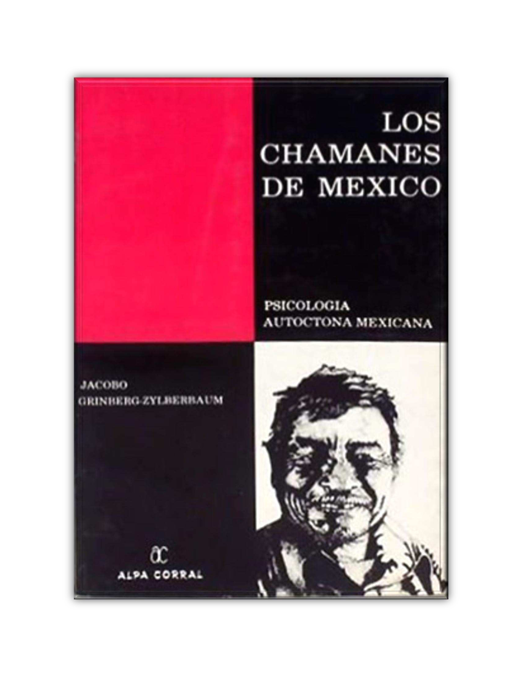
شامانات المكسيك
المجلد الأول
علم النفس المكسيكي الأصلي
ياكوبو غرينبرغ زيلبرباوم
ألبا كورّال
صفحة العنوان
المجلد الأول • صفحة ملف المصدر: 1 • الصفحة المطبوعة: غير مرقمة
شامانات المكسيك
المجلد الأول
علم النفس المكسيكي الأصلي
تمويل الدراسة
المجلد الأول • صفحة ملف المصدر: 2 • الصفحة المطبوعة: غير مرقمة
مُوِّلت هذه الدراسة جزئيًا من برنامج مشترك بين المجلس الوطني للعلوم والتكنولوجيا (CONACYT) وكلية علم النفس في الجامعة الوطنية المستقلة في المكسيك (UNAM) .
مشروع CONACYT
PCCSCNA - 030756
صفحة العنوان المؤسسية
المجلد الأول • صفحة ملف المصدر: 3 • الصفحة المطبوعة: غير مرقمة
ياكوبو غرينبرغ زيلبرباوم
شامانات المكسيك
المجلد الأول
علم النفس المكسيكي الأصلي
كلية علم النفس
الجامعة الوطنية المستقلة في المكسيك
والمعهد الوطني لدراسة الوعي
I.N.P.E.C.
بيانات النشر
المجلد الأول • صفحة ملف المصدر: 4 • الصفحة المطبوعة: غير مرقمة
الطبعة الأولى
ألبا كورّال، المكسيك، 1987.
الطبعة الثانية
ألبا كورّال، المكسيك، 1988.
الطبعة الثالثة
المعهد الوطني لدراسة الوعي (INPEC) ، المكسيك، 1990.
الغلاف: خيراردو سوسان.
© ياكوبو غرينبرغ زيلبرباوم.
جميع الحقوق محفوظة لجميع البلدان الناطقة بالإسبانية.
ISBN: 968-6238-00-X
طُبع وصُنع في المكسيك.
الفهرس
المجلد الأول • صفحة ملف المصدر: 5 • الصفحة المطبوعة: غير مرقمة
تقديم وشكر — 9
مقدمة — 11
الفصل الأول: دون لوسيو من موريلوس — 15
القسم الأول: اللقاء الأول — 17
القسم الثاني: تلقين شاماني — 31
تلقين دون لوسيو — 36
الارتباطات النفسية الفسيولوجية — 45
الفصل الثاني: دونيا باتشيتا من مدينة مكسيكو — 53
سلسلة النسب — 57
التاريخ الشخصي — 58
أنماط عمل باتشيتا — 59
التشخيص — 60
النمط الجراحي — 60
التعامل مع المكان والمادة — 65
النمط التلقيني أو الصوفي — 66
مفهوم الواقع لدى باتشيتا — 67
تطور الوعي — 69
آفاق — 71
استنتاجات — 74
الفهرس، تتمة
المجلد الأول • صفحة ملف المصدر: 6 • الصفحة المطبوعة: غير مرقمة
ملحق عن باتشيتا — 77
تجاربي مع باتشيتا، بقلم رامون مانسيّا تينوكو — 77
الفصل الثالث: دونيا ماريا سابينا من هواوتلا — 87
الفصل الرابع: دون إيفان رامون من مدينة مكسيكو — 95
الفصل الخامس: دونيا أسونسيون من إيدالغو — 103
الفصل السادس: دون إينوسينسيو فلوريس دي لا كروس، من سان ميغيل تسيناكابان، بويبلا؛ جمعه إدواردو ألميدا أكوستا — 111
الفصل السابع: دونيا ليتشا من بويبلا — 129
دونيا ليتشا — 131
تقنيات العلاج لدى دونيا ليتشا — 133
الفصل الثامن: «الحسيديم» في موريلوس — 137
الفصل التاسع: دون فلورنسيو من موريلوس — 143
خلفية — 145
مفهوم الحياة لدى دون فلورنسيو — 147
قبائل الكائنات الروحية — 147
تعلّم دون فلورنسيو — 148
الدروس — 148
درس لدون فلورنسيو — 150
مفهوم الواقع لدى دون فلورنسيو — 158
المراجع — 169
تقديم وشكر
المجلد الأول • صفحة ملف المصدر: 7 • الصفحة المطبوعة: 9
الكتاب الذي أقدمه الآن ليس سوى تصوّر أولي لعلم النفس عند سكّان المكسيك الأصليين، الذي يحتاج الكشف عنه، لا إلى مجلد واحد، بل إلى مئات المجلدات التي تكون أكثر حكمة وأفضل إعدادًا من هذا المجلد بكثير.
إن التعقيد المفهومي وحكمة الروح المكسيكية، إلى جانب ما يوجد من حكمة في هذا الموضوع، تنعكس في العدد المتزايد من ممثليها، أي الشامانات وعلماء النفس الأصليين، «رجال المعرفة»، الذين يُعدّون بالآلاف، منتشرين في كل قرية ومدينة من قرى بلادنا ومدنها.
هذا الكتاب المتواضع، القائم على رواية مواقف وتجارب، لا يمثل سوى محاولة لفتح الأعين على واقع مستتر لكنه حي، مصون لكنه نابض بالقوة في عمق جوهر بلادنا وقلبها.
وقد تصوّرت هذا العمل في الأصل سلسلةً من المقالات؛ وهو يطمح إلى أن يكون بداية عملية لإنقاذ حكمة المكسيك الأصلية، تلك الحكمة التي انتقص الغزو والحداثة من قيمتها وسحقاها، لكنها تظل حكمة في نهاية المطاف، وبصفتها هذه ظلت باقية على امتداد آلاف السنين.
ليت هذه المحاولة الأولى تجعلنا، نحن جميعًا الذين نسكن المكسيك، نرى أن الروح تطلب أن تولد من جديد وراء أزمة المادية التي نعيشها، وأن من واجبنا أن نمنحها الميلاد.
الشكر، تتمة
المجلد الأول • صفحة ملف المصدر: 8 • الصفحة المطبوعة: 10
أود أن أشكر جميع الأشخاص الذين جعلوا هذه الدراسة ممكنة، ولا سيما الأستاذ ميغيل غونثاليث أفيلار، وزير التعليم العام، الذي دعم اهتمامي بمعرفة مكسيك السكان الأصليين وشجعه.
وإلى تيريسا فالي، على دعمها غير المشروط.
وإلى جيني لويس، على عملها التحريري الممتاز.
وإلى مونيكا فيرتشيث وإكستاسيواتل كارّاسكو، اللتين اضطلعتا بالعمل الشاق المتمثل في تفريغ الدراسات والمقابلات من التسجيلات الصوتية.
وإلى إميليا فلوريس ميلو، التي تولّت إدخال البيانات في الحاسوب وترتيبها وتحليلها.
وإلى غوادالوبي رويث أفيلا، على تعاونها.
وإلى فرانسيسكو سان رومان وهنري بيرغونزي، على حماستهما ومسؤوليتهما في قبول نشر نتائج البحث في مجلدات هذه السلسلة.
وأخيرًا، إلى علماء النفس المكسيكيين الأصليين وإلى شامانات المكسيك.
ي. غ. ز.
فبراير 1987
مقدمة
المجلد الأول • صفحة ملف المصدر: 9 • الصفحة المطبوعة: 11
من أكثر مواقف المكسيكي المعاصر حزنًا وإثارةً للقلق ميله إلى الانتقاص من ذاته؛ وربما كان ذلك نتيجة غزو وحشي اتسم بانعدام تام لاحترام قيمه الأصيلة، ورسّخ فيه أن ينظر إلى ما يخصّه بوصفه عديم القيمة، وإلى ما يأتي من الخارج بوصفه كليّ القدرة.
تكفي ملاحظة الطوابير الهائلة التي تتكوّن أمام مطاعم «ماكدونالدز» المفتتحة حديثًا، أو التفضيل الغالب في المكسيك للادخار بالدولار في مصارف الولايات المتحدة، لندرك أن المكسيكي لا يثق بأمّته، وأنه ما زال يسمح للأجنبي بأن يغزوه.
وأشد ما في الأمر غرابة أن موقف الخضوع هذا قائم في بلد كهذا، يعيش فيه بعض أكثر أشخاص هذا الكوكب تطورًا؛ وأعني رجال المعرفة في المكسيك، أي الشامانات وعلماء النفس الأصليين.
منذ أزمنة موغلة في القدم، كانت كل قبيلة من قبائل سكان المكسيك القدامى تُقاد روحيًا على يد رجل أو عدة رجال يتميزون بذكائهم وحدسهم وقدرتهم على الاستبصار. وعلى الأقل،
مقدمة، تتمة
المجلد الأول • صفحة ملف المصدر: 10 • الصفحة المطبوعة: 12
منذ عهد التولتك، بدأ رجال المعرفة هؤلاء يؤسسون سلاسل توارث، ينقلون من خلالها، عبر سلسلة من الخلفاء ومن جيل إلى جيل، طريقتهم الخاصة في خلق الواقع.
إن عدد سلاسل التوارث الموجودة حاليًا في المكسيك غير محدد، وإن كان معروفًا أنها كثيرة. وقد نجت سلاسل عديدة منها من الغزو، بينما أُنشئت أخرى بعده. وتوجد في كل قرية أو ناحية أو مدينة تقريبًا، وتشكل ثقافة فرعية ذات تعقيد وثراء لا يخطران على البال. وهي تتكرس لعلاج الأمراض، والتنبؤ بالمستقبل، وإسداء النصح، وتخفيف الكرب. وتستشيرها قرى بأكملها لأنها تجد فيها الإرشاد والعزاء. ولرجال المعرفة هؤلاء حدسٌ قوي، واستعدادهم لإدخال غيرهم في هذا الطريق أقوى. إنهم الناطقون باسم تقاليد عمرها آلاف السنين، ويمثلون أصدق جذور الهوية المكسيكية وأكثرها غموضًا. ويحقق بعضهم إنجازات تكاد تكون إعجازية في الحدس والمعرفة، ويتمتع جميعهم تقريبًا بقوة إرادة وتفاؤل يُحسدون عليهما. وهم يحاربون السحر، ويعدّون أنفسهم مدافعين عن العاجز والضعيف.
وبغرض إنقاذ معرفة هؤلاء الرجال تحديدًا، بدأنا بحثًا على المستوى الوطني، مقتنعين بأن شعبًا يمتلك ثراءً إنسانيًا استثنائيًا كالمكسيك ليس لديه أي سبب للشعور بالدونية، وأن ما يحدث، ربما، هو أننا لا نعرف أنفسنا ونجهل حقيقتنا. ونأمل أن يساعدنا هذا البحث على إعادة تقدير أنفسنا وعلى زيادة ثقتنا بها.
وبهذه النية نلتزم، إذن، بنشر نتائج هذا البحث.
أما المنهجية المستخدمة في هذا المشروع، فقد اعتُبرت الدراسة بالمشاركة هي الأنسب؛ إذ عاش الباحثون مع الشامانات، وخضعوا لتعاليمهم، وفي
مقدمة، تتمة
المجلد الأول • صفحة ملف المصدر: 11 • الصفحة المطبوعة: 13
بعض الحالات أصبحوا تلاميذهم. وبهذه الطريقة أمكن الحصول على معلومات دقيقة ومباشرة عن ممارساتهم وتعاليمهم. وأتاحت هذه المنهجية أيضًا اختبار بعض الإجراءات العلاجية التي يستخدمها الشامانات.
وفي بعض الحالات أُجريت مقابلات مع مرضى الشامانات وتلاميذهم، ونُفّذت متابعات مستفيضة لآثار تعاليمهم وعلاجاتهم، واستُخدمت لهذا الغرض معدات سمعية بصرية.
وقد تطلب هذا العمل القيام برحلات متواصلة وإقامات طويلة في المجتمعات التي يعيش فيها الشامانات.
وأخيرًا، أود أن أذكر أن النتائج التي حصلنا عليها حتى اليوم تدعم مسلّمات النظرية السينترجية. وتذهب هذه النظرية إلى أن الواقع الإدراكي نتاج التفاعل بين مجال طاقي ينشّطه الدماغ، وهو المجال العصبي، وبنية الزمكان، أي المجال الكمومي. ويخلق تفاعل المجالين نمط تداخل يغمر المكان كله. وتنشأ الخبرة الواعية حين يركّز المراقب آلية افتراضية تُسمى عامل الاتجاهية على جزء ما من نمط التداخل.
ويبدو أن الشامانات يمتلكون براعة كبيرة في تركيز عامل الاتجاهية لديهم، بحيث يستطيعون تنشيط خبرات مختلفة في مواضع مختلفة من المكان وعلى مستويات مختلفة من الواقع.
صفحة بيضاء
المجلد الأول • صفحة ملف المصدر: 12 • الصفحة المطبوعة: غير مرقمة
ملاحظة تحريرية: هذه الصفحة بيضاء في المصدر المرفق.
الفصل الأول
المجلد الأول • صفحة ملف المصدر: 13 • الصفحة المطبوعة: 15
دون لوسيو من موريلوس
صورة دون لوسيو
المجلد الأول • صفحة ملف المصدر: 14 • الصفحة المطبوعة: 16
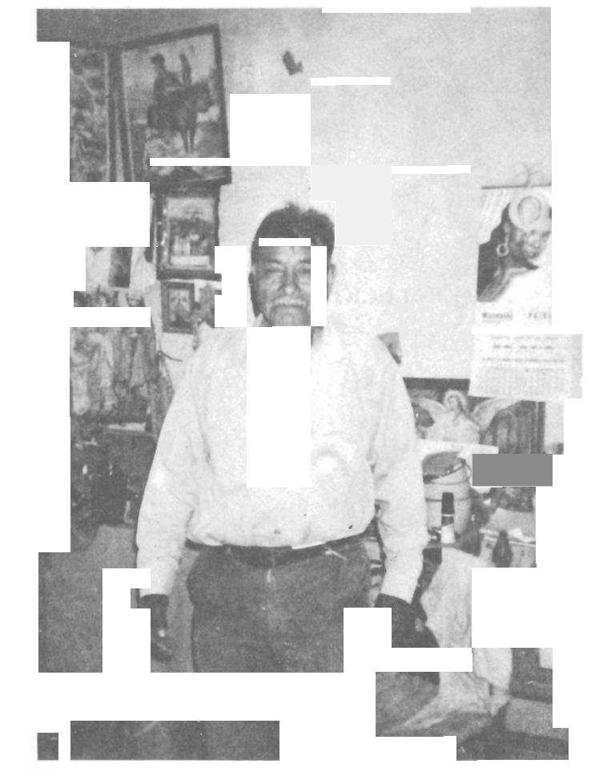
دون لوسيو من موريلوس، في عام 1986.
ملاحظة تحريرية: العيوب المستطيلة ظاهرة في صورة المصدر المرفق، وأُبقيت دون استكمال تخميني.
اللقاء الأول
المجلد الأول • صفحة ملف المصدر: 15 • الصفحة المطبوعة: 17
ينتظم شامانات المكسيك في سلاسل توارث مختلفة، بحسب تقنياتهم وإجراءاتهم وتصورهم الخاص للواقع.
ومن هذه السلاسل سلسلة الغرانيسيروس في ولاية موريلوس، التي تتكرس للتعامل مع الأحوال الجوية، بهدف منع العواصف أو عواصف البَرَد أو الصقيع من تدمير مزروعات المجتمعات التي تحميها.
دون لوسيو كامبوس أحد قادة سلسلة الغرانيسيروس في موريلوس. وبالنسبة إلى دون لوسيو، ينقسم الواقع إلى قسمين كبيرين: العالم المرئي والعالم غير المرئي. والعالم المرئي هو واقع الأشياء والأجساد والظروف الفيزيائية والمادية.
أما العالم غير المرئي فهو واقع الكائنات التي تعيش في الفضاء، أي «عمّال الطقس».
ووفقًا لدون لوسيو، يستطيع شامان من سلسلته أن يتصل بعمّال الطقس إذا اختير لذلك. وعلامة الاختيار حادث مروّع يتمثل في
اللقاء الأول، تتمة
المجلد الأول • صفحة ملف المصدر: 16 • الصفحة المطبوعة: 18
سقوط صاعقة على جسد المرشح ونجاته منها. وقد أصابت صاعقة دون لوسيو نفسه منذ أكثر من ثلاثين عامًا، وأصبح بعد ذلك شامانًا.
وبهذه الصفة، يتكرس دون لوسيو لعلاج أفراد المجتمع الذين يطلبون ذلك. وإلى جانب عمله معالجًا شعبيًا، فهو معلّم ومرشد لمجموعة من التلاميذ الذين يزورونه.
ومرة كل عام، في الخامس من مايو، يقيم هذا الشامان، مع أفراد سلسلته وتلاميذه، مراسم في «إل كاليكا (El Caleca)»، وهو كهف يقع بين بركاني بوبوكاتيبيتل وإستاسيواتل. وفي هذا الكهف يطلب دون لوسيو القوة لمواجهة العواصف وعواصف البَرَد بنجاح.
وتجري حياة دون لوسيو اليومية بوصفه فلاحًا من موريلوس، يتولى رعاية حقله وحيواناته وبيته. وهو متزوج وله عدة أبناء، ويؤكد أن عمله شامانًا ينبغي أن ينسجم مع حياته زوجًا وأبًا وجدًا وفلاحًا، حتى تتوازن مسؤولياته كلها.
ويخصص دون لوسيو موضعًا في منزله لمذبحه، حيث يمارس فنونه العلاجية وتعليمه الشاماني.
وقد عرفت بوجود دون لوسيو عن طريق صديق. وكان اهتمامي بدراسة التصورات النسبية عن الزمن هو ما دفعني إلى البحث عنه. وفي ما يأتي رواية لقائي الأول به.
توجهت عصر أحد الأيام إلى تلاياكابان. لم أكن أعرف عنوان دون لوسيو، فقررت أن أترك حدسي يرشدني. وعند أحد مخازن الحبوب لاحظت كوخًا غريبًا، وظننت أن دون لوسيو يسكن هناك، فاستكشفته. وبعد هذه المحاولة ومحاولة أخرى فاشلة، قررت أن أسأل صديقي عن عنوان دون لوسيو. وصديقي،
اللقاء الأول، تتمة
المجلد الأول • صفحة ملف المصدر: 17 • الصفحة المطبوعة: 19
وهو عالم أنثروبولوجيا وخبير في الشامانية وصانع أفلام تجريبية، أخبرني أين يمكنني العثور عليه.
غادرت تلاياكابان، وفي الطريق أحاطت بي عاصفة رهيبة. وجعلني بعض الأطفال أتردد في مواصلة السير، وأدى ذلك إلى أن أصادف دون لوسيو في شاحنته الصغيرة على الطريق.
وعلى أي حال، تعرّفت إلى أسرته. وأثارت إعجابي زوجته، وهي امرأة جميلة جدًا من السكان الأصليين، وقد تقدمت بها السن، بنقاء ملامحها والتجاعيد الممتدة جانبيًا من عينيها؛ وهي التجاعيد نفسها التي لدى دون لوسيو.
وبعد يومين عدت إلى لقاء دون لوسيو.
غادرت مدينة مكسيكو صباحًا، وعند موعد اللقاء لم أكن قد تجاوزت موضع الإطلالة في كويرنافاكا. كنت أشعر بالتعب وسوء المزاج. وبعد أن غفوت لحظات، شعرت فجأة بالحاجة إلى الانطلاق. شغّلت السيارة، وفي أقل من ست دقائق كنت قد وصلت إلى تيبوستلان. لقد حدث شيء، إذ إن هذه المسافة، بالسرعة التي كنت أسير بها، تستغرق اثنتي عشرة أو ثلاث عشرة دقيقة. بدا الأمر كما لو أن قوة ابتلعتني ثم أودعتني في تيبوستلان.
وفي ما بعد استقبلني دون لوسيو بلطف، وقدّم لي كرسيًا صغيرًا في غرفة مذابحه وقرابينه، وكانت ممتلئة بصور القديسين والصلبان الموضوعة في وسط طاولة. وبعد أن تبادلنا التحية وسأل عن أصلي ومكان إقامتي، ابتسم ابتسامة عريضة وسألني: ما حاجتك؟
شعرت بأن عليّ شرح مقاصدي. حدثته عن عملي واقتناعي بأن الزمن باب إلى الحكمة. وبعد الشرح لزمت الصمت. أسند دون لوسيو ذقنه إلى راحة يده، وضيّق عينيه وتأمل لحظات. ثم التفت إليّ وقال: «الزمن مهم جدًا، لكن أن تتعلّم منه أمر صعب، وثمنه باهظ».
اللقاء الأول، تتمة
المجلد الأول • صفحة ملف المصدر: 18 • الصفحة المطبوعة: 20
شعرت بتناقض. لم أستطع أن أمزج الاقتصادي بالروحي، ولا سيما حين يتعلق الأمر برجل من السكان الأصليين. فقد ربّتني امرأة من السكان الأصليين، وحين توفيت أمي حلّت تلك المرأة محلّها في البيت. وعرفت الجمال والنقاء والأمانة التي تختبئ في روح أحد السكان الأصليين وقلبه. وأربكني وأقلقني ما ذكره دون لوسيو عن ارتفاع كلفة تعلّمي. ومع ذلك، كان في وجهه شيء لا يتوافق مع العامل المالي. لا بد أن دون لوسيو كان يختبرني. وحين وصلت إلى هذا الاستنتاج اطمأننت وقلت له:
— إذن، قل أنت، وسنرى إن كنت أستطيع تحمّلها.
أطلق دون لوسيو همهمة «ممم…»، وبعد أن تأمل لحظة أخرى غيّر نبرته فجأة.
— يحتاج الأمر إلى حماسة كبيرة، قال برفق، والخطر كبير أيضًا. فـ«أهل الزمن» شديدو المراس، ولا طرق هناك. [ملاحظة المترجم: يستعمل دون لوسيو كلمة tiempo، وهي تعني في الإسبانية الزمن والطقس معًا. جاء غرينبرغ يسأل عن الزمن، بينما يسمّي دون لوسيو الأرواح المرتبطة بالعواصف «عمّال الطقس».]
ظننت أنني لم أسمع جيدًا. كان دون لوسيو يتحدث عن أهل الزمن، ويذكر مكانًا محددًا يقيمون فيه. وظننت أنه ربما يشير إلى مستوى آخر من الوجود.
— في أي مكان يعيش هؤلاء الناس، يا دون لوسيو؟
ابتسم ثانية، بتعبير يمتزج فيه الجد بالغموض والمفارقة.
— أنا أعرف عمّا أتحدث، يا ياكوبو. عشت معهم ثلاث سنوات، والأمر ليس سهلًا.
— ثلاث سنوات؟ سألت مندهشًا.
— نعم يا سيدي، أجابني دون لوسيو بيقين. مكثت معهم ثلاث سنوات، وعلّموني ما هو الزمن.
كانت حماستي تزداد في كل لحظة. وأظن أنني لو عرفت دون لوسيو قبل ذلك ببضعة أشهر لما صدقته، لكنني كنت قد أصبحت أقبل حقيقة وجود مستويات أخرى للوجود.
— أريد أن أعرف المزيد، يا دون لوسيو. لا يهمني ما سيتعين عليّ فعله. وأنا أقبل الخطر أيضًا.
اللقاء الأول، تتمة
المجلد الأول • صفحة ملف المصدر: 19 • الصفحة المطبوعة: 21
نظر إليّ دون لوسيو من جديد، وظهر على وجهه تعبير فهمت منه الثقة. وبدا مرة أخرى كأنه يتأمل لحظة قبل أن يتكلم.
— أرى حماسة وقوة، وهذا هو المطلوب. وما أريد معرفته هو نياتك.
كانت نيتي أن أعرف وأن أطير؛ هكذا، بالمعنى الحرفي. لكنني لم أكن أعرف كيف أشرح ذلك. ومن جهة أخرى، كنت قد كرّست حياتي للكتابة، وكنت أشعر مع كل كتاب جديد أنني أقدّم شيئًا إيجابيًا للإنسان. وهذا ما أخبرته به، مضيفًا مقارنة:
— أنت تتكرس للعلاج، يا دون لوسيو، لأنك تعرف أنه خير، وبه تسهم في رفاه الإنسان. وأنا أكتب للأسباب نفسها. نيتي أن أعرف أكثر وأن أشارك معرفتي.
— جيد جدًا، جيد جدًا، قال دون لوسيو برقة. أرى أنه لا يوجد شيء سيئ. أعتقد أنني أستطيع فعل شيء. سأستدعي الأرواح (لم يعد يسميهم «ناسًا»)، وأقول لهم إنك تريد التحدث معهم لتحصل بذلك على الحكمة.
بدا لي ذلك ممتازًا. كنت بحاجة إلى الحديث عن أفكاري، ومَن أقدر على فهمي وتعليمي من كيانات روحية؟ شكرته، وأفهمته أيضًا أن ما أريده هو أن أسلك ذلك الطريق وحدي، من دون الاعتماد على أحد.
— الشيء الوحيد الذي سيكون من الضروري فعله، قال دون لوسيو فجأة، هو إقامة مراسم سأمنح فيها «نورًا».
وفي النهاية سألته عما إذا كان التعامل مع الزمن يتيح الانتقال من مكان إلى آخر.
— بالروح نعم، أجابني، لكن ليس بالجسد. يمكن إيقاف الزمن أو تسريعه أو إبطاؤه، لكن لا أحد يستطيع السفر فيه بجسده.
وفي يوم الثلاثاء ذهبت لشراء جميع الأشياء اللازمة للمراسم، وأحضرتها إلى دون لوسيو. وتفحّص
اللقاء الأول، تتمة
المجلد الأول • صفحة ملف المصدر: 20 • الصفحة المطبوعة: 22
شموع النذور وصلصة المولي والزهور والفواكه والحلوى. ثم جلسنا نتحدث.
— كنت أتحدث معهم، قال دون لوسيو بجدية، وسألوني عمّا ستفعله بالمعرفة التي سيمنحونك إياها.
— سأكتب، يا دون لوسيو، قلت له.
— إنهم يقولون إن هناك أشياء لن تستطيع كتابتها، ويريدون أيضًا أن يعرفوا ما الذي ستفعله بعائدات كتبك.
عليّ أن أعترف بأن ذلك خيّب أملي. لم يكن من حق أحد، سوى ضميري، أن يقرر ما سأكتبه. ومن ناحية أخرى، ستكون الأرباح ضئيلة إلى حد السخف، لأنه مهما بيعت من كتب في المكسيك، إن وافق الناشرون أصلًا على نشرها، فإن ربح المؤلف يظل هزيلًا.
أخبرت دون لوسيو بذلك، مضيفًا أنني لا أقبل إملاءات بشأن ما أكتبه، لكنني أدرك ما يجب أن أتحلى به من عناية واحترام حين أفعل ذلك. وذكرت له أنني أفهم أن بعض الأشياء ينبغي ألا تُقال، وأن عليه ألا يقلق. وبدا دون لوسيو مقتنعًا، وسألني عمّا حدث لي منذ آخر مرة التقينا فيها. أخبرته بالصعوبات التي أمر بها، وقلت له إن لديّ شعورًا بأنني أُختبر.
— والأهم من ذلك، أضفت، هناك شخص أصادفه في أماكن غير متوقعة. رجل متقدم في السن، ذو وجه غريب جدًا، كان قد تقاطع مع طريقي مرات كثيرة إلى حد لا يمكن أن يكون معه الأمر مصادفة.
بدا القلق على دون لوسيو، وسألني عدة أسئلة عن أوصاف الرجل. ثم قال لي إنه سيراه في جولته الليلية.
— إن كان منهم، قال مبتسمًا، فسيأتونني به. وإن لم يكن منهم، فسنرى ما الذي يريده.
وعند الوداع شرح لي سبب شموع النذور التي طلبها للمراسم. وقال إنه عند
اللقاء الأول، تتمة
المجلد الأول • صفحة ملف المصدر: 21 • الصفحة المطبوعة: 23
إشعالها، سيعرف، من حجم الضوء، جواب الأرواح.
كان قد طلب مني في البداية ست شموع، لكنه ضاعف العدد هذه المرة.
— لأن المسألة أكثر جدية مما كنت أظن. نحتاج إلى اثنتي عشرة شمعة، بعدد الرسل، قال بجدية.
وطلب مني أيضًا كحولًا وسيجارًا. وكان السبب الذي أعطاني إياه أن «أناسًا» من جميع الأعمار سيحضرون المراسم. وكان الكحول لازمًا لأنه حين كان أولئك الناس يعيشون في العالم، لم تكن هناك مشروبات مثل الموجودة الآن. ومن أجل الأطفال طلب مني الشوكولاتة والحلوى.
وفي يوم الخميس وصلت متأخرًا ثلاثين دقيقة عن الموعد المتفق عليه. حيّاني حفيد دون لوسيو الصغير باسمي، وشرح لي جده أنه، قبل بدء المراسم، سيقوم بعمل في البرّ مع أحد تلاميذه.
قررت أن أرافقه، وبعد أن مشينا مسافة لا بأس بها، وجدنا أنفسنا في فسحة صغيرة تحيط بها الحقول. وعلى بعد مترين أو ثلاثة من الموضع الذي شعر فيه تلميذ دون لوسيو ببداية مرضه، كانت هناك شجرة متضررة أحرقتها صاعقة.
بدا ذلك منطقيًا لدون لوسيو. أشعل بخور الكوبال وبدأ مراسم «التطهير»، التي اشتملت على عدة مراحل. أولًا الكوبال، الذي نشر دون لوسيو دخانه في المكان كله. ثم غطّى المريض بالزهور ورشّه بالكحول. وأخيرًا نثر شراب الليمون في جميع الاتجاهات، وبسعفتين في يديه طرد الأرواح التي استحوذت على تلميذه وفكّ تشابكها؛ هكذا قال لاحقًا.
وفي طريق العودة سألته إن كان يستطيع رؤية الأرواح، فأجابني: «بالطبع! وإلا فكيف أستطيع العلاج؟»
ووصلنا أخيرًا إلى منزله. وبينما كنا نحضر «التطهير»، كانت زوجة دون لوسيو قد وضعت الزهور والفواكه والشموع على الطاولة. وشرح دون لوسيو
اللقاء الأول، تتمة
المجلد الأول • صفحة ملف المصدر: 22 • الصفحة المطبوعة: 24
أن علل تلاميذه هي علله أيضًا، ولذلك عليه أن يعالجهم ويرعاهم كما يرعى أبناءه.
بدأت المراسم بإشعال شموع النذور. وكان دون لوسيو ينظر إلى اللهب، ويطلق عبارات رضا أو قلق بحسب ارتفاعه ولونه. ثم قدّمني إلى مجلس الأرواح، قائلًا إنه يوصي بي، ومشددًا على حماستي وحسن نيتي ومقاصدي.
وظل دون لوسيو ينظر إلى اللهب ويعلن أن كل شيء يسير على ما يرام، وأنني لا أواجه مشكلات، وأنني قد قُبلت.
وفي ما بعد جلسنا لتناول الطعام، وبدأت أطرح عليه الأسئلة:
— هل يوجد التناسخ؟ هل يتناسخ أهل الزمن؟ هل يُكتسب الوعي أم يُودَع في جسد؟
كان دون لوسيو يضحك من الأسئلة ويجيب عنها واحدًا واحدًا.
— التناسخ موجود بالفعل، قال بوقار، وعمّال الطقس لا يعودون أبدًا، والوعي يُمنَح.
ثم ناقشنا نبوءة تبتية تذكر المكسيك بوصفها مكان بداية تغير كبير في الوعي.
— لقد بدأ التغير بالفعل، قال دون لوسيو، وسيكون كبيرًا جدًا.
لم يشأ أن يخبرني كيف بدأ أو متى، لكنه روى لي قصة جد التلميذ الذي كان قد «طهّره» للتو.
— كان رجلًا طيبًا جدًا، لكن الصواعق كانت تستهدفه. أصابته الصاعقة ثلاث مرات، وقتلته الأخيرة. فتحول إلى عامل، لأن هؤلاء يرافقون الصواعق دائمًا. والآن لدى حفيده عمل،
اللقاء الأول، تتمة
المجلد الأول • صفحة ملف المصدر: 23 • الصفحة المطبوعة: 25
لكنه «أهمل نفسه»، ولذلك أصابه المرض.
واصلنا الحديث عدة ساعات، وفي النهاية اتفقنا على أن نلتقي يوم الاثنين لنتحدث عن تجاربنا. وتوادعنا، وتمنى لي دون لوسيو كل خير.
شهادة غريتشن أندرسن
المجلد الأول • صفحة ملف المصدر: 24 • الصفحة المطبوعة: 26
نورد في ما يلي رواية للانطباعات التي تركها دون لوسيو لدى غريتشن أندرسن، التي انضمت عام 1985 إلى البحث المتعلق بشامانات المكسيك.
غريتشن أندرسن باحثة تخصّصت في الولايات المتحدة في ثقافات السكان الأصليين.
لقد كُتب من قبل عن الشامان دون لوسيو، وفي الواقع تأكد لي، منذ أول زيارة قمت بها إليه، كثير مما كنت قد قرأته وسمعته عنه. وجدته رجلًا يستقبل زائريه بمودة، ولديه معرفة عميقة ضمن رؤيته للحياة والواقع. ويبدو أن الحياة تجري بصورة عادية لهذا الفلاح المجتهد، الذي يعمل يوميًا في حقول قريته، ويؤكد لزائريه أهمية توفير الخبز للمائدة، ولا سيما في هذه الأوقات المتزايدة صعوبة. لكن ليس كل ما يتحدث عنه شائعًا أو عمليًا إلى هذه الدرجة؛ فهو يشدد أيضًا على واجباتنا الروحية وصلاتنا بـ«عالم غير مرئي» نتفاعل فيه مع كائنات من أبعاد أخرى أو مستويات أخرى من الوجود. إنه رجل متوازن، ويبيّن كيف تنسجم الاعتبارات العملية للحياة اليومية مع عالم من الغموض لم يختبره أو يفهمه إلا قليلون منا.
كان لقائي الأول مع دون لوسيو ضمن مجموعة. ولفت نظري مدى التدقيق في أسئلته لكل زائر، متعمقًا في جانب محوري من حياته، بينما بدا ظاهريًا كأنه يدلي بملاحظات بسيطة. وأعطى انطباعًا بأنه لا يوجد جزء من حياتنا نستطيع إخفاءه عنه. وبعد هذه المرحلة التمهيدية، تحدث عن زماننا الحاضر وما سيأتي به المستقبل، راسمًا
شهادة غريتشن أندرسن، تتمة
المجلد الأول • صفحة ملف المصدر: 25 • الصفحة المطبوعة: 27
صورة متشائمة. وتحدث عن عجزنا الراهن عن علاج أمراض شائعة، كان يمكن علاجها حتى وقت قريب بطريقة بسيطة وفعالة. ولاحظ قائلًا: «الزكام الآن ببساطة ليس كما كان من قبل. لا يمكن شفاؤه بحبة أسبرين وليمون»، محذرًا إيانا من المشكلات الاقتصادية والصحية التي تنتظرنا، لكنه بدا في الوقت نفسه كأنه يلمّح إلى أمراضنا الاجتماعية الحالية التي لا يُعرف لها علاج.
وقدّم حلًا ممكنًا لهذه الأزمة حين ذكر رجلًا سيأتي، رجلًا ذا قوة وحكمة عظيمتين، سيكون قدره مساعدتنا على عبور الأزمنة الصعبة. وجعلني أفكر في رؤى نهاية الزمان ومجيء مخلّص، وقارنه شخص آخر من الحاضرين بإميليانو زاباتا معاصر.
يبدو أن دون لوسيو، وهو في الحادية والسبعين، لم يجد بعد تلميذًا أو وريثًا يستطيع أن يواصل العمل مكانه؛ ولم يجد شخصًا يشاركه رؤاه، حتى الكهنة الذين زاروه لم يستطيعوا التحدث عن «القطعان» أو عن «الرعاة الذين يعتنون بالقطعان». لقد جاء كثيرون لزيارته والتعلّم منه، لكنهم حتى الآن لم يتجاوزوا حدود الفهم العقلي، حيث لا تُدوّن الملاحظات بالقلم والورق، بل تُكتب إلى الأبد داخل الرأس. وهكذا يكرر دون لوسيو كثيرًا: «ضعوه هنا»، بينما يكتب كلمات غير مرئية على جبهته. «هنا لا يمكن أن تضيع أبدًا أو أن تُنسى».
حدثني عن إحدى أولئك الزائرات، دورا من نيويورك، التي جاءت لتتحدث معه وتتبادل معه ما تعرفه عن أساليب العلاج والتحكم في الطقس. وبعد عدة لقاءات، يبدو أن أسئلة دورا ظلت تتزايد، وفي إحدى المرات سألت دون لوسيو أخيرًا إن كان يوجد كتاب مكتوب يتضمن كل هذه المعلومات،
شهادة غريتشن أندرسن، تتمة
المجلد الأول • صفحة ملف المصدر: 26 • الصفحة المطبوعة: 28
يمكنها قراءته. فأجاب: نعم، بالطبع يوجد، وأعطاها إياه لتقرأه. وروى لنا ضاحكًا أنها حين حاولت قراءته عادت مسرعة، محتجة بأنه مكتوب باليونانية. وهنا توقف دون لوسيو بغموض لينظر إلينا، ليرى إن كنا قد فهمنا النكتة، ثم واصل الضحك. ووفقًا لدون لوسيو، كان لا يزال أمام دورا الكثير لتتعلمه عن التحكم بالأحوال الجوية، لأنه اضطر إلى تعليمها أمرًا أوليًا مثل توليد الغيوم والصواعق. ووضّح ذلك بقوله: «ترسل الصاعقة هكذا»، وأدى بيديه حركة ذات طابع مغناطيسي. «ثم تنادي إيمانويل من بوبوكاتيبيتل ليُرسل سحابة صغيرة في هذا الاتجاه». وواصل تعليقاته على دورا، وكيف ودّعها سعيدًا، مقتنعًا بأنها تعرف القليل جدًا عن هذه الأمور.
وأثناء سماعي هذه القصة، كنت مدركة أن جزءًا كبيرًا مما رواه لنا دون لوسيو لم توضحه كلماته وحدها، بل كل حركة وكل إيماءة أيضًا، وأن مقصده من رواية القصص لم يكن التسلية، بل إيصال رسالة إلينا، يتوقف فهمها على قدرتنا الإدراكية على استيعابها.
«هل نحن جميعًا الشيء نفسه، يا دون لوسيو؟ هل الشخص الذي يراقب هو الذي يرى الشيء نفسه فينا جميعًا؟» سأل أحد أفراد المجموعة، وتحدث في سياق الحوار عن هويتنا وعن عوالم أخرى. وأجاب دون لوسيو عن السؤال قائلًا أولًا إننا جميعًا مختلفون، لكل منا طريقته الخاصة في الوجود والفعل؛ لكن الذي يرى، يرى الجميع سواءً. نحن جميعًا الشيء نفسه في الجسد والعقل والجوهر؛ ومع ذلك نحن مختلفون في الوقت نفسه. واتضحت الفكرة أكثر حين قال إننا جميعًا نأتي من الأصل نفسه، من «النَّفَس الإلهي» نفسه، وفق تعبيره. وتوجد الفروق بيننا بسبب «الهبات التي أُعطيت لكل واحد». وهذه «الهبات» هي
شهادة غريتشن أندرسن، تتمة
المجلد الأول • صفحة ملف المصدر: 27 • الصفحة المطبوعة: 29
التي تجعلنا كما نحن، وترسم نوع الحياة التي نعيشها؛ وتمنحها كائنات مثل الرعاة وعمّال الطقس، وتتحكم فيها وتوجهها. وشرح دون لوسيو أن عمّال الطقس يوجدون في عالم يشبه عالمنا من الناحية المادية. فيه نساء وأطفال ورضّع وكبار؛ لكن ثمة فرقًا مهمًا، هو أن عالمهم يعيش في انسجام وسلام كاملين. وشرح لي أن هناك عمّالًا من قبل وعمّالًا من بعد. ويبدو أننا جميعًا كنا عمّال طقس قبل هذه الحياة، وأننا نستطيع أن نعود عمّال طقس بعدها. وحين سألته عمّا ستكون مهمته التالية بعد انتهاء هذه الحياة، أجاب بأنه سيفعل ما يطلبه منه الرب، ولم يشر إلى ما يمكن أن تكون عليه تلك المهمة. تحدثنا قليلًا عن هذه الأمور، ورغم أن كثيرًا منها ظل يحتاج إلى استكشاف، وأسئلة كثيرة بقيت تحتاج إلى طرح، قررنا الانتظار إلى الزيارة التالية لأن دون لوسيو كان متعبًا.
وقبل أن نغادر، أجرى دون لوسيو تطهيرًا لكل واحد منا، أو، كما أفضّل أن أقول، منحنا إحدى «هباته». وملأت رائحة الأعشاب والكحول الغرفة، بينما كان دون لوسيو يكرر بركته لكل واحد، ويربّت بسائله الخاص على رؤوسنا وظهورنا وصدورنا، ويبارك أيدينا من أجل الأعمال التي ستقوم بها لاحقًا. وكان دون لوسيو مريضًا في الآونة الأخيرة، ولذلك اختصرنا الزيارة لنتركه يرتاح، وشكرناه على الوقت والطاقة اللذين شاركهما معنا.
صفحة بيضاء
المجلد الأول • صفحة ملف المصدر: 28 • الصفحة المطبوعة: غير مرقمة
ملاحظة تحريرية: هذه الصفحة بيضاء في المصدر المرفق.
تلقين شاماني
المجلد الأول • صفحة ملف المصدر: 29 • الصفحة المطبوعة: 31
كما رأينا، يعيش دون لوسيو كامبوس في قرية صغيرة بولاية موريلوس. ومنذ أكثر من ثلاثين عامًا لُقِّن فن العلاج والتحكم في العواصف والبَرَد، بهدف حماية محاصيل منطقته من الضرر.
ذات يوم، بينما كان يرعى أبقاره في الحقل، رأى دون لوسيو كرة متعددة الألوان تقترب منه. وحين حاول الإمساك بها فقد وعيه. وعندما أفاق أدرك أن صاعقة أصابته. عاد إلى بيته، واستغربت زوجته رائحة الاحتراق المنبعثة منه.
وبعد ثمانية أيام، حين كان في الحقل مرة أخرى، بدأ يرى كائنات صغيرة تناديه. وفي اليوم التالي توقف عن الطعام، وبدأ يفقد اهتمامه بالحياة اليومية. وحاولت زوجته الخائفة علاجه، لكن من دون نجاح. وأخذ يدخل شيئًا فشيئًا في غيبوبة، وبقي كذلك ثلاث سنوات.
يروي دون لوسيو أنه بينما ظل جسده فاقدًا للوعي، ويُغذّى اصطناعيًا، كانت روحه مستيقظة وتتلقى تعليمًا يمنحه إياه «عمّال الطقس»، وهم كائنات روحية تتولى الحفاظ على التوازن الجوي للكوكب.
وخلال السنة الأولى من تعليمه وتلقينه
تلقين شاماني، تتمة
المجلد الأول • صفحة ملف المصدر: 30 • الصفحة المطبوعة: 32
بوصفه شامانًا، سافر دون لوسيو مع عمّال الطقس في طول الأرض وعرضها، بينما كانوا يعلمونه كيف يتحكم بالعواصف، ويحوّل اتجاه البَرَد، و«يطلق الصاعقة». وخلال السنة الثانية دُرّب دون لوسيو على التعرّف إلى الأعشاب الطبية، وتلقى تعليمات عن فن العلاج وتقنياته. وعمّال الطقس، هؤلاء «الكائنات الأثيرية» وفقًا لدون لوسيو، ينتمون إلى قطعان تتميز بألوانها. فهناك قطعان بيضاء وصفراء وخضراء وسوداء وغيرها. ويمثل كل منها أمة وحالة من الوعي. ويعتبر دون لوسيو أن المكسيك هي القطيع الأبيض، لقدرتها على الوجود في الكينونة أو مركز الوعي.
ويقود كل قطيع بدوره راعٍ يرشده ويتولى تطوره. ويقود الرعاةَ «راعي الرعاة»، الذي ينسب إليه دون لوسيو وظائف إلهية.
وبعد أن جاب جميع القطعان وتعرّف إلى رعاتها، وصل دون لوسيو إلى وادٍ بديع، كان راعي الرعاة في وسطه. واستقبله هذا الأخير وهنأه على بلوغه هذا المدى في تطوره. وطلب الشامان من الراعي أن يأذن له بمواصلة التعلّم، فأشار «الراعي الأعلى» إلى درب. فسلكه دون لوسيو، ووصل إلى ثلاثة جبال لم يكن بعدها طريق. وفي ذلك الموضع تلقى هذا الشامان تلقينه الأخير، الذي تمثل في تعلّم التمييز بين الخير والشر ومعرفة السلوك البشري. ثم أمره راعي الرعاة بأن يعود إلى جسده المادي، وأن يستخدم ما تعلّمه لمنفعة البشرية المتألمة على الأرض.
وفعل دون لوسيو ما طُلب منه، وهو يتكرس حتى الآن للعلاج وحماية مزروعات قريته من العواصف وغيرها من النكبات.
وقد تشكلت حول دون لوسيو مجموعة من
تلقين شاماني، تتمة
المجلد الأول • صفحة ملف المصدر: 31 • الصفحة المطبوعة: 33
التلاميذ الذين يتعلمون استخدام الأعشاب الطبية وغيرها من التقنيات العلاجية.
ويستخدم دون لوسيو التطهير لإعادة تنظيم طاقة الجسد، وما يسمّيه «القراءة» للتشخيص. وينفّذ التطهير مستعينًا ببيض المزارع الذي يمتص الطاقات السيئة عند دلك أجساد المرضى به. ويجري هذه القراءة بوضع البيض داخل أكواب شفافة مملوءة بالماء. وبحسب الأشكال البروتينية والفقاعات ووضع الصفار وما إلى ذلك، يقدّم دون لوسيو تفسيرًا تشخيصيًا لا يخلو من إشارات إلى الأرواح والأعمال المصنوعة بدافع الحسد والكراهية.
و«يتوّج» هذا الشامان بعض تلاميذه. وفي مراسم التتويج يدخل المرشّح في عداد «خدّام الطقس». وهذه فئة بشرية تقع بدرجة دون الفئة الأثيرية لعامل الطقس. ويستطيع خادم الطقس العلاج والتعامل مع الأحوال الجوية، بإرشاد حامٍ أو عدة حماة من عمّال الطقس.
وقد روى لي دون لوسيو بنفسه مثالًا لعملية تلقين.
فقد أبصر قطيع من عمّال الطقس غوبي، وهي شابة أمريكية تقيم في تاسكو. وانجذب أحد هذه الأرواح إلى الشابة. وطلب هذا العامل إذنًا بأن يصبح حامي غوبي ومرشدها. ومنحه «الرب» الإذن بعدما تأكد أولًا من أن نيات العامل تتجه إلى الارتقاء بالشابة.
وذهب العامل، على هيئة سحابة، للبحث عن غوبي، ليجد الخبر غير السار بأنها لم تعد تعيش في تاسكو. وعُثر على المرشحة في الولايات المتحدة، التي كانت قد ذهبت إليها في زيارة. وانتظر العامل حتى ركبت غوبي طائرة عائدة إلى المكسيك، وبعد خمس دقائق من الإقلاع أطلق
تلقين شاماني، تتمة
المجلد الأول • صفحة ملف المصدر: 32 • الصفحة المطبوعة: 34
صاعقة على الطائرة. وأصابت هذه الصاعقة الطائرة قرب الموضع الذي كانت فيه الشابة. وتمكنت الطائرة من الهبوط، وركبت غوبي طائرة أخرى لمواصلة رحلتها. ومرة أخرى، وبعد خمس دقائق من الإقلاع، أطلق عامل الطقس صاعقة أخرى على الطائرة، فأصابت النافذة التي كانت غوبي عندها. وترنحت الطائرة لكنها واصلت رحلتها، بينما كانت غوبي تشعر بالدوار وتكاد تفقد وعيها. وعند وصولها إلى المكسيك ظلت تشعر بالسوء، فاتصلت بصديق اصطحبها إلى دون لوسيو. وفهم هذا ما حدث، فتوّج غوبي وأخبرها بأن حاميها منحها «حديقتين»: موهبة العلاج والقدرة على التعامل مع العناصر الجوية.
هذا التلقين الذي يصعب تصديقه ليس شائعًا، مع أن التعرض لتفريغ كهربائي، أي الصاعقة، يُعدّ بين الخدام المخضرمين علامة أكيدة على اختيار عمّال الطقس للشخص.
ويقول دون لوسيو إنه قادر على الانفصال عن جسده والعمل بروحه في الطقس، جائبًا الكوكب وقائمًا بأعمال الخير. وتخبره الأرواح بموعد مجيء المريض، وتوصيه بأدوية وإجراءات علاجية وشفائية.
ومرة في السنة، في الخامس من مايو، يجتمع دون لوسيو وتلاميذه وأفراد سلاسل أخرى من الخدام بولاية موريلوس في كهف يقع بين بركاني بوبوكاتيبيتل وإكستاسيواتل، هو إل كاليكا، حيث يتلقون القوة ليتمكنوا من مواجهة قوى الشر، وبذلك يساعدون مجتمعاتهم. ومن المثير للاهتمام اكتشاف أوجه شبه بين شامانات المكسيك وشامانات مناطق أخرى، مثل سيبيريا. ووفقًا لميرتشا إلياده، تبدأ مسيرة الشامانات في سيبيريا أيضًا بإصابتهم بصاعقة، ومنهم من يتكرس، مثل دون لوسيو، للعلاج والدفاع عن مجتمعاتهم ضد الأحوال الجوية المعاكسة.
فنحن، إذن، أمام تطور خاص
ملاحظة تحريرية: يَرِد اسم هذا الكهف «إل كاليكا» أيضًا في وصف المراسم في الصفحتين ١٦ و٣٣ من ملف الأصل.
تلقين شاماني، تتمة
المجلد الأول • صفحة ملف المصدر: 33 • الصفحة المطبوعة: 35
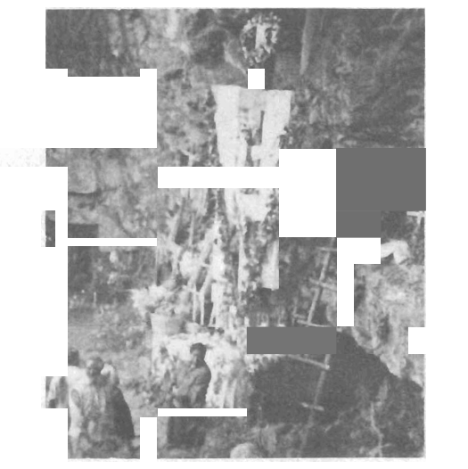
للوعي، لا يقل واقعية ودلالة عن الوعي الغربي المنشغل إلى هذا الحد بالظروف المادية، والبعيد إلى هذا الحد عن الروحانية.
وفي المقابل، تحافظ سلاسل خدام الطقس في ولاية موريلوس على صلة وثيقة بمراتب من الواقع روحية خالصة. ويميّز دون لوسيو نفسه بين عالمين: عالم الأشياء المرئية، وعالم الكائنات غير المرئية. وهذا الأخير، بحسب قوله، عالم عمل، لا كراهية فيه ولا تمييز ولا أحكام مسبقة. والجميع فيه يعملون في أعمال الخير. ولذلك، حين أُمر دون لوسيو بالعودة إلى جسده على الأرض، كان أول ما شعر به أنهم يرسلونه إلى الجحيم. وكان في الواقع على وشك الرفض، لكنه تذكّر مَن يطلب منه ذلك، راعي الرعاة، فوافق.
مراسم في إل كاليكا في أحد أيام الخامس من مايو.
ملاحظة تحريرية: العيوب المستطيلة ظاهرة في صورة المصدر المرفق، وأُبقيت دون استكمال تخميني.
تلقين دون لوسيو
المجلد الأول • صفحة ملف المصدر: 34 • الصفحة المطبوعة: 36
ما يأتي نقل شبه حرفي لرواية دون لوسيو عن دخوله طريق الشامانية، كما قصّها بنفسه على المؤلف خلال حديث جرى في حجرة المذابح في منزله.
وللحصول على رواية من هذا النوع لا بد من ثقة الشامان، وهذه لا تتحقق إلا بعدما يختبر الشامان صدق مقاصد من يسأله. وقد أذن لي دون لوسيو في هذه المرة بأن أنقل روايته أيضًا.
وجدت دون لوسيو يلعب مع حفيده الحديث الولادة عند طرف طاولة خشبية صغيرة، كان بقية أفراد أسرته يأكلون عندها. وكانت الضحكات تختلط بالأبخرة الرطبة المتصاعدة من حمّام التيماسكال، الذي أُعدّ على الأرجح للأم التي وضعت مولودها حديثًا. واستقبلوني كأنني فرد آخر من الأسرة، ودعوني إلى مشاركتهم. كنت قادمًا من تيبوستلان، وفجأة شعرت بأن قرية دون لوسيو أقرب بكثير إلى أن تكون بيتي الحقيقي.
كان حفيد دون لوسيو ينظر إليّ بهدوء واسترخاء، بينما كان جده، الذي يكاد يكون أصمّ، يقول لي إن الله قد باركه من جديد. وكنت أشعر بنار داخلية تكاد لا تُحتمل، وقد قررت زيارة دون لوسيو لطلب مشورته. وبدا أنه فهم حاجتي الملحّة، فدعاني إلى الغرفة المجاورة، حيث كانت طاولة مليئة بالتماثيل الصغيرة والشموع تقوم مقام مذبح، إلى جانب كرسيين خشبيين صغيرين.
جلسنا أحدنا قبالة الآخر، ولاحظ دون لوسيو أن شمعة نذره الحمراء قد سرّبت كل البارافين من شق في الوعاء الزجاجي الذي يحتويها. وقال لي مبتسمًا: «تصدّع من شدة الحرارة». وفهمت ذلك انعكاسًا للنار التي كانت تلتهمني.
نظر دون لوسيو في عينيّ، وشعرت بأنه
تلقين دون لوسيو، تتمة
المجلد الأول • صفحة ملف المصدر: 35 • الصفحة المطبوعة: 37
ينفذ إلى أعماقي. وقال بجدية: «على المرء أن يصون نفسه. في هذه الأيام الشر طليق ويحاول الدخول، لكن على الإنسان رفضه ليظل مرتفعًا. يجب ألا يسقطه شيء، وبعون الله يُصلح كل شيء».
أعجبتني كلماته؛ كانت انعكاسًا دقيقًا لما أشعر به، فشكرته عليها. وبعد لحظة من الصمت المركّز، تابع:
«مثلما حدث في اليوم الآخر. أرأيت كيف يظهر أثر «الآخَر» حتى في الطقس؟ إنه يحاول أن يحرمنا المحصول. رأيت في السماء سحابة سوداء كالدوّامة، ولاحظت أن غيومًا مثلها تأتي من الجهات الأربع، كلها تدور وتلتف. قلت لنفسي إن الأمر خطير جدًا، وإن معركة كبيرة تجري هناك في السماء. أخذت نوري ووضعته عن اليمين، وأشعلت فحمي عن اليسار، واستعددت للتبخير. جلست بينهما عند باب بيتي، مستعدًا لصدّ تلك الكائنات. وبدأ البَرَد يتساقط، وانظر يا ياكوبو، في لحظة ابيضّت الأرض. تشدّدت وأرسلتها إلى أعلى، فذهبت هناك، بسرعة مجيئها نفسها؛ كان يمكن رؤية تلك الملعونات متجهة نحو تيبوستلان وثيمبوالا».
لم أستطع إخفاء فرحي. كنت أضحك وأربّت على دون لوسيو من شدة السرور، وهو يفعل مثلي.
«الأمر نفسه مع الناس»، قلت فجأة، مندهشًا من كلماتي، «يحاولون الدخول إلى المرء مثل الغيوم، ومن الضروري أن يبقى منفصلًا عنهم».
«هكذا هو»، أجابني، وأراني يده اليسرى. «أترى هذه الأصابع؟ بها تعلمت توجيه الصاعقة».
أخذني التحول المفاجئ في موضوع الحديث على غرة. كان يتشكل في نفسي سؤال لم يجد الوقت ليصعد إلى سطح وعيي، لكنه ظهر بوضوح بعد ملاحظة دون لوسيو. مَن كانت الكائنات وراء الغيوم؟
تلقين دون لوسيو، تتمة
المجلد الأول • صفحة ملف المصدر: 36 • الصفحة المطبوعة: 38
طرحت السؤال على دون لوسيو، فنظر إليّ متعجبًا.
«ألم أخبرك؟»
«ربما، لكنني لم أعد أتذكر»، أجبت بخجل.
«يا للعجب يا ياكوبو… إذن اسمع. انظر، في أحد الأيام في الحقل، وُجدت عند الصباح شجرة قوية ذات جذع عريض جدًا مقتَلَعة من الأرض بجذورها، وملقاة على حقل قمح أحد أصحابي. ونادوني لأذهب فأراها وأشهد على ذلك. كانت الشجرة قد اقتُلعت من الأرض بيد قوية جدًا، وتُركت على مسافة من موضعها، سليمة، من دون علامة ضرر، كاملة بأغصانها. عرفت أن أهل الطقس فعلوا ذلك، فهم أقوياء جدًا ويعملون معًا. وكنت أنا أيضًا أقوم بتلك الأعمال حين كنت معهم».
«وكيف وصلت إليهم؟» سألته، راغبًا في سماع القصة مرة أخرى.
«حسنًا، ألم أحدّثك يا رجل؟»
وتابع بعزم: «انظر، ذات يوم أخذت ماشيتي لترعى في البرّ. كنت هناك نحو الثالثة عصرًا، حين التفت فجأة إلى السماء، فرأيت ما يشبه كرة، مكوّنة من فصوص بكل الألوان، تقترب مني بسرعة كبيرة. كانت الكرة تتلألأ، وكانت جميلة إلى حد أنني مددت ذراعيّ لأحاول الإمساك بها. وبينما أنا كذلك، اسودّ كل شيء فجأة. ونحو الخامسة والنصف أفقت على الأرض، لا أعرف ما حدث. ركضت لأتفقد أبقاري، وحين لمست رأسي وجدته رطبًا ومن دون قبعة. استغربت ذلك وعدت أبحث عن قبعتي. ورأيت أن العشب في الموضع الذي كنت فيه قد انبسط، وفجأة تذكرت ما حدث. أصابني خوف قاتل لأنني فهمت أن الصاعقة سقطت عليّ. ركضت نحو ماشيتي، والتقيت صديقًا. قلت له إنني أريد الاحتماء في بيتي خوفًا من أن تجدني الصاعقة مرة أخرى. فضحك مني صديقي وقال إن ذلك يمكن أن يحدث حتى في البيت».
تلقين دون لوسيو، تتمة
المجلد الأول • صفحة ملف المصدر: 37 • الصفحة المطبوعة: 39
«فهمت أنه محق، ورضيت بالأمر. ففي النهاية، الأمر واحد في كل مكان! جلست على صخرة أتأمل الريف. كانت الشمس جميلة جدًا، وكنت أشعر بأنني بخير، لكنني كنت جائعًا جوعًا لعينًا. لم أشعر قط بمثل ذلك الجوع. نهضت ووصلت إلى بيتي. كانت زوجتي حاملًا بطفلي الأول، ولم أشأ أن أخبرها شيئًا حتى لا أخيفها. طلبت منها أن تساعدني على خلع معطفي، فاقتربت وشمّت رائحة احتراق. فسألتني: من أين تأتي هذه الرائحة الآن؟ لم أقل لها شيئًا. أكلت بنهم شديد، لكن تلك كانت آخر مرة فعلت فيها ذلك. فمنذ ذلك اليوم لم أعد أرغب في الأكل، وبعد خمسة عشر يومًا أصبحت جلدًا على عظم. مرضت مرض الموت يا ياكوبو، وكانوا يضطرون إلى حملي من مكان إلى آخر، لأنني لم أكن أستطيع حتى المشي. كنت أطلب منهم أن يتركوني أموت في فراشي وألا يطوفوا بي، لأن ذلك لم يكن سوى مصدر خجل لي. أخذوني إلى أطباء ومراكز علاج، ولم يعرف أحد ما الذي أصابني. وهكذا قضيت ثلاث سنوات من حياتي. كان جسدي على شفا الموت، لكن روحي انفصلت وكانت مع أهل الطقس… عرفت أشياء كثيرة يا ياكوبو، وجبت القطعان بكل ألوانها ورعاتها».
قاطعته: «اسمع يا دون لوسيو، من أين تأتي كائنات القطعان؟»
تغيّر تعبير وجهه. حدّق في عينيّ كأنه يسألني إن كنت جادًا، ثم ربّت على ظهري ضاحكًا.
وقال ضاحكًا: «كيف تسأل من أين تأتي كائنات القطعان؟ ما الذي جرى يا ياكوبو، ما الذي جرى! أين عقلك؟ إنهم نحن… نعم يا رجل، نحن القطعان. أحقًا لا تعرف؟ يا للعجب!»
شعرت بالحرج، وإن ظل السؤال في داخلي. نظرت إلى دون لوسيو مستفهمًا، وبدا أنه خمّن شكي. تنحنح وتابع قائلًا:
تلقين دون لوسيو، تتمة
المجلد الأول • صفحة ملف المصدر: 38 • الصفحة المطبوعة: 40
«الألوان متعددة: أبيض، أصفر، ثم ذهبي وأسود. لنرَ يا ياكوبو، من أين تأتي الألوان؟»
«حسنًا… لا أعرف يا دون لوسيو».
«تبًا، أين هذا العقل يا رجل! انظر، البيض نحن المكسيكيين؛ والشقر هم الأمريكيون؛ والذهبيون هم الألمان».
«كنت أظن أن السود هم الأمريكيون، يا دون لوسيو».
«لا يا رجل، ما الذي جرى، ما الذي جرى! نحن جميعًا متساوون، ونحن أشدّ مساواة هناك، بين أهل الطقس. هناك يعمل الجميع فعلًا على قدم المساواة، وإن ظلت الألوان موجودة».
«وفي أي شيء يعملون؟» سألت بفضول، شاعرًا بأنني طفل صغير أمام شيخ عظيم حكيم.
«هذا جميل حقًا»، قال دون لوسيو مبتسمًا. «هناك أعمال كثيرة. ألم أخبرك؟
«في السنة الأولى كنت أعمل في الطقس. كنت أمشي مع القطعان من جانب إلى آخر. وهناك يقطع المرء في دقيقة واحدة المسافة من المكسيك إلى الولايات المتحدة. كنا نراقب الغيوم والبروق، ونطوف حول العالم نراقب العواصف ونغيّر مساراتها. انظر، أترى هذه اليد؟ كانت تخرج من الأصابع أضواء لتحريك الصواعق.
«وفي السنة الثانية كنت أعمل الأرض. تعلمت التعرّف إلى البذور والزراعة والحصاد. واليوم أعرف كيف أعتني بالذرة والقمح والفاصولياء والفول وكل ما يمكن زرعه.
«وفي السنة الثالثة تعرّفت إلى جميع القطعان ورعاتها. وكما قلت لك، فالقطعان بكل الألوان، وأولها الأبيض، وهذا نحن المكسيكيين».
كنت قد حضرت اجتماعًا في تيبوستلان، دافع فيه عالم آثار، هو ألكسندر فون فوتيناو، عن أطروحة تقول إن المكسيك زارها
ملاحظة تحريرية مضافة في التدقيق: تصف رواية المؤلف في صفحة ملف المصدر 30 السنة الثانية بأنها لتعلّم الأعشاب والعلاج، بينما يصفها دون لوسيو هنا بأنها للعمل في الأرض والبذور والزراعة. أُبقي الاختلاف دون تسوية.
تلقين دون لوسيو، تتمة
المجلد الأول • صفحة ملف المصدر: 39 • الصفحة المطبوعة: 41
رجال من جميع الحضارات قبل كولومبوس بزمن طويل. وسألته إن كان ذلك يعني أن المكسيكي المعاصر نتاج امتزاج جميع تلك الأعراق، فأجاب بنعم. والضوء الأبيض مزيج جميع الأضواء، وكان ذلك يتوافق مع ما يقوله دون لوسيو. فأخبرته، وأجابني قائلًا إن المركز موجود في المكسيك.
«هكذا هو يا ياكوبو؛ المكسيك هي المركز، ولذلك كانوا يزوروننا كثيرًا. نحن لدينا ذلك النور».
كنت قد عدت للتو من الهند ونيبال، وكانت ملاحظة دون لوسيو تعكس رأيي نفسه. فقد بدا أن المكسيكي يملك اتصالًا بمركز الوعي ذاته، ولا سيما المكسيكي الريفي.
وقال دون لوسيو بيقين: «ولهذا السبب نفسه كنا لا نحتمل الأجانب من قبل. كنا نشعر بأنهم بعيدون وغرباء عن ذلك المركز، وكان ذلك صعبًا علينا جدًا».
وأضفت: «لأن ذلك المركز أعظم كنز. فمن هناك يمكن الشعور باللامتناهي. إنه جديد في كل لحظة، وفي الوقت نفسه هو ذاته. ومن هناك يمكن العلاج، ويكتسب كل شيء معنى».
«هكذا هو»، قال دون لوسيو، مربّتًا على ظهري. «أرى أنك تفهمني، ولذلك تعال يومًا عند الفجر، على معدة فارغة، لتشهد ألوان القطعان. من المهم جدًا معرفة ذلك، مهم للغاية».
وبالطبع أغرتني الدعوة، وقلت له إنني سآتي يوم سبت لأشهد.
ذكّرت دون لوسيو بأنه كان يروي لي لقاءه بجميع القطعان. فتنحنح وتابع روايته.
«كنت أمشي بينها، وهكذا وصلت ذات يوم إلى وادٍ كبير جدًا، تجمعت فيه جميع القطعان ورعاتها. كانت الجبال مليئة بهم، وكان كل شيء جميلًا جدًا. وفي وسط الوادي
تلقين دون لوسيو، تتمة
المجلد الأول • صفحة ملف المصدر: 40 • الصفحة المطبوعة: 42
كان راعي جميع الرعاة جالسًا على صخرة، وله لحية بيضاء طويلة جدًا، وعصا فوق ركبتيه. كنت عند طرف الوادي، وحين شعرت القطعان بي فتحت طريقًا. مشيت بينها، وأخذت أقترب شيئًا فشيئًا من الراعي الأكبر. وحين وصلت إليه نظر إليّ ورفع عصاه. رحّب بي وقال إن وجودي هناك كان بفضل مشيئة الله. وسألني إن كنت أرغب في متابعة السير إلى نهاية الطريق، وحين قلت نعم أشار إلى درب، وأمرني بأن أعود إليه بعد قطعه. فواصلت المشي حتى بلغت جبلًا يسد الطريق. وكان جبلان آخران على الجانبين يحيطان بوادٍ صغير. وعن اليسار كان صليب عليه المسيح ينظر إليّ. كان يسوع هناك، من دون مسامير، بمحض إرادته. وعن اليمين كانت ثلاثة صناديق كبيرة وحارس. اقتربت من الأول، فسألني حارسه إن كنت أرغب في رؤية ما بداخله. قلت نعم، ففتحه. وكان هناك ماء بلوري يتحرك بهدوء. وتناثرت عليّ قطرات منه، وسقطت إحداها على جبهتي. فهمت أنه سائل الخير.
«وكان الصندوق الثاني يحتوي سائلًا رماديًا عكرًا، يدور أيضًا ويتحرك في دوّامات».
«وهل تناثر عليك ذلك الماء أيضًا؟»
«نعم أيضًا. ثم قالوا لي إنّ في الصندوق الثالث ما يُرعِب، وإنّ لي ألّا أنظر فيه إن شئت. لكنني أصررت على رؤيته، ففتحوا الغطاء. فدفعته دوّامة رهيبة إلى الهواء، واستطعت رؤية الداخل. كانت حيوانات مرعبة تعيش فيه. وثعابين مخيفة تتقاطع مع الضفادع، وتخرج أفواهها السامة من سطح سائل شديد السواد، محاولة أن تعضّني.
«وبعد رؤية ذلك كله عدت إلى الراعي الأكبر. فرحّب بي من جديد، وقال إن كل شيء قد أُريني لأن تلك كانت مشيئته.
«وتابع: والآن، مشيئتي أن تعود إلى موضع أصلك، وهناك تستقبل جميع هذه
تلقين دون لوسيو، تتمة
المجلد الأول • صفحة ملف المصدر: 41 • الصفحة المطبوعة: 43
القطعان، وترشدها نحو النور وتزيل ما يعوقها. شعرت بأنني أموت. فبعد ثلاث سنوات في النعيم، كانوا يعيدونني إلى جحيم الأرض. وعلى الرغم من ضيقي، قبلت مهمتي، لكنني طلبت من الراعي أن يرافقني حضوره في عملي. فأجابني: ليس ذلك فحسب، بل ستحظى أيضًا بمساعدة العالم الروحي.
«عدت إذن إلى هذا العالم، وقلت لزوجتي ذات عصر أن تضع السرج على أتان صغيرة. ففعلت، وركبتها وذهبت إلى الريف. وجدت مرجًا إلى جانب شجرة فاضطجعت فيه. ونهضت بعد ساعات وعدت إلى بيتي. استقبلتني زوجتي، وبدأت أتعافى شيئًا فشيئًا بنفسي، بمساعدة الريف.
«وأذن لي الراعي الأكبر أيضًا بأن أتقاضى أجرًا على علاجاتي، وأن أخصص وقتًا لزراعة الأرض حتى أعيل أهلي.
«وذات يوم جاء رجل كنت قد ساعدته. وعرض عليّ وظيفة في مؤسسة الضمان الاجتماعي بمدينة مكسيكو، لأمارس عملي. فقلت له لا؛ نظرت فقط في عينيه وقلت له: ما الذي جرى؟ إنني لا أريد أن أصبح مثل أحدهم، بل أن أبقى مسؤولًا عن عملي. فألحّ عليّ وقال إن له نفوذًا كبيرًا، وإن المسألة لا تتعدى توقيع بعض الأوراق، وهذا يكفي لضمان معيشتي مدى الحياة. فقلت له من جديد: ما الذي جرى؟ ورفضت مرة أخرى. فغضب وقال إنني لا أقبل حتى ما يُعطى مجانًا. لكنني أدرك أن مكاني هنا، وهنا أستقبل أناس القطعان. وأحيانًا يأتي كهنة، فأسألهم عن قطعانهم ولا يفهمون عما أتحدث. فبالله عليكم، إن لم يفهموا هم، فمَن يفهم؟
«وهناك كاهن يأتي دائمًا ليطلب بركتي. وهذا أمر عجيب حقًا! أنا أمنح كاهنًا البركة! وحين أسأله عن السبب يقول إن أموره تسير جيدًا دائمًا حين أباركه.
تلقين دون لوسيو، تتمة
المجلد الأول • صفحة ملف المصدر: 42 • الصفحة المطبوعة: 44
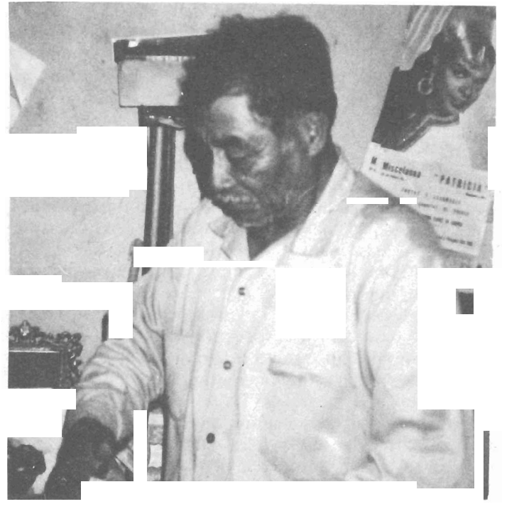
«والآن أعتني بالحقول، وأبعد الكائنات الشريرة التي تريد القضاء على المحاصيل. وأقول للفلاحين أن يذهبوا ليباركوا صواريخهم النارية، وأن يطلقوها لتنفجر في الهواء كلما جاءت سحابة سيئة. وهم يفعلون ذلك، ويسير كل شيء على ما يرام.
«وأنت يا ياكوبو، تعال لتشهد حين تشاء. أنا في انتظارك هنا».
دون لوسيو يستعد لإجراء طقس طرد.
ملاحظة تحريرية: العيوب المستطيلة ظاهرة في صورة المصدر المرفق، وأُبقيت دون استكمال تخميني.
الارتباطات النفسية الفسيولوجية
المجلد الأول • صفحة ملف المصدر: 43 • الصفحة المطبوعة: 45
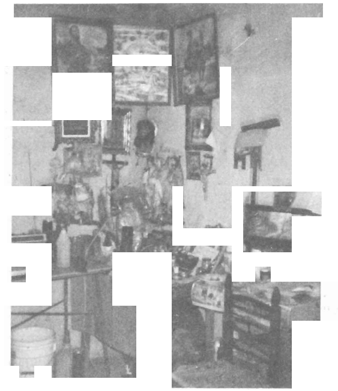
لا أرى نفسي أهلًا لأن أحكم إلى أيّ واقع تنتمي التجارب التي عاشها دون لوسيو في السنوات الثلاث التي تهيّأ فيها ليصبح شامانًا. أما ما أستطيع فعله فهو إقامة موازاة بينها وبين تنظيم الدماغ. وأرى هذه الموازاة قائمة فعلًا، وتحليلها أمر يُثير فضولي.
ركن المذابح لدى دون لوسيو.
ملاحظة تحريرية: العيوب المستطيلة ظاهرة في صورة المصدر المرفق، وأُبقيت دون استكمال تخميني.
الارتباطات النفسية الفسيولوجية، تتمة
المجلد الأول • صفحة ملف المصدر: 44 • الصفحة المطبوعة: 46
ومعنى ذلك أن التجربة التي عاشها دون لوسيو تنعكس في تنظيم الدماغ البشري وعمله، وهي بدورها تعكسهما. ومن الواضح أن هذه الموازاة ليست مقصورة على الدماغ، لمجرد أن تنظيمه انعكاس لمراتب ومستويات أخرى في الطبيعة. وفي الواقع، فإن الكيفية التي تُنظَّم بها المعلومات في المكان هي نفسها التي تنعكس في التنظيم الدماغي.
ويعني ما سبق أن نمط خبرات دون لوسيو متماثل البنية مع الدماغ والمكان ومراتب أخرى من الطبيعة. ولإجراء هذا التحليل، سأستعرض من جديد بعض خبرات دون لوسيو الأساسية، وأصف ارتباطاتها النفسية الفسيولوجية.
أولًا، مفهوم القطيع والراعي. يصف دون لوسيو وجود قطعان من جميع الألوان يقودها رعاة مرشدون.
وفي ما يتعلق بالنظير الدماغي للقطعان ورعاتها، من المعروف أن القشرة المخية أكثر بنى الدماغ تطورًا، وأنها مؤلفة من وحدات وظيفية تتكرر في طول بنيتها الثلاثية الأبعاد وعرضها.
وهذه الوحدات دوائر معقدة تصل الطبقات القشرية بعضها ببعض، عبر ألياف وعصبونات بينية (Thatcher, 1984) .
ويخضع ترميز المعلومات التي تسري عبر الوحدات القشرية لعمليات دمج معقدة. وفيها تُختزل أنماط النشاط إلى خوارزميات عصبية¹، عبر تنشيط دوائر الاشتمال بالتقارب (Grinberg-Zylberbaum, 1976) . ومن أمثلة هذه المعالجة الاشتمالية تنشيط خلية قشرية معقدة
[حاشية المؤلف 1] الخوارزمية نمط أو نموذج أو صيغة رياضية تتضمن معلومات مركّزة يمكن فك ترميزها لإعادة بناء الأصل الذي استُخرجت منه الخوارزمية.
الارتباطات النفسية الفسيولوجية، تتمة
المجلد الأول • صفحة ملف المصدر: 45 • الصفحة المطبوعة: 47
نتيجة تقارب معلومات آتية من خلايا بسيطة في القشرة نفسها. ومن الأمثلة الأخرى تنشيط خلايا متعددة الحواس في القشرة الجدارية الصدغية، نتيجة وصول دفعات عصبية آتية من مصادر كثيرة. وما ألمّح إليه بهذا الوصف هو أننا قد نرى في النمط الخوارزمي الذي يجمع قدرًا كبيرًا من المعلومات المتقاربة نموذجًا عصبيًا للراعي. أمّا «قطيعه»، في هذا التشبيه، فهو مجموع الوحدات الوظيفية التي تمدّ ذلك النمط بالمعلومات.
ولمفهوم راعي الرعاة أيضًا نظير دماغي، لكن فهمه يحتاج إلى بعض الاعتبارات التمهيدية.
إذا كان راعي الرعاة هو الذي يدمج جميع القطعان، فلا بد أن تكون وظيفته توحيد القطعان المتمايزة بدرجات متفاوتة وتنسيقها.
وفي حالة الدماغ، يُعدّ التماسك² مقياسًا لدرجة التمايز الوظيفي، ارتفاعًا أو انخفاضًا، بين المناطق القشرية المختلفة. وحين يُسجَّل تماسك مرتفع بين منطقتين من القشرة، فإن ذلك يعني وجود تكرار مرتفع في معالجة المعلومات لدى الوحدات المعنية، وتدفّق مرتفع للمعلومات بينها. وعلى العكس، يعني التماسك المنخفض مستوى مرتفعًا من التمايز في المعلومات التي تعالجها العصبونات. وتحدد التدفقات الطاقية الخاصة بين الوحدات الواقعة في مناطق قشرية مختلفة، لا أنماطًا خوارزمية مختلفة توحّد نشاطها فحسب، بل صفات حسية مختلفة مرتبطة بها أيضًا. وقد تكون الألوان المتمايزة للقطعان مرتبطة بهذه الخصائص الكلية.
[حاشية المؤلف 2] التماسك مقياس للتشابه.
الارتباطات النفسية الفسيولوجية، تتمة
المجلد الأول • صفحة ملف المصدر: 46 • الصفحة المطبوعة: 48
ومن جهة أخرى، أظهرت دراسات التماسك (Thatcher, 1984) أن القشرة القذالية هي الأقل تماسكًا، وأن القشرة الجبهية هي الأعلى. ويمكن تصور التماسك المرتفع للفص الجبهي وصلاته ببقية القشرة، عبر ألياف محورية طويلة، كما لو أن هذا القطب الأحدث تطورًا في الدماغ يعمل منسقًا عامًا لحالة التمايز أو التماسك في بقية الدماغ. ولا بد أن وضعًا مشابهًا يرتبط بوظيفة البنى ذات التقارب المعلوماتي المرتفع، مثل القشرة الجدارية الصدغية أو بعض البنى تحت القشرية، كالنواة المذنّبة (Grinberg-Zylberbaum, 1975) . ويُفسّر التقارب المرتفع وقوة التوحيد في القشرة الجدارية الصدغية عملها بوصفها منطقة لإسناد المعنى إلى المنبهات المحايدة (Grinberg-Zylberbaum y John, 1981) ، ويمكن تصورها نموذجًا عصبيًا لراعي الرعاة في التلقين الشاماني لدون لوسيو.
ويمكن افتراض أن ازدياد التماسك على مستوى الدماغ كله يوحِّد نشاطه، وأن خبرة الشخص الداخلية تزداد توحّدًا بدورها. وفي دراسة انتهت حديثًا، وُجد أن التماسك المرتفع داخل نصفي الكرة المخية وبينهما يترافق مع حالة داخلية من التوحّد والتوازن والاتصال بالأنا. وفي المقابل، حين انخفض التماسك، كان الشعور المصاحب افتقاد التوحّد وغياب الاتصال بالأنا (Grinberg-Zylberbaum, 1984) .
ويحدث الوصول إلى الأنا عادة بعد أن يمر الشخص، في سياق نموه الطبيعي، بسلسلة من الخبرات ويدمجها، فيجد ما هو مشترك بينها جميعًا، أي كونها خبرات تندرج داخل الشخص نفسه أو الوعي نفسه.
وبالمصطلحات النفسية الفسيولوجية، تظهر الأنا حين تكون
الارتباطات النفسية الفسيولوجية، تتمة
المجلد الأول • صفحة ملف المصدر: 47 • الصفحة المطبوعة: 49
عملية التشكيل الخوارزمي العصبي³ وإسناد المعاني قد بلغت مستوى لا يعود فيه إدخال بيانات جديدة مغيرًا لبنية الخوارزمية «النهائية». ومن الناحية التشريحية، لا بد أن يعني ذلك تطور دوائر الترميز بالتقارب وتنشيطها، و«ترسيبًا» لأنماط عصبية معقدة، إلى أن تتحقق معالجة خوارزمية شاملة للنشاط الدماغي. وقد سبق لي وصف هذه العملية بتفصيل أكبر (Grinberg-Zylberbaum, 1981) ، ولذلك لن أضيف هنا إلا أنها لا بد أن تنطوي على تعلّم التحكم بالتماسك الكلي للدماغ. ومن الناحية المثالية، يبلغ الشخص تطورًا أمثل حين يستطيع أن يعيش خبراته المتنوّعة بكلّ ما بينها من فروق، وأن يظلّ إحساسه بوحدة ذاته ثابتًا خلالها. وبعبارة أخرى، حين يكون ذاته في كل موقف وأمام مختلف الخبرات.
ويبدو أن دون لوسيو أعاد إنتاج هذه العملية خلال تلقينه، منذ لقائه بكل قطيع ورعاته إلى معرفته براعي الرعاة، أو المدمِج المركزي لجميع القطعان. وتوحي رؤيته لوادٍ ممتلئ بجميع القطعان والراعي الأكبر جالس في المركز، برؤية كلية لجميع الوحدات الوظيفية في القشرة، والقطب الجبهي ينسّق نشاط المجموعة كلها.
وتوحي هذه الرؤية بأن رحلة دون لوسيو كانت مسارًا عبر بُناه الخاصة ولقاءً مع نفسه. وفي هذا السياق، فإن التحويل الذي أحدثه وعي دون لوسيو، بإدراك الوحدات القشرية بوصفها قطعانًا، وأنماطها الخوارزمية بوصفها رعاة، وتنشيط بنية دماغية متعددة الحواس وذات تقارب أقصى
[حاشية المؤلف 3] يشير التشكيل الخوارزمي العصبي إلى العملية التي ينشّط الدماغ بواسطتها أنماطًا عالية التركيز المعلوماتي.
الارتباطات النفسية الفسيولوجية، تتمة
المجلد الأول • صفحة ملف المصدر: 48 • الصفحة المطبوعة: 50
بوصفه راعي الرعاة، هو نتاج التربية الريفية لدون لوسيو، ومفهومه للواقع المرتبط ببيئته. ويبدو أن الصاعقة التي أصابته غيّرت عمله الداخلي كله، وجعلت وعيه يستطيع النفاذ إلى مناطق من ذاته تظل عادة محجوبة ومتعذرة الوصول. ومع ذلك، يجب أخذ إصرار دون لوسيو على الطابع الخارجي لرحلته في الحسبان، وكذلك قدرته على التحكم بالعواصف.
وفي هذا الصدد، توجد نظرية، هي النظرية السينترجية، تفترض أن الدماغ قادر على خلق مجال طاقي، هو المجال العصبي، يشع من بنية الدماغ ويغادرها ويمتد إلى الحيز خارج الجمجمة. وهنا يتفاعل مع المصفوفة الطاقية للزمكان، مولدًا نمط تداخل⁴ بالغ التعقيد، يشكّل البنية الطاقية للخبرة. ووفقًا للنظرية السينترجية (Grinberg-Zylberbaum, 1981) ، يفك المراقب أو الكينونة ترميز نمط التداخل ويحوّله إلى خبرة واعية، بوساطة عامل الاتجاهية. ويتفاعل هذا الأخير مع أجزاء محدودة من نمط التداخل ويحوّلها إلى خبرات محددة. ولأنه لا يوجد حد نظري لامتداد المجال العصبي في المكان، وبالتالي لأن نمط التداخل ينفذ إلى داخل البنية العضوية للدماغ وخارجها، فقد يكون عامل الاتجاهية قادرًا على تحويل أي جزء من نمط التداخل إلى خبرة واعية، سواء داخل الدماغ أو خارجه.
ومن وجهة النظر هذه، ربما كان دون لوسيو
[حاشية المؤلف 4] يظهر نمط التداخل حين تتقاطع موجتان، أيًا كان شكلهما، أو تتفاعلان.
الارتباطات النفسية الفسيولوجية، خاتمة الفصل الأول
المجلد الأول • صفحة ملف المصدر: 49 • الصفحة المطبوعة: 51
قادرًا على فك ترميز مناطق خارج الجمجمة من نمط تداخله، وبذلك يختبر مستويات من الواقع يجهلها بقية الناس منا.
ويتفق وصفه للازمنية أثناء رحلاته، ولقدرته على الانتقال من موضع جغرافي إلى آخر من دون فواصل زمنية ملحوظة، مع ما سبق؛ لأن إحدى خصائص عامل الاتجاهية تحديدًا هي إمكان تركيزه على مناطق مختلفة من الزمكان، من دون فواصل زمنية ملحوظة بين موضع وآخر. وبهذا المعنى، تسلك الخبرة الواعية سلوكًا كموميًا (Grinberg-Zylberbaum, 1984) .
ووفقًا للنظرية السينترجية (Grinberg-Zylberbaum, 1981) ، حين يستطيع عامل الاتجاهية أن يركز على المراقب، تكون الخبرة الناتجة خبرة الأنا أو الذات (Self) . وبالترافق مع هذه الخبرة، يمكن إثبات وجود زيادة ملحوظة في التماسك بين نصفي الكرة المخية (Grinberg-Zylberbaum, 1984) . ومن المرجح أن هذا ما حدث حين استطاع دون لوسيو رؤية جميع القطعان مجتمعة، وراعي الرعاة في مركزها.
وأخيرًا، قد يرتبط التحكم الذي يقول الغرانيسيروس إنهم يمارسونه على الغيوم والصواعق والعواصف، بتحكم بارع في عامل الاتجاهية وتفاعل المجالات الطاقية في بنية المكان.
صفحة بيضاء
المجلد الأول • صفحة ملف المصدر: 50 • الصفحة المطبوعة: غير مرقمة
ملاحظة تحريرية: هذه الصفحة بيضاء في المصدر المرفق.
الفصل الثاني
المجلد الأول • صفحة ملف المصدر: 51 • الصفحة المطبوعة: 53
دونيا باتشيتا من مدينة مكسيكو
دونيا باتشيتا
المجلد الأول • صفحة ملف المصدر: 52 • الصفحة المطبوعة: 54
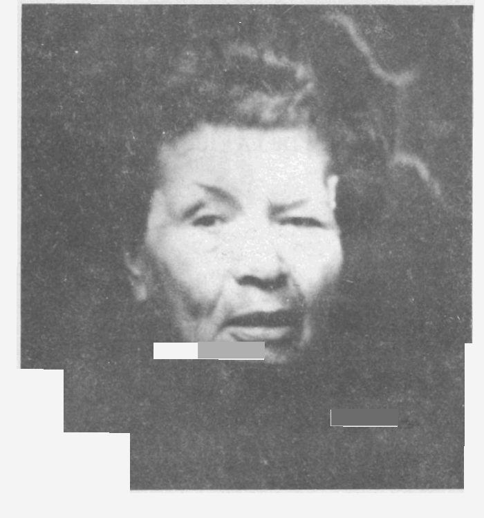
دونيا باتشيتا من مدينة مكسيكو وبارّال.
ملاحظة تحريرية: العيوب المستطيلة ظاهرة في صورة المصدر المرفق، وأُبقيت دون استكمال تخميني.
دونيا باتشيتا من مدينة مكسيكو
المجلد الأول • صفحة ملف المصدر: 53 • الصفحة المطبوعة: 55
حين نحرّك ذراعًا أو ننطق كلمة، لا نحتاج إلى الوعي بالأنماط العصبية التي يلزم تنشيطها لتنفيذ الحركة أو التلفظ. إننا نرغب في الفعل فحسب، فيظهر. وبين الرغبة وإشباعها توجد مستويات آلية من الترميز. وبعبارة أخرى، تبدأ مجموعة من الدوائر المرتبة مسبقًا في العمل، ويتوقف صدور الفعل الصحيح والدقيق على نشاطها الآلي.
وبوجه عام، يكون جسمنا المادي الأداة الوحيدة التي تستطيع نفسنا التحكم فيها، ضمن تفاعل بين العقل والمادة مباشر نسبيًا وبأقل زمن كمون.
غير أن بعض شاماناتنا تعلّموا توسيع التفاعل المذكور ليشمل أهدافًا خارج أجسامهم المادية. ومع أن الأدلة على ما سبق لا تدع مجالًا للشك في صحته، فإن الآلية المعنية لا تزال لغزًا.
وقد أتيحت لي شخصيًا فرصة مشاهدة عمل إحدى أعظم شامانات بلدنا مباشرة، وهي دونيا باتشيتا من مدينة مكسيكو، والتحقق ليس من قدرتها على التأثير فحسب
باتشيتا: اللقاء الأول — تتمة
المجلد الأول • صفحة ملف المصدر: 54 • الصفحة المطبوعة: 56
في المادة بعقلها، بل أيضًا من استخدامها هذه القدرة لإجراء عمليات جراحية إعجازية.
كان اسم باتشيتا عند ولادتها باربارا غيرّيرو. تعرّفت إليها حين كانت على وشك إتمام الثمانين من عمرها، لكنها كانت لا تزال تُظهر قوة وقدرة تُحسد عليهما. التقيتها في اجتماع دُعيت إليه في مقر لازارو كارديناس في لوس بينوس. وقبل ذلك بأسبوع، قُدّمت إليّ مارغاريتا لوبيز بورتيو، وبعد حديث عن حالة الوعي في المكسيك دعتني إلى ذلك الاجتماع.
كانت القاعة التي اجتمعنا فيها واسعة ومشمسة ومملوءة بأقفاص هائلة تضم طيورًا جُلبت من جميع مناطق البلاد، وكانت هادئة وفي صمت نسبي. وفجأة، وفي وقت واحد، بدأت الطيور كلها تزقزق، وأصمّنا مجموع أصواتها، فالتفتنا في جميع الاتجاهات نحاول العثور على سبب هذا الحدث الصاخب.
وكانت تدخل من باب القاعة امرأة ممتلئة قصيرة القامة، ذات مشية ظريفة مرحة. لم يكن ثمة أدنى شك في أن تغريد الطيور مرتبط بتلك المرأة التي كانت تقترب منا مبتسمة، في لباس متواضع وسترة قديمة. كانت باتشيتا، وكانت طيور المكسيك قد رحّبت بها.
كنت مبهوتًا بما حدث، ولم أستطع أن أصرف نظري عن تلك المرأة التي بدت لي، شيئًا فشيئًا، أجمل وأعمق.
جلست باتشيتا على كرسي أمام مارغاريتا، وخاطبتها من دون مقدمات:
— لماذا كل هذه الضرائب يا مارغاريتا؟ ألا ترين أن الشعب يموت جوعًا؟
لاحظت أن تعبير مارغاريتا تغيّر، وأنها تنظر، مثلي، إلى كُمّ سترة باتشيتا المهترئ. (وعرفت فيما بعد أن باتشيتا ارتدت،
اللقاء الأول؛ السلالة — تتمة
المجلد الأول • صفحة ملف المصدر: 55 • الصفحة المطبوعة: 57
عن قصد، أقدم ثيابها.) فأجابتها لوبيز بورتيو همسًا:
— أقسم لك أنني لا علاقة لي بالضرائب، لكنني أعدك بأن أنقل ذلك إلى أخي.
ثم قُدّمت لنا القهوة. اقترب من باتشيتا خادم يرتدي معطفًا رسميًا ويحمل صينية، وقدّم إليها القهوة في فنجان من الخزف. فنظرت إلى الفنجان ساخرة، وقالت بصوت عالٍ، كأنها تتأكد من أن باستطاعتنا جميعًا سماعها:
— أمّا أنا، فهات لي القهوة المطبوخة في القِدر!
كانت الرسالة واضحة، وبدأت أعجب بباتشيتا وأرغب في معرفتها على نحو أفضل.
وكأنها سمعت أفكاري، اقتربت مني ودعتني إلى زيارتها في منزلها في الأسبوع التالي.
سبق أن وصفت في كتابين¹ ما رأيته في بيت باتشيتا في أول يوم زرتها فيه، وما واصلت مشاهدته خلال الأشهر التي حظيت فيها بامتياز العمل إلى جانبها.
وسأكتفي هنا بملخص وجيز لتجاربي.
السلالة
إن أصل سلالة باتشيتا مجهول تمامًا. وتوجد بعض الإشارات إلى أن العمل الذي كانت تقوم به هذه الشامانة الناهوالا كان يمارسه أيضًا بعض أمراء الأزتك، ومنهم كواوتيموك، آخر أباطرة الأزتك (وستأتي لاحقًا أسباب هذا الافتراض).
[حاشية المؤلف 1] باتشيتا (Pachita)، 1980؛ كواوتيموكتسين (Cuauhtemoctzin)، 1982. إدامكس، المكسيك.
السلالة؛ التاريخ الشخصي — تتمة
المجلد الأول • صفحة ملف المصدر: 56 • الصفحة المطبوعة: 58
وتوجد أدلة على أعمال شبيهة بما كانت باتشيتا تقوم به، منقوشة على أحجار إيكا التي اكتشفها الدكتور كابريرا في بيرو.² وهذا التأويل لنقوش أحجار إيكا قائم إلى حدّ بعيد على التخمين، لكنها توحي، في رأيي، بأن أصل القدرات التي كانت باتشيتا تُظهرها يعود إلى ماضٍ سحيق من تاريخ البشرية.
كانت باتشيتا تقول إن سلالتها تنتقل من جيل إلى جيل عبر القرابة المباشرة. وهكذا أكدت أن أحد أبنائها الذكور سيؤدي عملها بعد وفاتها، وأنه سيورثه بدوره إلى ابنة، وهكذا دواليك حتى تكتمل عشرة أجيال.
وإذا صحّ افتراض أن أصل قدرات هذه السلالة بعيد في الزمن، لوجب التشكيك في التصور القائل إننا نعيش اليوم حالة تفوق تقني على الماضي. وبعبارة أخرى، كان عمل باتشيتا، كما سنرى حالًا، استثنائيًا إلى هذا الحد من الناحية التقنية؛ وإذا كان أصله قديمًا، لوجب افتراض أن أسلافنا امتلكوا معارف نجهلها، على الرغم من التقدم التقني الظاهري الذي نعيش فيه.
التاريخ الشخصي
وُلدت باتشيتا في مدينة بارّال بولاية تشيواوا، في شمال الجمهورية المكسيكية، في يوم من شهر ديسمبر سنة 1900. تخلّى عنها والداها لأنها ابنة غير شرعية، وتبنّاها شخص غريب يُدعى تشارلز، من أصل أفريقي
[حاشية المؤلف 2] رسالة أحجار إيكا المنقوشة (El mensaje de las piedras grabadas de Ica)، خافيير كابريرا دارغير. دار إنتيسول، بيرو، 1976.
التاريخ الشخصي؛ أنماط عمل باتشيتا — تتمة
المجلد الأول • صفحة ملف المصدر: 57 • الصفحة المطبوعة: 59
وذو بشرة سوداء. ووفقًا لوصف قدمته باتشيتا نفسها إلى مؤلف هذه الدراسة، كرّس تشارلز نفسه لتعليمها مجموعة من إجراءات الشفاء، والتعامل مع الطاقة، والرؤى المتعلقة بالنجوم، والحصول على معلومات عرافية.
عاد تشارلز إلى بلده حين بلغت باتشيتا الخامسة عشرة، ومنذ ذلك الوقت عاشت باربارا غيرّيرو وحدها وبوسائلها الخاصة.
تروي باتشيتا أنها كانت تجهل قدراتها العلاجية، وأنها ذات مرة، حين حضرت عرض سيرك قرب المكان الذي كانت تعيش فيه في شمال البلاد، وجدت فيلًا صغيرًا مريضًا جدًا؛ فاقتربت من الحيوان وشفته. ومنذ تلك اللحظة بدأت مسيرتها معالجةً شعبية. غير أن تلك الحقبة، سنة 1915، لم تكن مناسبة للإظهار العلني لهذه القدرات العلاجية؛ وخشية أن يعدّها الناس ساحرة فيضطهدوها، أخفت باتشيتا قدراتها.
قاتلت إلى جانب فيّا أثناء الثورة؛ وكانت من النساء المقاتلات. ثم مارست أنشطة مختلفة: كانت راقصة، وعملت في بيع أوراق اليانصيب، والغناء في حافلات مدينة مكسيكو، التي وصلت إليها في تاريخ يجهله المؤلف.
وفي سن الرشد، كرّست نفسها علنًا للشفاء. واستقرت في مدينة مكسيكو وبدأت تستقبل المرضى.
أنماط عمل باتشيتا
يمكن تقسيم أنماط عمل هذه الشامانة الناهوالا إلى أربع فئات كبرى. أولًا، ما يمكن تسميته عمل التشخيص؛ وثانيًا، العمل الجراحي؛ وثالثًا، التعامل مع المكان والمادة والطاقة؛
أنماط العمل: التشخيص والجراحة — تتمة
المجلد الأول • صفحة ملف المصدر: 58 • الصفحة المطبوعة: 60
وأخيرًا، العمل التلقيني الروحي أو الصوفي. وسأحاول وصف كل نمط من هذه الأنماط في الأقسام التالية.
التشخيص
استخدمت باتشيتا إجراءات مختلفة، وأتقنت كلًّا منها إتقانًا لا يُجارى.
كان أحد أشكال التشخيص النظر إلى راحتي يدي المريض. ومن خلال فك دلالات أشكال خطوط الكفّين، ولونهما، وجوانب لم يمكن استيضاحها، كانت باتشيتا تشخّص أمراضًا محددة. وكانت تحدد مواضع الخُراجات أو الأورام أو القرح أو العدوى في أعضاء معينة.
ومن طرائقها الأخرى لمس مناطق من أجسام المرضى بيديها، والكشف، بآلية حسية مجهولة، عن أمراض وعدوى وأورام وما إلى ذلك في تلك المناطق وفي أعماق الجسم. ورأيتها في بعض الأحيان تستخدم بيضًا تفرك به جلد المرضى للحصول على معلومات عن العلل التي يعانونها.
وكانت باتشيتا تمتلك كذلك قدرة دقيقة على تشخيص بعض الأمراض بمجرد النظر إلى المريض. بل أتاحت لها هذه القدرات استشعار المرضى من بعيد، وتشخيص اضطراباتهم وعملياتهم المرضية بدقة.
النمط الجراحي
كان النشاط الرئيسي لباتشيتا هو إجراء تدخلات
النمط الجراحي — تتمة
المجلد الأول • صفحة ملف المصدر: 59 • الصفحة المطبوعة: 61
جراحية لمرضاها. وكانت العمليات تُجرى في حجرة صغيرة خافتة الإضاءة بعدة شموع نذرية، ومزينة بمذبح ذي سبع درجات، تظهر عليه صور وتماثيل لكواوتيموك، وعذراء غوادالوبي، وقديسين آخرين.
كانت العمليات تُجرى في إحدى زوايا الحجرة، على سرير خشبي صغير توضع عليه قطعة إسفنج مطاطي مغطاة ببلاستيك شفاف.
كان المرضى يُمدّدون على ذلك السرير المرتجل، وبعد كشف الجزء المصاب من الجسم، يبلّل أحد مساعدي باتشيتا قطعة قطن بالكحول ويفرك الجلد بالسائل. ثم تطلب باتشيتا أداتها، وهي سكين صيد يبلغ طولها نحو 15 سم؛ فتمسكها بيمينها، وتحدد موضع الشق، وتُدخلها وتفتح من دون مقدمات. وكان الشق كبيرًا عمومًا، مع ما يترتب عليه طبيعيًا من نزف. وكان المرضى يتأوهون ويُظهرون الألم عادةً، لكنه لم يكن يُقارن بما يمكن توقعه من دون استخدام مواد تخدير، وهو ما كان حاصلًا بالفعل. وبعبارة أخرى، لم يكن المرضى يُخدّرون، ولا تُعطى لهم مواد مُنوِّمة تتيح تفسير غياب الألم الداخلي حين تُحدث باتشيتا الشقوق بسكينها. ومع ذلك، كانت آلية غامضة تخفف الألم. وبعد الشق، تُدخَل السكين إلى داخل الجسم. وعقب حركة سريعة، يُستخرج ورم، أو تُقطع قطعة من عضو، أو يُوضع نسيج في موضعه فحسب.
أُتيحت لي فرصة متابعة عدد من المرضى الذين أجرت لهم باتشيتا عمليات لإزالة الأورام. وأذكر، مثلًا، حالة امرأتين أمريكيتين شُخّصت لهما في نيويورك
متابعة المرضى وزرع الأعضاء — تتمة
المجلد الأول • صفحة ملف المصدر: 60 • الصفحة المطبوعة: 62
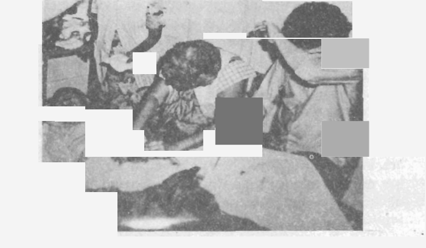
أورام قرب الرحم. وبعد العملية التي حضرتها، ذهبت المريضتان إلى منزلي للنقاهة. وأتاح لي ذلك التحقق من النتائج. وكان يُرى في موضع الشق أثر صغير يشبه خدشًا بالغ الصغر.
وبعد عامين، خلال رحلة إلى نيويورك، تمكنت من الحديث إلى هاتين المريضتين لدى باتشيتا، وأكدتا لي أن أورامهما اختفت بعد التدخل، وأنهما لم تعانيا أي متاعب أو آثار لاحقة.
كانت باتشيتا تجري عمليات زرع أعضاء. ففي الحالات التي يأتي فيها مريض باضطراب خطير في أحد أعضائه، كسرطان الرئة مثلًا، كانت باتشيتا تفتح بسكين الصيد
باتشيتا تُجري عملية.
ملاحظة تحريرية: العيوب المستطيلة ظاهرة في صورة المصدر المرفق، وأُبقيت دون استكمال تخميني.
زرع الأعضاء والنقاهة — تتمة
المجلد الأول • صفحة ملف المصدر: 61 • الصفحة المطبوعة: 63
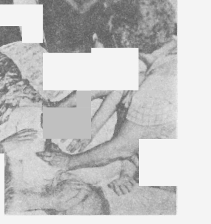
الجلد، وتقطع الأضلاع باستخدام منشار سباكة عادي، وتستخرج الرئة المصابة، ثم تجري عملية الزرع. وكان العضو المزروع يُمتص بطريقة غريبة من داخل الجسم؛ وبعد صدور صوت مميز، كأن بالونًا يُنفخ، ينغلق الشق ويُوضَع المريض في النقاهة. وبعد العمليات، كان المرضى يُضمَّدون في المنطقة المعالَجة، ويستريحون نصف ساعة في الحجرة نفسها، أو غرفة العمليات، التي جرى فيها التدخل. ووفقًا لباتشيتا، كانت فترة الراحة هذه تساعد على موازنة حقول طاقة الجسم كي يتعافى المريض؛ ثم يُساعَد على العودة إلى منزله، حيث يجب أن يبقى في راحة تامة مدة 72 ساعة.
باتشيتا تُجري عملية.
ملاحظة تحريرية: العيوب المستطيلة ظاهرة في صورة المصدر المرفق، وأُبقيت دون استكمال تخميني.
زرع الأعضاء والتجسيد المادي — تتمة
المجلد الأول • صفحة ملف المصدر: 62 • الصفحة المطبوعة: 64
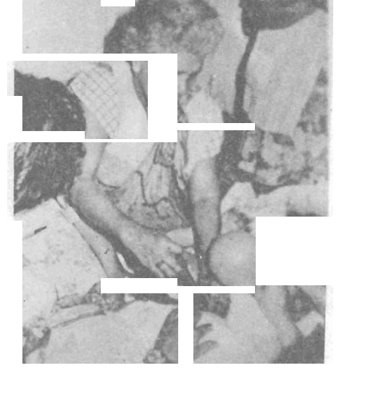
كانت عمليات الزرع متعددة. رأيت عشرات حالات زرع الرئة، وأربع حالات على الأقل لزرع الكلية، وتدخلات أخرى أصفها باستفاضة في كتابي عن باتشيتا (Grinberg-Zylberbaum, 1980) .
وفي بعض الأحيان، كان المرضى أنفسهم يوفّرون أعضاء الزرع، ويحصلون عليها من مشرحة. وفي أحيان أخرى، كانت باتشيتا هي التي تُظهر العضو المراد زرعه بواسطة تجسيد مادي.
وتنتمي عمليات التجسيد المادي هذه إلى النمط الثالث من عمل باتشيتا، أي التعامل مع الزمكان، الذي سأصف إجراءه فيما يلي.
باتشيتا تُجري عملية.
ملاحظة تحريرية: العيوب المستطيلة ظاهرة في صورة المصدر المرفق، وأُبقيت دون استكمال تخميني.
التعامل مع المكان والمادة
المجلد الأول • صفحة ملف المصدر: 63 • الصفحة المطبوعة: 65
في حالات العمليات الجراحية التي تتطلب زرعًا، حين لا يستطيع المرضى الحصول على العضو البديل، كانت باتشيتا تؤدي حركات غريبة بذراعيها ويديها في الهواء، يظهر بعدها عادةً نسيج يُستخدم في الزرع.
كانت باتشيتا تُجري تجسيدات مادية يوميًا، من دون أن تعيرها اهتمامًا كبيرًا. وكانت قادرة على تغيير مستويات مختلفة من تنظيم المكان، بحيث تُحدث في هذا المكان الشفاف تحولًا في بنيته الأساسية، ينشأ عنه شيء مادي. وقد أتيحت لي فرصة رؤية ذلك عشرات المرات. بل إنها أعطتني ذات يوم شيئًا جسّدته للتو: إطارًا معدنيًا صغيرًا نحاسي اللون، بيضاوي الشكل وذا زجاج، يحتوي لوحة زيتية متناهية الصغر لفنان مجهول يُدعى فلو.
وكان تعامل استثنائي أيضًا مع المكان والمادة يحدث أثناء العمليات. فاستخدام سكين الصيد، مثلًا، كان يكاد يكون رمزيًا. لم تكن السكين تُستخدم حقًا كمشرط، بل كان يبدو أن مجرد ملامسة رأسها للجلد يكفي لانفتاحه. وبالمثل، حين كانت الجروح تُغلق، لم تُستخدم إبرة أو خيط، بل تعامل مماثل مع المكان والمادة، يجعل الانفتاح، على نحو ما، يخضع لعملية انعكاس، وما كان قد انفتح ينغلق الآن من تلقاء نفسه.
وكانت جميع حالات التدخل الجراحي أو التشخيص أو تغيير بنية المكان مصحوبة بتصوف خاص، تُحيل فيه باتشيتا باستمرار إلى الله، وإلى الأب، وإلى مجموعة من الكيانات المألوفة لديها. وهذا يقودنا إلى النمط الرابع من عملها.
النمط التلقيني الروحي أو الصوفي
المجلد الأول • صفحة ملف المصدر: 64 • الصفحة المطبوعة: 66
كانت باتشيتا تؤكد أنها تجهل الآلية التي تؤدي بها عملها. بل كانت تؤكد أنها لا تعي ما يفعله جسدها أثناء التدخلات الجراحية أو أثناء التعامل مع المكان والمادة. وكانت تقول إن حاميها هو الذي ينفذ جميع هذه الأفعال، إذ يدخل جسدها ليتصرف في مادتها ويُجري التدخلات الإعجازية من دون حضور وعي باتشيتا المعتاد.
وعن هذا الوعي، كانت باتشيتا تقول إنها تشعر به كأنه موجود في حديقة من نوع ما، مستريحًا، بينما يتولى حاميها التحكم في جسدها وإجراء العمليات.
كان حامي باتشيتا هو كواوتيموك، آخر أباطرة الأزتك. وكان يظهر حين يبدأ العمل الجراحي، عندما تجلس باتشيتا على كرسي قبل الشروع في العمليات. فتغمض عينيها، وتتنفس بعمق، وبعد أن تؤدي سلسلة من الحركات الغريبة، تظهر فجأة شخصية بديلة تقدم نفسها باسم كواوتيموك. وقد حضرت مرات عدة هذه الغشية التي كانت باتشيتا تتحول فيها من شخصية إلى أخرى.
حين يظهر كواوتيموك، يتغير صوت باتشيتا، ويبدو جسدها أقوى، ويتحول طابع سلوكها من أنثوي إلى ذكوري، ويصبح حضورها ملوكيًا بأشد معاني الكلمة دقة، وكانت تحيّي عادةً من يشهدون منا هذا التحول قائلةً: «باسم الأب أحييكم».
كان كواوتيموك يروي أنه في عصره، وأثناء حكمه، كان أباطرة الأزتك أمثاله، فضلًا عن تعلّم إدارة الإمبراطورية سياسيًا، يتعلمون التعامل مع الطاقة في عمليات جراحية شبيهة بتلك التي وصفتها. وكان كواوتيموك
النمط الصوفي؛ مفهوم الواقع — تتمة
المجلد الأول • صفحة ملف المصدر: 65 • الصفحة المطبوعة: 67
يعدّ مهمته على الأرض قد انقطعت بسبب الغزو الإسباني، وأن باتشيتا تمنحه، بواسطة جسدها، فرصة إكمال عمله. وكان يسمي جسد باتشيتا «الغلاف المادي»، ويتحدث عنه كما لو كان لباسًا أو أداة يستخدمها مباشرةً لتنفيذ الإجراءات الجراحية وغيرها من أنماط العمل التي وُصفت.
وكان ظهور هذه الشخصية البديلة مصحوبًا دائمًا برسالة تلقين روحي أو رسالة صوفية، يُشار فيها إلى وجود قوى خارقة للطبيعة توجه تطور أحداث العالم. وكان كواوتيموك يروي أنه ومجموعة من المتعاونين من مستواه يقومون بأعمال لإعادة تشكيل الكوكب، وموازنة طاقته، وصرف التأثيرات السلبية، ومنع الأزمات في منطقة أو عدة مناطق من العالم.
وهذا الاعتبار الأخير يقودنا إلى التساؤل عن مفهوم الواقع لدى باتشيتا وسلالتها.
مفهوم الواقع لدى باتشيتا
كما رأينا آنفًا، كانت باتشيتا ترى أنه إلى جانب العالم اليومي الذي تشارك فيه، توجد وقائع بديلة تعيش فيها كائنات ذات قدرة أكبر من البشر على التأثير وتغيير الأحداث. وكانت تسمي هذه الكائنات حُماة، وتعلن أن لها حاميًا خاصًا، مؤكدةً أن معظم الكائنات التي تشاركها عملها تكتسب بدورها، بفعل ذلك، حاميًا أو مرشدًا روحيًا.
لا يمكن اختزال هذا التصور للواقع في مستوى واحد، بل ينبغي النظر إليه بوصفه عدة
مستويات الواقع — تتمة
المجلد الأول • صفحة ملف المصدر: 66 • الصفحة المطبوعة: 68
مستويات تشغلها كائنات مختلفة وتعيشها. وهكذا، ووفقًا لهذا التصور، كان كواوتيموك، باعتباره من سكان العالم الروحي، يعيش مع كائنات أخرى من الفئة الطاقية نفسها، يعمل معها وينفذ عمليات مختلفة، من بينها العمليات الجراحية، متخذًا جسد باتشيتا وسيطًا. وفي مستوى آخر من الواقع، كانت هذه الكائنات الروحية تخضع بدورها لقيادة كائنات من فئة أخرى أقرب إلى ما يسميه كواوتيموك الأب الأسمى أو الله.
وفي مناسبات كثيرة، أثناء العمليات الجراحية، حين كان كواوتيموك يشغل جسد باتشيتا، كان يودّع مساعديه ليذهب إلى استشارة الأب بشأن القرارات الواجب اتخاذها، أو الإجراءات الواجب تنفيذها مع مرضاه. وكان يقول حرفيًا إنه سيذهب ليسأل الأب، وإنه سيعود بعد تلقي التعليمات.
كان مفهوم الواقع لدى باتشيتا يتضمن ثلاثة مستويات على الأقل:
1. مستوى البشر العاديين.
2. مستوى الحُماة، مثل كواوتيموك نفسه.
3. مستوى الأب الأسمى، الذي يقود المستويين الآخرين.
وضمن هذا المفهوم للواقع، كانت باتشيتا تضمّ أيضًا وجود كائن آخر تسميه «الموت». وكان يظهر ويتجلى حين يُشخَّص أحد المرضى بأنه غير قابل للشفاء. وكثيرًا ما كان ظهور الموت بوصفه كائنًا محددًا مصحوبًا بأصوات أو كلمات تخرج من فم باتشيتا نفسها.
سمعت باتشيتا في بعض الأحيان تذكر اسم النبي إيليا مرشدًا لسلالتها، وفي أحيان أخرى سمعت حديثًا عن كائنات أسطورية أخرى بدا أنها وثيقة الصلة بسلالة باتشيتا.
وبموازاة مفهوم الواقع الذي وصفناه، كانت باتشيتا
تطوّر الوعي — تتمة
المجلد الأول • صفحة ملف المصدر: 67 • الصفحة المطبوعة: 69
تدافع عن مسار لتطور الوعي أصفه فيما يلي.
تطوّر الوعي
كانت باتشيتا ترى أن في العالم قوتين أو قدرتين أساسيتين على الأقل، تتواجهان أحيانًا في معارك مميتة ومروعة: النور والظلام. وكان النور، بالنسبة إليها، مرادفًا للحب والصلاة والشفاء والنيات الحسنة والعمل السليم. أما الظلام فكان الموت والانحطاط والخداع والأعمال القذرة والأعمال الشيطانية والسحر.
كانت باتشيتا تتحدث عن أمراض تسببها «الأذيات». وكانت الأذيات أعمال سحر ينفذها سحرة يُدفع لهم كي يقوموا بأعمال شريرة ضد بشر آخرين. وكانت باتشيتا تتعرف إلى الأذيات من رائحة مميزة أو سلوك مميز أيضًا. وعندما تُكتشف أذية، كانت تعلن أن المريض التالي مصاب بأذية، وأنه ينبغي لذلك اتخاذ الاحتياطات المناسبة للعمل مع هذا النوع من المرضى وإجراء تدخل جراحي لهم.
وعادةً، حين يُعلَن عن أذية، كانت تُشكّل سلاسل حماية يتشابك فيها المساعدون بالأيدي، ويكوّنون دائرة حول موضع العملية. وفي أحيان أخرى كان بعض المساعدين يرشّون في الهواء سائلًا بلسميًا يقولون إنه يُبعد عن المرضى الحضور السلبي الذي يريد التأثير فيهم.
كان تطور الوعي، لدى باتشيتا وسلالتها، يعني التغلب على الظلام وتقوية النور. وبحسبها، كان لجميع الكائنات دافع أساسي هو البحث عن النور، وهذا الدافع يجعل جميع
تطوّر الوعي والأذيات — تتمة
المجلد الأول • صفحة ملف المصدر: 68 • الصفحة المطبوعة: 70
الكائنات تسلك سلوكًا موجهًا إلى بلوغ حالات إيجابية من الحب والعلاقة السليمة مع الآخرين. وهكذا، فإن مفهوم تطور الوعي الذي دافعت عنه باتشيتا يتضمن وجود مركز جوهري مضيء في كل إنسان، وضرورة تنشيط هذا المركز بمواجهة كل حاجز يعوق تجليه.
كانت باتشيتا ترى أن أقوى سلاح هو الحبّ والنور معًا، وأنه مهما بدا سلوك كائن ما تدميريًا، فإنه «يسافر» دائمًا بحثًا عن النور.
وهكذا كانت عقيدة باتشيتا زيادة الحالات المضيئة، والعمل من أجل حضور أكبر للنور والحب في العالم.
وفي هذا الصدد، حضرت خمس عمليات جراحية على الأقل استُخرجت فيها من أجسام المرضى أشياء وحيوانات تمثل التجسد المادي للأذيات. وكانت هذه الأشياء أو الحيوانات تُعامَل بطريقة خاصة جدًا.
كانت باتشيتا تقول إنه بعد إجراء عملية لاستخراج الأذيات، تنشب ليلًا معركة مميتة بينها وبين مسبب الأذية، الذي يظهر محاولًا استعادة السلطة التي فقدها على مريضها. وأذكر حالة صبي في نحو السابعة من عمره، أُجريت له عملية في عيادة باتشيتا في بارّال، بسبب أذية قرب القلب. جاء هذا الصبي بصحبة أمه، التي كانت تشكو سوء سلوكه، ونزعاته التدميرية، وبذاءة لغته. وحين حضر أمام باتشيتا، وبعد أن شُخّص مرضه بأنه ناجم عن أذية، قررت إجراء العملية في اليوم التالي.
وصل الصبي إلى العيادة مع أمه، وجلسا ينتظران. وفي لحظة معينة، تعطلت فجأة فرامل اليد في إحدى الشاحنات الصغيرة المركونة قرب العيادة، وبدأت
الأذيات؛ آفاق — تتمة
المجلد الأول • صفحة ملف المصدر: 69 • الصفحة المطبوعة: 71
تتدحرج في اتجاه المكان الذي كان فيه الصبي. وقبل أن تصدمه المركبة بلحظة، أنقذه أحدهم، وأُدخل فورًا إلى غرفة العمليات لإجراء التدخل. وأذكر أن هذا الصبي جُرّ إلى طاولة العمليات ومُدّد عليها رغمًا عنه. وبعد أن طلبت باتشيتا السلام للصغير، أجاب الكيان الذي يشغل جسده أنه لن يتركه أبدًا.
لوّحت باتشيتا بسكين الصيد في وجه الصغير، فأجاب بصوت أجش أن التهديدات لا تؤثر فيه. وعندما كانت السكين على وشك الدخول، بدأ الصبي يصرخ طالبًا النجدة. فتحت باتشيتا صدره، واستخرجت جسمًا مستطيلًا أسود بلون الفحم، ثم أغلقت الجرح. وفي تلك اللحظة بدأ المريض يبكي؛ فحملته بين ذراعيها، وقالت له إنه استعاد أخيرًا كيانه كاملًا، وإن أحدًا لن يزعجه بعد الآن. وسُلّم الصبي إلى أمه، التي عادت بعد أيام تقول إن ابنها تغير تمامًا، وأصبح طفلًا طبيعيًا، بلا اضطرابات سلوكية ولا نزعات عدوانية، ويستخدم لغة تناسب عمره.
تشير هذه الحالة، مثل حالات كثيرة أخرى استطعت أن أشهدها، إلى أن باتشيتا كانت تتحكم في آليات تتجلى بأشكال موضوعية ومادية، مثل الأشياء الموجودة داخل أجسام مرضاها. ومن الواضح أن هذه الآليات تؤثر إلى حد بعيد في سلوك الإنسان، ومع ذلك لا تزال مجهولة للعلم.
آفاق
تُعدّ باتشيتا، وبحق، واحدة من أكثر
آفاق — تتمة
المجلد الأول • صفحة ملف المصدر: 70 • الصفحة المطبوعة: 72
النساء استثنائية على مر العصور. وسيكون من الصعب تجاوز قدرتها على الشفاء، وتعاملها مع الواقع، وسيطرتها على مستويات الواقع البديلة.
إن محاولة تفسير ما كانت باتشيتا تفعله أمر ضروري، وإن كنا نعرف مسبقًا أن هذه المحاولة محكوم عليها بالفشل، لأن الظواهر التي كانت تتجلى من خلالها أعقد وأشد مجهولية من أن تُدمج في تصور علمي ملائم. غير أن غياب هذا التصور ليس حجة كافية لإبطال الملاحظات المتعلقة بباتشيتا، التي تحقق منها ليس هذا المؤلف وحده، بل أشخاص آخرون كانوا على اتصال بهذه المرأة. (انظر الملحق.)
كانت باتشيتا قادرة على تعديل الواقع تعديلًا كاملًا. وكانت تستطيع التأثير في حقول الطاقة، وتنظيمات الجسم، والأنسجة، والآليات الفسيولوجية، التي كانت تمارس عليها قدرة تحويلية.
كيف وبأي وسائل كانت هذه الإجراءات تُنفَّذ؟ يستحيل معرفة ذلك. ولعل باتشيتا كانت تملك القدرة على تصوّر حدث جراحي معين، وكان هذا الخلق الذهني كافيًا لكي يقع الحدث في الواقع. وإذا كان الأمر كذلك، فقد كانت تعرف على نحو ما قوانين تنظيم المكان والمادة، والعلاقات بين هذه القوانين وعملياتها النفسية الخاصة. وهذا الاحتمال واحد من إغراءات كثيرة لإضفاء تفسير عقلاني على العملية التي كانت تحدث كلما عملت باتشيتا مع مرضاها.
وفي هذا الصدد، أذكر أنه جاء ذات مرة إلى غرفة العمليات شاب نحيل حزين ضعيف، ذو جلد بنفسجي، وهو ما جرى التعرف إليه فورًا بوصفه مظهرًا لمشكلات حادة في الدورة الدموية. دعت باتشيتا الشاب إلى الاستلقاء على طاولة العمليات، ومن دون مزيد من المقدمات فتحت صدره
آفاق: شهادات العمليات — تتمة
المجلد الأول • صفحة ملف المصدر: 71 • الصفحة المطبوعة: 73
بسكين الصيد؛ ثم قطعت الأضلاع وأدخلت السكين، مستخرجة القلب وهو لا يزال متصلًا بالأبهر وبالتفرعات الوريدية الأخرى. ووضعته نابضًا إلى جانب الشق المروع، فوق صدر المريض. كنت أعمل إلى جوار باتشيتا أثناء هذه العملية، وحين رأيت القلب ينبض خارج الجسم المسجّى هناك، تأثرت إلى حد أنني كررت بصوت عالٍ مرات عدة: «يا إلهي! يا إلهي! يا إلهي!». وأمام هذا التعبير عن الدهشة، أمالت باتشيتا رأسها، واستدعت أحد مساعديها، وقالت في أذنه، ولكن بصوت مرتفع بما يكفي لأسمع: «ياكوبو ليس واحدًا منا بعد».
وبالفعل، لم يكن ياكوبو قد تقبّل ما يحدث أمام عينيه بوصفه واقعًا يوميًا وممكنًا، بل كان لا يزال يتصوره أمرًا استثنائيًا ومستحيلًا من منظور العلم والتقنية المعاصرين.
جعلتني هذه التجربة أفهم، وأتاحت لي أن أطلّ لحظة على عالم باتشيتا، الذي كان الواقع الإعجازي فيه يوميًا، وكانت فيه أشد الأفكار استثنائية تتحول فورًا إلى واقع فعلي، بآلية أجهلها تمامًا.
وقد انتابني الإحساس نفسه بالاستحالة والدهشة مما أراه أثناء العمليات التي أجرتها باتشيتا لطفلة في الثالثة عشرة، تضرر دماغها خلال تدخل أُجري في مستشفى بمدينة مكسيكو. كانت الطفلة، عمليًا، في حالة نباتية؛ لا تتحكم في العضلات العاصرة، ولا تتكلم، ولا تمشي، وتعيش في كرسي متحرك عاجزة تمامًا. أجرت لها باتشيتا نحو عشر عمليات، محاولةً إعادة بناء الكتلة الدماغية التي دمرتها جرعة زائدة من التخدير. وحضرت أربعًا من تلك العمليات، كانت باتشيتا تفتح فيها الجمجمة وتكشف القشرة الدماغية، لكي
شهادات العمليات؛ الاستنتاجات — تتمة
المجلد الأول • صفحة ملف المصدر: 72 • الصفحة المطبوعة: 74
تقطع بعد ذلك جزءًا من الدماغ بسكينها. ثم كانت تُجسّد نسيجًا دماغيًا ماديًا وتُدخله في موضع النسيج التالف الذي استخرجته قبل ذلك. وكانت تغلق الجروح الناتجة عن كل عملية باستخدام إجراء طاقي، يتمثل في وضع اليدين على الجرح والتركيز على الراحتين، وكأنهما تشعّان طاقة خاصة.
كانت الطفلة تعود كل خمسة عشر يومًا، بصحبة والديها، للمتابعة، ولم تكن تظهر عليها علامات عدوى أو الاضطرابات التي تظهر عادةً بعد تدخل بهذه الشدة؛ بل كانت تُظهر تحسنًا ملحوظًا.
وبعد سنوات، أُتيحت لي فرصة زيارة المريضة، التي أصبحت شابة في التاسعة عشرة. وبدا لي مما لاحظتُه أن ما أحدثته تدخلات باتشيتا من تغيّرات قد أتى بنتيجة، ولو جزئيًا، إذ كانت الفتاة قادرة على التحكم في حركاتها، وإن كان رصيدها اللغوي محدودًا، وتفهم عمليًا كل ما يُقال لها، وتأكل وحدها، وتُظهر حالة من الفرح الدائم، وتستطيع المشي بمساعدة. وتُظهر هذه النتائج أن ما كانت باتشيتا تفعله ترك أثرًا دائمًا وإيجابيًا فيمن قصدها طلبًا للمساعدة والتخفيف من مآسيهم.
الاستنتاجات
كانت باتشيتا تملك سيطرة شبه مطلقة على المادة والطاقة. ومن التفسيرات الممكنة لهذه القدرة أن وعيها كان متموضعًا في المصدر الذي يُبنى منه الواقع. وبطريقة ما كانت تعرف كيف تُعدّل ذلك المصدر، ومن ثم المظاهر التي تنشأ عنه.
الاستنتاجات — تتمة
المجلد الأول • صفحة ملف المصدر: 73 • الصفحة المطبوعة: 75
بحسب باتشيتا، يوجد مستوى من الذات يصبح انطلاقًا منه كل شيء ممكنًا، ويكون ذلك، فضلًا عن هذا، طبيعيًا ومباشرًا. كانت باتشيتا توبّخني حين أبدو، من فرط دهشتي، كأنني أفصل واقعها عن الواقع اليومي. وبدا أنها تقول لي إنني لن أفهم ما تفعله ما لم أتقبّله بوصفه طبيعيًا. كان فهمه هو الواقعة نفسها. ولم يكن ينبغي البحث عن آليات متطورة أو وظائف معقدة، بل تقبّل أن كل شيء يصبح ممكنًا، حين يُبلَغ المصدر، بواسطة فعل «بسيط» من الإرادة. بالنسبة إلى باتشيتا، كان كل شيء متصلًا بالوعي، وكان كل شيء وعيًا. وكانت رغبة العقل، المتموضع في مصدر الواقع، تكفي لـ«تجسيد» الرغبة ماديًا.
كانت باتشيتا تحب النظرية السينترجية. وكلما نقلت إليها مفاهيم هذه النظرية، ابتهجت. وكانت تشجعني على مواصلة التفكير في وجود تفاعل بين حقول الطاقة، وأن عالم صورنا البصرية ينشأ منه. وكنت أشعر أنها «ترى» الحقول وتفاعلاتها، وأنها تستطيع التحكم في تركيزها لا ببراعة فحسب، بل باليقين الذي يأتي من الرؤية المباشرة.
كان عقل باتشيتا متحدًا بعقول مرضاها ومساعديها. ولا توجد طريقة أخرى لفهم قدرتها على معرفة الآخر، أو إنجازاتها الاستثنائية في التشخيص.
وفقًا للنظرية السينترجية، كانت باتشيتا تمتلك قدرة كاملة على التحكم في تركيز عامل الاتجاهية لديها.³ وكان هذا يتيح لها أن تجعل خبرتها تظهر في أي موضع، من دون أن تضطر إلى الانتقال إليه. ومن جهة أخرى، كان تعاملها مع الحقل الكمومي أو شبكة الزمكان يتيح لها
[حاشية المؤلف 3] آلية افتراضية تُركّز الوعي في منطقة من التفاعل بين الحقل العصبي والحقل الكمومي، فتُظهر الخبرة الواعية هناك.
الاستنتاجات — خاتمة
المجلد الأول • صفحة ملف المصدر: 74 • الصفحة المطبوعة: 76
تجسيد الأشياء ماديًا وإزالة تجسدها، أو نقلها كما لو لم تكن هناك بالنسبة إليها مسافات أو أماكن فاصلة.
وخلاصة القول، كانت باتشيتا من أعظم البشر قدرةً ممن وُجدوا؛ فقد أتاحت لها قوتها تحقيق مآثر لا تُصدَّق. كانت صاحبة رؤية تستطيع إدراك الواقع من منظور أو مستوى ترى منه بوضوح ما يظل خفيًا على سواها. وهذه القدرة على الرؤية كانت تمكّنها من تشخيص مختلف العلل والأمراض بدقة مدهشة. وانطلاقًا من سلوكها، نستطيع أن نستنتج أن ثمة مستوى من الواقع يمكن منه أن «نرى».
ملحق عن باتشيتا
المجلد الأول • صفحة ملف المصدر: 75 • الصفحة المطبوعة: 77
من بين الشهادات الكثيرة عن قدرات باتشيتا شهادة السيد رامون مانسيّا تينوكو، الذي دفعه اليأس بسبب مرض ابنته إلى البحث عن الشامانة. وقد تأثر بها، وأصبح تلميذًا لها وتابعًا. وساعدها طوال أشهر في عملياتها وعلاجاتها.
ولمعرفته العميقة بشخصية باتشيتا وعملها، دُعي إلى المشاركة في هذا المجلد. ولهذا نقدم فيما يلي النص الذي سلّمنا إياه عن تجاربه مع الشامانة.
تجاربي مع باتشيتا
بقلم رامون مانسيّا تينوكو
ما أرويه فيما يلي هو، أولًا وقبل كل شيء، خلاصة لتجاربي وما عشته مع باتشيتا، محاولًا أن أكون أمينًا وموضوعيًا قدر ما تسمح به الحالة. ثم أقدم تفسيرًا للوقائع المروية، والاستنتاجات المستخلصة من تجاربي في ضوء الهدوء الذي منحته لي السنوات المنقضية منذ تلك الأحداث.
خلفية الشهادة
المجلد الأول • صفحة ملف المصدر: 76 • الصفحة المطبوعة: 78
تزوجت أليخاندرا سنة 1975، وفي أغسطس 1977 رُزقنا بابنتنا الأولى، وأسميناها باسم أمها نفسه، وكنا ندعوها بحنان أليخاندريتا.
كانت أليخاندريتا طفلة جميلة بشوشة. كانت عيناها زرقاوين، وبشرتها بيضاء، وشعرها بنيًا، ولا ينبغي أن ننسى ذكاءها الحاد جدًا. لكن شيئًا لم يكن على ما يرام: كان جهازها العضلي ضعيفًا، فلم تستطع الجلوس وحدها، ولا إبقاء رأسها مرفوعًا. وكان تشخيص الأطباء صاعقًا: إنها تعاني مرضًا خلقيًا يُسمى «مرض فيردنيغ–هوفمان»، وهو نوع من الضمور العضلي التدريجي، ولم يكن له علاج حينذاك. وكنتُ أعزو ذلك إلى أن العلماء يفضّلون تخصيص الموارد للبحث في الأمراض واسعة الانتشار، كالسرطان، بدلًا من تخصيصها للأمراض النادرة إحصائيًا.
استنفدت زوجتي وأنا جميع الوسائل لإنقاذ ابنتنا؛ استشرنا عددًا من أطباء الأعصاب في المكسيك، وكذلك ممارسي المعالجة المثلية وتقويم العمود الفقري. وسافرنا أخيرًا إلى مايو كلينك في روتشستر بالولايات المتحدة، حيث أكد الدكتور مانويل غوميز، في مارس 1978، التشخيص الذي قدمه لنا في المكسيك الدكتور غييرمو تورّينت، وسبق أن ذكرته.
وخلاصة الأمر أن الدكتور غوميز قدّر ما تبقّى لابنتنا من العمر بثلاثة أشهر. هكذا كانت الحال حين عرّفنا والد زوجتي، في أبريل من العام نفسه، إلى صديق له، هو السيد مينديز، الذي اقترح، بعدما علم بالمشكلة، أن نستشير أحد معارفه، الدكتور خوسيه روخاس، وهو جرّاح متقاعد أمضى سنوات في دراسة الظواهر الخارقة للعادة، وكان يلقي عنها محاضرات أيضًا. وكان الدكتور روخاس هو الصلة التي أوصلتنا إلى باتشيتا.
باتشيتا: الزيارة الأولى
المجلد الأول • صفحة ملف المصدر: 77 • الصفحة المطبوعة: 79
رافقنا الدكتور روخاس في المرة الأولى التي ذهبنا فيها لاستشارتها. كنا زوجتي والطفلة والطبيب وأنا. وصلنا إلى منزلها في حي أرينال، بجوار مستشفى لا راسا، نحو الثالثة بعد الظهر، للحصول على «رقم»، لأن الاستشارات كانت تبدأ في الرابعة، وقد حذّرنا الطبيب من وجود كثير من الناس يصطفون في طابور طويل في الشارع لرؤيتها، وهو ما تأكدنا منه بالفعل.
كانت باتشيتا تسكن منزلًا مستقلًا، جيد البناء إلى حد ما، مقابل سوق الحي تمامًا؛ وكان مدخل المنزل مرآبًا بأبواب حديدية مطلية بالأبيض، ومبطنة من الداخل بألواح بلاستيكية صفراء لمنع الرؤية من الخارج. كان اسمها الحقيقي باربارا غيرّيرو، وكانت امرأة سمراء البشرة، قصيرة القامة ومتوسطة البدانة؛ ولعل عمرها كان نحو 63 أو 64 عامًا؛ وكان شعرها متموجًا ومصبوغًا بالبني، وتستخدم عصًا في المشي، وترتدي، على نحو شبه دائم، مئزرًا وسترة وجوارب سميكة بلون الجلد، من النوع الذي يرتديه الناس في تلك السن.
في المرة الأولى التي وقفنا فيها أمامها، بعدما سمح لنا دانييل، أحد مساعديها، بالدخول، شعرت بالتأثر والأمل. كانت الاستشارات سريعة جدًا، تستغرق كل منها خمس دقائق على الأكثر، لكثرة المنتظرين. شرحت لها مشكلة الطفلة بكلمات قليلة، مع أنها كانت قد أدركت حدسيًا أن أليخاندريتا هي المريضة؛ وبدأت فورًا تملي وصفة على ابنها ومساعدها ميمو. سلّمونا الوصفة: نبيذ شيري «تريس كوروناس» تُنقع فيه عشبة معينة، وزيت مع الشَبّ لدهن الجسم كله، ومرجان أحمر علينا الحصول عليه كي تُعدّ منه باتشيتا مرهمًا. وحددت لنا موعدًا في الأسبوع التالي.
ملاحظة تحريرية مضافة في التدقيق: يقدّر صاحب هذه الشهادة عمر باتشيتا بنحو 63 أو 64 عامًا، بينما يذكر المؤلف في صفحة المصدر 54 أنها قاربت الثمانين عند لقائه بها. أُبقي اختلاف التقدير كما ورد في الروايتين.
العملية الأولى
المجلد الأول • صفحة ملف المصدر: 78 • الصفحة المطبوعة: 80
خلال الأيام التالية اتبعنا تعليمات باتشيتا حرفيًا، بل حصلنا على المرجان الأحمر وحملته إلى منزلها خارج ساعات الاستشارة.
وحين جاء موعد الزيارة التالية، فحصت باتشيتا الطفلة من جديد، وكانت حالتها المرضية كما هي تمامًا. وقررت إجراء عملية لها بعد ظهر ذلك اليوم. وهنا يبدأ الجانب الاستثنائي، الأشهر والأقل فهمًا من عمل باتشيتا: العمليات. لا أريد استخدام تعبير «الجراحة بالقدرات النفسية الخارقة»، لأنني أشعر أنه لا يصف الظاهرة وصفًا مناسبًا، وقد يقود إلى استنتاجات خاطئة؛ وفوق ذلك، أنا بعيد عن أن أكون خبيرًا في الموضوع، وأقتصر على تجربتي وحدها. كانت العمليات جسدية، وكان الجزء المصاب من جسم المريض يُفتح، من دون مساعدة سوى سكين صيد وأربعة مساعدين، اثنين على كل جانب من طاولة خشبية لتثبيت المريض؛ فالعمليات كانت مؤلمة، ولم يكن يُعطى المرضى أي نوع من التخدير. ولم أرَهم يتّخذون أيّ تدابير للنظافة على طاولة العمليات. ولم تكن ضرورية في تقديري. وكانت الأدوات المستخدمة، عدا سكين الصيد: حوضًا من الصاج المطلي يوضع فيه لتر من الكحول وعبوة من القطن تُنقع فيه لتكوين ما يشبه المسحات القطنية؛ ومقص خياطة عاديًا، وزجاجة عادية مملوءة بسائل يسمونه «بلسمًا»، ذا رائحة طيبة.
كانت العمليات تُجرى دائمًا على ضوء شمعتين أو ثلاث؛ ولم تكن الغرفة تُضاء بالكهرباء أبدًا. وردًا على سؤالي المباشر، أخبرني المساعدون بأن السبب هو أن الطاقة الكهربائية تتداخل مع الطاقة، أيًّا تكن، التي تستخدمها باتشيتا في إجراء العمليات. ومن كان ليخبرني آنذاك بأنني سأصبح آخر
«الأخ الصغير» — تتمة
المجلد الأول • صفحة ملف المصدر: 79 • الصفحة المطبوعة: 81
مساعد لدى باتشيتا، وأنني سأخدمها خلال الأشهر الأخيرة من حياتها!
الأخ الصغير
بحسب رواية باتشيتا عن العمليات حرفيًا، لم تكن هي التي تجري العمليات للمرضى، بل كان «الأخ الصغير» يفعل ذلك. وكانت تقصد كواوتيموك، ملك الأزتك، أو بالأحرى روحه التي تتلبس جسدها لتجري عملية لمريض. وقبل أي عملية بلحظات، كانت باتشيتا تضع فوق ملابسها قطعة برتقالية، أشبه برداء على طريقة الأزتك، يغطي كتفًا واحدة. ثم تجلس لحظات على كرسي خشبي في الغرفة التي تُجرى فيها العمليات، وتغمض عينيها كما لو كانت تتأمل؛ وحين تنهض مجددًا، تحيّي الحاضرين قائلة: «كيف حالكم يا أطفالي؟ أحييكم». كان موقفها وسلوكها مختلفين، مع أن صوتها كان هو نفسه. وكانت تتحدث بنبرة وقورة ولطيفة وآمرة في الوقت نفسه. ثم يُدخل المريض، وفي هذه الحالة ابنتي، ويُوضَع على الطاولة الخشبية التي لا يغطيها إلا «مفرش» من البلاستيك الشفاف، وتبدأ العملية.
فتحت باتشيتا صدر الطفلة بسكين الصيد، وأدخلت يدها فيه، تجسّ الأعضاء وتحركها. وبدأت الطفلة تبكي على الفور. وشهد المشهد زوجتي وأنا، إضافةً إلى المساعدين الأربعة: أرماندو، والأستاذ موسكيس، والأستاذ فيّافويرتي، وكانديلاريا. ومن هؤلاء الأربعة، لم يكن أرماندو وكانديلاريا يتغيّبان عن أي عملية. وإذا كانت الاستشارات تستغرق خمس دقائق، فإن العمليات لم تكن تتجاوز عشر دقائق. تركت باتشيتا السكين، ومرّرت يدها اليمنى فوق الصدر،
ملاحظة تحريرية مضافة في التدقيق: يقول صاحب الشهادة هنا إن صوت باتشيتا ظل كما هو، بينما يصف المؤلف في صفحة المصدر 64 تغيّر صوتها. أُبقي اختلاف الشهادتين دون توحيد.
بعد العملية — تتمة
المجلد الأول • صفحة ملف المصدر: 80 • الصفحة المطبوعة: 82
فانغلق من جديد. وطلبت من كانديلاريا مسحات قطنية بالكحول، ووضعتها على صدر الطفلة؛ وكانت المسحات تتلطخ بالدم دائمًا. وأريد أن أذكّر هنا بأن العمل كان يُجرى على ضوء شمعتين أو ثلاث، موضوعة لا على الطاولة، بل إلى جانبها، خلف باتشيتا واثنين من المساعدين.
عند وصولنا إلى المنزل وفحص صدر أليخاندريتا، لاحظنا أنه بلا ندبة، لكن كانت عليه أربع نقاط صغيرة موزعة هندسيًا على الصدر: اثنتان عند الحلمتين تمامًا، واثنتان عند نهايتي الأضلاع، على مستوى السرة تقريبًا. وكانت تشبه شقوقًا دقيقة أو مسامّ شديدة الاتساع؛ وبعد أربع وعشرين ساعة من العملية اختفت، فقد انغلقت وحدها. وبقيت الطفلة على حالها تمامًا من المرض؛ لم يحدث تحسن. أدركت أن عليّ الاقتراب أكثر من باتشيتا، ومعرفتها ومعرفة طبها على نحو أفضل. وبدأت أتردد على منزلها وحدي وخارج ساعات الاستشارة. أثمرت الزيارة الثالثة؛ إذ لاحظت، حين طرقت الباب، شاحنة صغيرة بيضاء تتوقف خلفي، وكانت فيها باتشيتا وابناها ميمو وإنريكي. توسلت إليها أن تسمح لي بالحديث معها؛ وكانت الساعة الثانية بعد الظهر؛ ورأتني يائسًا إلى حد أنها دعتني إلى داخل منزلها، إلى المطبخ، حيث تناولنا الطعام معًا.
كانت باتشيتا امرأة استثنائية بما تشعر به من حب كبير للآخرين؛ كانت تدرك ألم الغير وتتعاطف معه بهدوء، وتمنح في المقابل الفرح والأمل والسلام. وكانت متزنة وسريعة البديهة، وذات حس فكاهي استثنائي.
قلت لها إن أليخاندريتا لم تتحسن بعد العملية التي أجرتها لها. ورويت المشكلة بالتفصيل، موضّحًا أن الأطباء لم يعودوا يرجون شفاء ابنتي. فأجابت بأن علاجها سيستغرق عدة أشهر، وبأنها ستحتاج إلى عملية أو عمليتين أخريين. شعرت بالسعادة. وعدت مرات عدة، حتى كسبت ثقة ومودة المساعدين وأبنائها
من المشاهدة إلى المساعدة — تتمة
المجلد الأول • صفحة ملف المصدر: 81 • الصفحة المطبوعة: 83
وباتشيتا نفسها. وفي إحدى تلك المناسبات طلبت منها أن تسمح لي بمساعدتها في العمليات، فأجابت بأنني لم أصبح مستعدًا بعد، لكنها تسمح لي بالدخول لمشاهدتها. وأقدّر أن مجموع العمليات التي حضرتها مراقبًا أو عملت فيها مساعدًا لم يقل عن 150 عملية. في البداية ظننت أن الأمر كله خداع، وأن كانديلاريا، التي كانت تُعدّ المسحات القطنية، تضع في القطن مثانات تحتوي دم حيوان، تنفجر عند ضغطها على جسم المريض، فتبلله وتنثر الدم على المساعدين. وسرعان ما جاء اليوم الذي أصبحت فيه مساعدًا، وأعددت القطن بنفسي ووضعت عليه الكحول في الحوض. لم تكن هناك مثانات دم؛ فعلت ذلك عشرات المرات بحثًا عن الحيلة.
في إحدى المرات، بعدما أصبحت مساعدًا، وقبيل بدء جلسة العمليات، كانت باتشيتا ترتدي رداءها الأزتكي، وكان المساعدون الثلاثة الآخرون لذلك اليوم، ميمو وموسكيس وأرماندو، يلهون حول الطاولة. وكانوا يفركون بسرعة براحة اليد الغطاء البلاستيكي الشفاف الذي يغطيها. ولدهشتي، رأيت المنطقة التي يفركونها تشع ضوءًا أخضر فسفوريًا وهم يمررون أيديهم. وكانوا يستطيعون فعل ذلك بإرادتهم. طلبوا مني أن أحاول، فبدأت بخجل، ولم أستطع إحداث أي إشعاع. ولم أتمكن من ذلك إلا في جلستي الثالثة مساعدًا. وقالوا لي إن ذلك لا يمكن إلا حين تكون باتشيتا في الغرفة، وإن الضوء الأخضر الفسفوري الذي يظهر عند الفرك هو الطاقة نفسها التي تستخدمها في العمليات. ومن يظن أنها مجرد كهرباء ساكنة، أطلب منه أن يحاول فعل ذلك في بيته.
وذات يوم، أثناء تناول الطعام في المطبخ مع باتشيتا، سألتها عن ديانتها، فأخبرتني بأنها روحانية ثالوثية مريمية، وهي ديانة أعرفها جيدًا.
شهادات أخرى عن العمليات والممارسات
المجلد الأول • صفحة ملف المصدر: 82 • الصفحة المطبوعة: 84
وبالعودة إلى العمليات، كان الترتيب نفسه يُراعى دائمًا: أولًا عمليات «العيون»، ثم «الرأس»، ثم «الأعضاء الداخلية»، وأخيرًا «العمود الفقري». أما عمليات الذراعين والساقين فكانت بين الرأس والأعضاء الداخلية، لكنها نادرة.
كانت باتشيتا تجري عمليات زرع أعضاء. وقد شهدت عشرًا أو خمس عشرة عملية زرع فقرات، وهو أمر يتعذّر على الطب في زمن تدويني لهذه الشهادة. كانت تستخرجها برأس السكين، وتضع الفقرة الجديدة بيدها، ثم تطرق عليها بمقبض السكين الخشبي، كما لو كان مطرقة، لتثبيتها جيدًا.
أراني ميمو ذات يوم عينًا بشرية محفوظة في طبق داخل الثلاجة. فسألته أولًا، ثم سألت باتشيتا، كيف يحصلون على أعضاء الزرع؛ فجاء الجواب نفسه: صديق جرّاح في المعهد المكسيكي للضمان الاجتماعي، يعمل بالمركز الطبي الوطني، يحصل على الأعضاء من جثث لم يطالب بها أحد. لا أذكر اسم الطبيب، لكنني التقيته بعد أشهر في منزل باتشيتا حين كان في زيارة.
وفي مناسبة أخرى، كنت أساعد باتشيتا أثناء الاستشارات، ولاحظت أن بعض المرضى يدخلون وفي يد كل منهم بيضة يقدمها إليها. فكانت تأخذها وتبدأ تمريرها بيدها على جسم المريض كله، ثم تلقيها في دلو. وعند انتهاء الاستشارات لم أقاوم فضولي، وسألتها لماذا تفعل ذلك بالبيض، فأجابت: «آه يا بُني، إنه لا يفيد في شيء، لكن الناس يطلبونه مني، فماذا تريدني أن أفعل؟». وفي ذلك اليوم نفسه، أخبرتني وزوجتي بأن كثيرين يجلبون لها صورًا وأشرطة ورسائل، طلبًا لمساعدتها على اجتذاب من يحبون. وكانت باتشيتا تحترم معتقدات الناس، وتضع جميع الأشياء على المذبح الموجود في غرفة العمليات. وكان مذبحًا
خاتمة شهادة رامون مانسيّا تينوكو — تتمة
المجلد الأول • صفحة ملف المصدر: 83 • الصفحة المطبوعة: 85
واسعًا، قائمًا على طاولة خشبية كبيرة، وفي وسطه صور ليسوع وكواوتيموك.
ومن الأشخاص الذين عرفتهم وتعاملت معهم في مناسبات مختلفة في منزل باتشيتا، ويستطيعون الشهادة على ما كتبته هنا: أسرة السيد خيسوس راسو، التي لا نزال على صداقة معها إلى اليوم؛ والمغني الأرجنتيني ليو دان، الذي عمل مساعدًا لباتشيتا قبلي؛ ومغنية الرانشيرا لاورا فييرّو، التي أجرت لها باتشيتا عملية؛ والسيدة مارغاريتا لوبيز بورتيو، التي حضرت معي جلسة عمليات؛ والممثلة لوسيا غيلماين؛ والسيد تييري كوردِك، الذي كان آنذاك مسؤولًا تنفيذيًا في لاروس. وبشأن «ماذا» كانت باتشيتا تفعل و«كيف» تُجري العمليات، ليس لدي أدنى شك في أنها كانت تملك حقًا القدرة على الدخول في جسم الإنسان بيديها، كما لو كان الأمر متعلقًا ببعد آخر. وأعتقد كذلك أن باتشيتا نفسها لم تعرف قط كيف تفعل ذلك أو لماذا تمتلك تلك القدرة. وحين سألتها صراحةً كيف تفعل ذلك، أجابت: «لا أعرف، اسأل الأخ الصغير؛ فهو الذي يفعله».
أنا أؤمن إيمانًا راسخًا بالله والروح وما هو روحي؛ وبالنسبة إليّ، كانت باتشيتا تستخدم طاقة روحية لإجراء العمليات. لكنني شخصيًا لا أقتنع، ولم أقتنع يومًا، بأن «الأخ الصغير» كواوتيموك هو مَن كان يُجري العمليات من خلالها. وأشعر أنه كان أفضل تفسير وجدته باتشيتا لتقدمه إلى هذا العدد الكبير من الناس طوال تلك السنوات، إذ وضعت نفسها في موقع الوسيط لروح ملك الأزتك.
توفيت باتشيتا سنة 1979، قبل ابنتي أليخاندريتا بنحو ستة أشهر؛ وقد رحلت ابنتي في 3 نوفمبر من ذلك العام. ولا يعني ما سبق أن باتشيتا لم تكن لديها قدرات، بل يعني ببساطة أن الله فوق كل إرادة.
يناير 1986.
صفحة بيضاء
المجلد الأول • صفحة ملف المصدر: 84 • الصفحة المطبوعة: غير مرقمة
ملاحظة تحريرية: هذه الصفحة بيضاء في المصدر المرفق.
الفصل الثالث
المجلد الأول • صفحة ملف المصدر: 85 • الصفحة المطبوعة: 87
دونيا ماريا سابينا من هواوتلا
صفحة بيضاء
المجلد الأول • صفحة ملف المصدر: 86 • الصفحة المطبوعة: غير مرقمة
توضيح تحريري: هذه الصفحة بيضاء في المصدر المرفق.
ماريا سابينا
المجلد الأول • صفحة ملف المصدر: 87 • الصفحة المطبوعة: 89
لا يقصد النص المعروض فيما يلي أن يكون دراسة شاملة عن ماريا سابينا، ولا حتى تحليلًا مكتملًا إلى حد ما لشخصيتها وأنشطتها وقدراتها. فلم يعرف المؤلف سابينا معرفة كافية ليحاول إجراء دراسة جادة لعملها؛ بل هو محاولة لمشاركة القارئ تجربة محددة.
عاشت ماريا سابينا في هواوتلا، في جبال أواكساكا. واعتادت في طفولتها تناول الفطر المهلوس الذي ينمو بغزارة في الجبال خلال الموسم الرطب. اكتشفها عالم أحياء يدعى واسون وعرّف العالم بها. ومنذ تلك اللحظة اكتسبت ماريا سابينا شهرة عالمية، لكنها فقدت في الوقت نفسه جزءًا من القوة التي كان الفطر ينقلها إليها.
وكما حدث مع مؤلف هذا الفصل، كانت ماريا سابينا مرشدةً لعدد لا يُحصى ممّن كانوا يقصدونها طلبًا لجواب عن مشكلاتهم. كانت هذه الشامانة تمتلك موهبة إرشاد رفاقها المؤقتين في الرحلة الهلوسية، بمساعدة الفطر، عبر عوالم غريبة وعجيبة كانوا يختبرونها في تلك الرحلة. وكانت تمتلك كذلك موهبة «رؤية» الحالة الداخلية لمن حظينا بامتياز معرفتها.
ماريا سابينا — تتمة
المجلد الأول • صفحة ملف المصدر: 88 • الصفحة المطبوعة: 90
كما سيدرك القارئ عند قراءة هذا الفصل، كانت ماريا سابينا تُظهر القدرة على إقامة اتصال مباشر؛ أي اتصال لا يتطلب استخدام القنوات الحسية. وقد وجدنا في مختبر الأبحاث النفسية الفسيولوجية أن الاتصال المباشر بين البشر يحدث عندما يوجد توافق بين تغيرات التماسك بين نصفي الدماغ لدى الأشخاص. وكلما ازداد التشابه بين التذبذبات الفردية للتماسك بين نصفي الدماغ، ازداد الاتصال المباشر. ووفق النظرية السينترجية، يعني ما تقدم أن المجالات العصبية المنبعثة من أدمغة المتواصلين تتلاءم في تفاعل منسجم قائم على تماسك فردي متشابه.
وفي الحقيقة، ووفق النظرية نفسها، يشكّل التفاعل بين جميع المجالات العصبية وبنية الزمكان مجالًا فائقًا معقدًا نندرج فيه جميعًا.
كانت ماريا سابينا تستطيع فك ترميز المجال الفائق وتمييز المناطق الموافقة لعقل كل واحد من زوارها فيه.
ماتت ماريا سابينا منذ بعض الوقت، وكل من أتيحت لنا فرصة معرفتها نعلم أن واحدة من أعظم شامانات المكسيك قد رحلت برحيلها. ومن المستحيل معرفة مستوى الوعي الذي كانت هذه المرأة تدرك الواقع انطلاقًا منه. هي وحدها كانت تعرفه لأنها عاشته. وما يستطيع كل واحد من تلاميذها فعله هو أن يشهد على التجارب التي عشناها معها ويشاركها. ولهذا الغرض تحديدًا، وتكريمًا لها بعد وفاتها، سأحاول وصف ما حدث لمجموعة من زملائي ولي عندما ذهبنا لزيارتها في هواوتلا.
قبل خمسة عشر عامًا، كان الوصول برًا إلى هواوتلا في ولاية أواكساكا لا يزال أشبه بمغامرة شاقة. كان الطريق قيد الإنشاء، وكانت الآلات
الرحلة إلى هواوتلا
المجلد الأول • صفحة ملف المصدر: 89 • الصفحة المطبوعة: 91
العملاقة التي تزيح الصخور الكبيرة منتشرة في كل مكان، تسد المنعطفات والمقاطع الجبلية.
استقبلتنا هواوتلا ملفوفة بضباب يكاد لا يُخترق. كان كل شيء رطبًا، بما في ذلك ملابسنا وأمتعتنا. كنا نسافر بسيارة جيب سفاري، وفي منتصف أحد الشوارع اقتربت منا طفلة راكضة. صعدت إلى أحد جانبي السيارة وقالت بصوت متقطع إن جدتها تريد رؤيتنا. سألناها عن اسم جدتها، فقالت إن اسمها ماريا سابينا.
نظرنا جميعًا بعضنا إلى بعض بدهشة: ماريا سابينا! كان ذلك أشبه بمعجزة. سمعنا عنها من خلال أعمال واسون، لكننا لم نتوقع أن تصادفنا من خلال حفيدتها، وأقل من ذلك أن تريد رؤيتنا. وبالطبع قبلنا الدعوة، وفي أقل من ثلاثين دقيقة كنا في منزل الشامانة. دُعينا إلى الدخول إلى غرفة مليئة بأكياس البن والذرة، فجلسنا بينها ننتظر. وبعد قليل دخلت العجوز بصحبة مترجم. كان ابنها، وأخبرنا أن ماريا تريد أن نخوض معها «رحلة» بتناول الفطر. ودعانا إلى الذهاب لإحضار الفطر، وتحدث مطولًا عن تكلفة التجربة علينا. أتذكر أنه ألحّ كثيرًا على السعر والترتيبات المالية حتى إنني وصديقيّ، وهما زميلاي أيضًا، تبادلنا النظرات المترددة.
بعد عدة ساعات من البحث حصلنا على كمية جيدة من الفطر. وكان أحد رفاقنا، روبرتو، خبيرًا، فأخبرنا أن بعض الأصناف تساعد على زيادة القدرة على الاستبطان، بينما تحدث أصناف أخرى آثارًا حسية استثنائية.
كان الصنف الذي حصلنا عليه ينتمي إلى النوع الأول، ولذلك كان من المستحسن خوض التجربة ليلًا. عدنا إلى منزل سابينا بعدما قطعنا طريقًا بدا لنا الآن، بخلاف
التجربة مع ماريا سابينا
المجلد الأول • صفحة ملف المصدر: 90 • الصفحة المطبوعة: 92
المرة الأولى، طويلًا للغاية. جلسنا ننتظر ونحن نراقب أسرة الشامانة. رافقنا أحد أحفادها، وهو فتى في الثانية عشرة أو الثالثة عشرة؛ كان يشرب الخمر من زجاجة، وسرعان ما سكر. ملأنا ذلك، إلى جانب التعامل التجاري، بالاستياء. كنا هناك لنعيش تجربة صوفية، وهذا خيّب أملنا.
عند حلول الليل وصلت ماريا سابينا. كانت تحمل مبخرة فيها كوبال، خففت رائحته اللذيذة قليلًا من انزعاجنا وتوجسنا. ثم اقتربت الشامانة من كل واحد منا وفركت ساعديه بمسحوق داكن. وبعد ذلك دعتنا إلى أكل الفطر بعدما فعلت هي الشيء نفسه.
كنت أحمل دفترًا واستعددت لكتابة تجاربي، بينما كان رفاقي المستلقون داخل أكياس نومهم يسخرون من روحي الأكاديمية. وبعد ثلاثين دقيقة بدأت نيتي في الكتابة تتلاشى وسط تشوهات إدراكية وانفعالات تمتزج فيها البهجة بالخوف. قررت أن الكتابة ليست مهمة، ودخلت بين أغطية بدت لي أقرب إلى شرنقة منها إلى فراش مرتجل. وعندما أغمضت عيني ظهرت صور. ثم تحولت إلى إحساس جسدي بالانزعاج. كان البرد شديدًا وكانت الرطوبة تربكني. وبدأت أشعر بأن هيئة جسدي تتشوّه، وصرت بكليّتي مزيجًا من البرد والمطر والإحباط.
ظهرت صور شوارع متموجة تحف بها المباني. كنت أتنقل عبر التموجات. وبدأ انزعاجي يصبح غير محتمل. وفجأة ظهرت في وعيي صورة كرسيّ المفضل. كنت في بيتي أقرأ وأشعر بالحماية والدفء. اختفى البرد وشعرت بأنني في حال جيدة جدًا. في تلك اللحظة بدأت الشامانة تنشد صلاة
درس ماريا سابينا
المجلد الأول • صفحة ملف المصدر: 91 • الصفحة المطبوعة: 93
«القديس بطرس، القديس بولس…» كانت تردد أسماء الرسل إلى جانب عبارات بلغة المازاتيك.
وفجأة زالت الراحة التي نلتها بشق النفس، وزال معها دفء بيتي، وعدتُ بكلّي إلى ذلك الجسد المستلقي في كوخ الجبل، بإحساسي بتشوّهه وما أقاسيه فيه من برد ورطوبة ويأس. استغرقت دهرًا لأستعيد نفسي؛ رأيت الشوارع المتموجة مجددًا، وحين عدت إلى كرسيّ، عادت ماريا إلى الإنشاد: «القديس بطرس، القديس بولس…» فأعادتني إلى اليأس الجسدي.
تكرر ذلك سبع مرات. في كل مرة أنجح فيها في العودة إلى الراحة والمتعة، كانت الشامانة تنشد، فتخرجني من حالتي وتدخلني في يأس الحاضر. كان واضحًا لي أن سابينا تدرك ما يجري في ذهني وتعرف متى تتبدل حالتي. كان إنشادها متزامنًا مع حالاتي النفسية إلى درجة أنني سرعان ما ظننت أن نيتها خبيثة؛ فنهضت يائسًا وخرجت إلى العراء. استقبلني مطر مستمر، لكنني فضّلته على جحيم سابينا داخل الكوخ. بدأ الفجر يطلع، فشكرت الله على عودة الضوء وعلى معجزة اليوم الجديد.
استغرقت سنوات عدة حتى فهمت تجربتي وقدّرتها. لقد أرتني ماريا سابينا أحد ملاجئي العاطفية، وعجزي عن العيش في الحاضر، ومَيْلي إلى الهرب من الواقع بحثًا عمّا ألفته من راحةٍ ألوذ بها. وأنا ممتنّ لها على قسوة ذلك الدرس.
شكرًا يا ماريا سابينا، وواصلي الخلق حيثما تكونين!
صفحة بيضاء
المجلد الأول • صفحة ملف المصدر: 92 • الصفحة المطبوعة: غير مرقمة
توضيح تحريري: هذه الصفحة بيضاء في المصدر المرفق.
الفصل الرابع
المجلد الأول • صفحة ملف المصدر: 93 • الصفحة المطبوعة: 95
دون إيفان رامون من مدينة مكسيكو
صفحة بيضاء
المجلد الأول • صفحة ملف المصدر: 94 • الصفحة المطبوعة: غير مرقمة
توضيح تحريري: هذه الصفحة بيضاء في المصدر المرفق.
دون إيفان رامون
المجلد الأول • صفحة ملف المصدر: 95 • الصفحة المطبوعة: 97
وُلد إيفان رامون في قرية صغيرة بجبال أواكساكا، وهو قريب لدونيا ماريا سابينا وينحدر من أسرة شامانات، وهو اختصاصي موهوب في علم النفس المكسيكي الأصلي.
في الخامسة بدأ إيفان يُظهر علامات حساسية استثنائية وغريبة. فجأة كانت شخصيته تتغير، ومعها صوته، ويتحول سلوكه. ظنته أمه مجنونًا، ولم تتخيل أن تلك أولى علامات وساطة روحية مذهلة؛ وبدل تشجيعه كانت تعاقبه. وبسبب الكبت، لم يجرؤ اختصاصي علم النفس الأصلي هذا على «الانفتاح» من جديد حتى الخامسة عشرة، حين كان يدخل تلقائيًا في غشية ويُخبر الآخرين بما يراه فيها.
يعمل إيفان رامون حاليًا في مدينة مكسيكو، ويقدم الاستشارات لعشرات المرضى الذين يزورونه بحثًا عن شفاء آلامهم وأمراضهم.
عندما يأتي مريض إلى عيادته التقليدية، يشعر إيفان في أطراف أصابعه بـ«الذبذبة» المميزة للشخص. وما إن يكتشفها حتى يضع أصابعه على شريط وينتظر منتبهًا إشارة ما. ويؤكد اختصاصي علم النفس الأصلي هذا أنه يستطيع تحديد
التشخيص والعلاج لدى إيفان رامون
المجلد الأول • صفحة ملف المصدر: 96 • الصفحة المطبوعة: 98
الطاقة الخاصة والفردية لكل مريض، وأنه حين يضع أصابعه على الشريط يرسل شفرة طاقية لا تلتبس إلى ذكاءات عليا تتلقاها وتفك ترميزها. وبناءً على هذه العملية الأخيرة تجيب بتشخيص. وإذا لم تُجب، فذلك يعني أن المريض سيموت ولا يمكن شفاؤه.
يؤكد إيفان رامون أن نسبة التنبؤات الصحيحة التي تتم بهذه الطريقة مرتفعة جدًا.
بعد تلقي الجواب على الشفرة الطاقية، يقرر إيفان العلاج الذي سيستخدمه لكل مريض. ويستعمل لبعضهم الأعشاب ويؤدي طقوسًا تُسمّى «ديسبوخوس»، يُراد بها تخليص المريض مما يؤذيه. وتتكون هذه الأخيرة من إجراء معقد، يفرك فيه قفا المريض وجبهته بسائل خاص، ثم يضرب أجزاء مختلفة من جسمه ويدلكها. ويقول إن أثر هذا العلاج هو تحقيق توازن طاقي.
تشمل علاجات أخرى حمامات بخار تتناوب مع الدلك بالماء المثلج، وإدخال المريض في صندوق صغير تُبخّر فيه الأعشاب.
يؤكد إيفان رامون أنه قادر على شفاء أمراض مثل السرطان والقرح والصرع والعدوى الفيروسية، وما إلى ذلك.
ومن أكثر الأعمال التي يقوم بها إثارة للاهتمام طرد الأرواح. ووفق رؤيته للواقع، توجد فيه كائنات ماتت ولم تجد سبيلًا إلى تطور سليم. وهذه الكائنات هي التي تستولي على عقول بريئة وتعذبها معتقدة أنها ملك لها. وعندما يصل مريض إلى هذا الاختصاصي في علم النفس الأصلي شاكيًا سماع أصوات غريبة تأمره بفعل أمور عبثية ومؤذية، يُعد إيفان طقسًا خاصًا يحمي به مريضه ويمنحه القوة لرفض
الغشية والقوى لدى إيفان رامون
المجلد الأول • صفحة ملف المصدر: 97 • الصفحة المطبوعة: 99
الكيانات الدخيلة. في هذا الطقس يدخل إيفان في غشية، ويقوم كائن من نور وقوة بعمل طرد الأرواح عبر جسده.
هذه الكائنات الخارقة للطبيعة هي التي علّمت اختصاصي علم النفس الأصلي هذا كل ما يعرفه.
أتيحت لي فرصة حضور جلسات عدة شاهدت فيها الطريقة التي يدخل بها إيفان رامون في غشيته. وتشمل سلسلة حركات وأنفاس قوية تشبه التنهدات العميقة، يعقبها تغير تام في شخصيته. وقد لاحظت فيه أربع شخصيات بديلة على الأقل: عجوزًا، وصينيًا، ومحاربًا، وفيلسوفًا. وأثناء تجليها، يبدو المكان الذي يعمل فيه مشبعًا بجو مكهرب يوحي بقوة بوجود حقيقي لكائنات هائلة. وهي تلقي خطبًا رائعة وتؤدي طقوس التطهير أو طقوس «الديسبوخوس» لتخليص المريض مما يؤذيه.
تخضع عمليات الشفاء وجميع الظواهر الموجودة، وفق إيفان رامون، لتفاعل قوتين: قوة أنثوية من جهة، هي الطبيعة والأرض، وقوة ذكورية من الجهة الأخرى، هي الأب أو الله. الأب يرشد والأم تُظهر؛ الله يقرر والأرض تنفذ.
وتستعين الطبيعة والله كلاهما بوسطاء لتحقيق الظواهر. يستخدم الله كائنات متحققة تتواصل مع أناس مهيئين، مثل الشامانات والقديسين. وتستعين الطبيعة بكائنات العناصر الأربعة: النار والتراب والهواء والماء. ويستمد إيفان رامون قوته من استخدام كائنات العناصر ومن تنفيذ أمر كائنات النور. وهكذا يعمل أداةً للشفاء.
في هذا التصور للواقع، يُعد التوازن بين جميع القوى عاملًا أساسيًا في التطور والصحة. فعندما يوجد توازن توجد صحة. والمرض ناتج عن اختلال التوازن.
الاختلال والمرض
المجلد الأول • صفحة ملف المصدر: 98 • الصفحة المطبوعة: 100
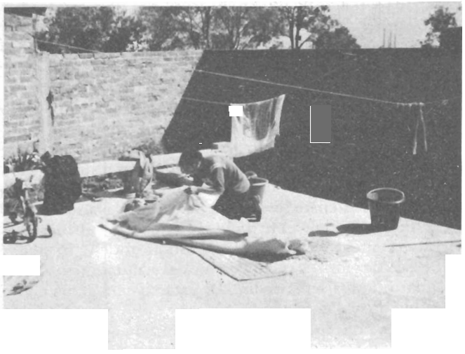
بالنسبة إلى اختصاصي علم النفس الأصلي هذا، من أكثر عوامل الاختلال في عصرنا المواد الكيميائية التي يستخدمها الإنسان في غذائه وفي طبّه الألوباثي. وفي مقابل هذا الطب يستخدم إيفان رامون أدوية طبيعية توجد فيها قوى عناصر الطبيعة. وتكثر طقوس التطهير بالنار والماء في علاجاته.
والمرض العقلي، وفق هذا الشامان، ناتج عن تدخل كائنات منخفضة التطور في الدماغ والعقل البشري. وتُحدث هذه التدخلات أعمالُ سحر يُؤمَر فيها «كائن أثيري سفلي» بالتفاعل مع دماغ طبيعي للتأثير في دوائره العصبية وإحداث انفجارات طاقية مخلة بالتوازن. وبحسب إيفان، لبعض هذه الكائنات الأثيرية السفلية أجسادٌ تخصّها، وبعضُها بلا جسد.
إيفان رامون يعالج أحد مرضاه.
ملاحظة تحريرية: العيوب البيضاء والرمادية ظاهرة في صورة المصدر، وأُبقيت دون ترميم تخميني.
التناسخ والماضي
المجلد الأول • صفحة ملف المصدر: 99 • الصفحة المطبوعة: 101
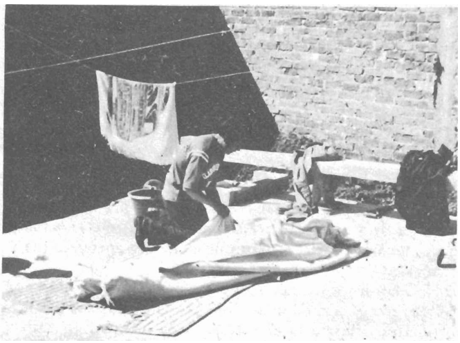
ويقول إنها كانت قبل أن تصير إلى حالتها الراهنة بشرًا لم يستطيعوا التطور أو تسببوا في أضرار جسيمة. وهذه الكائنات عبيد للسحرة الذين يستخدمونها في أذاهم.
ضمن مفاهيم إيفان رامون عن الواقع، يُعد التناسخ وقانون السبب والنتيجة ووجود مستويات مختلفة للواقع وللوعي أمورًا مألوفة. ويؤكد إيفان أنه يعرف حيواته الماضية، ويعرف كذلك حيوات مرضاه. ويقول إنه عاش في زمن الأزتك خادمًا لأحد المعابد: معبد الإله هويتسيلوبوشتلي. وعن هذا الإله يؤكد إيفان رامون أنه كان ملتهمًا للقلوب الأثيرية، لا ليفعل الشر بل ليحفز تطورها.
وكجزء من اتصاله بأصل ما هو مكسيكي،
إيفان رامون ومريض آخر من مرضاه.
ملاحظة تحريرية: العيوب البيضاء والرمادية ظاهرة في صورة المصدر، وأُبقيت دون ترميم تخميني.
تفسيرات الشامانات والبحث العلمي
المجلد الأول • صفحة ملف المصدر: 100 • الصفحة المطبوعة: 102
يؤكد إيفان رامون أنه يتلقى رسائل من سكان مجمع الآلهة الأزتكية الأثيريين، يخبرونه فيها بإمكان ثوران واحد أو أكثر من براكيننا، التي يسميها «الأنوار». ويقول اختصاصي علم النفس الأصلي هذا إن في غواناخواتو بحيرة تسمى يوريديا تحتوي على علامات أحداث مستقبلية. وبحسب لون الماء ومستواه يمكن معرفة ما سيحدث.
يُعد مفهوم الكائنات فوق البشرية الحية والمستقلة، التي يستطيع الشامان الاتصال بها، من أكثر المعتقدات شيوعًا بين أهل المعرفة. ويؤكده كل من دونيا باتشيتا ودون فلورنسيو ودون لوسيو وإيفان رامون نفسه بوصفه حقيقة لا شك فيها.
ومن الواضح أن التحقق مما إذا كان هذا يحدث فعلًا لا يزال خارج متناول علمنا، الذي لا يستطيع تأكيد هذا الاحتمال، وإن كان لا يستطيع نفيه أيضًا. ويكفي أن نتذكر أننا لا نزال لا نعرف أصل قدرتنا على الوعي والخبرة لكي نفهم ما سبق.
عمومًا، بدأ الطب النفسي المعاصر يهتم ببعض أنشطة الشامانات، مثل استخدام الأعشاب الطبية. لكن ثمة تيارين داخل الطب النفسي: تيار يرى أن المعالجة الشعبية عمومًا والشامانية خصوصًا منفصلتان تمامًا عن الممارسة العلمية ولا يمكن إدراجهما فيها. ويرى التيار الآخر أن لدى الشامان حكمة متوارثة منذ آلاف السنين ينبغي الاستفادة منها ومعرفتها.
إن دراسة جادة للمرضى الذين شفاهم الشامانات، مقارنة بالمرضى الذين شفاهم الأطباء النفسيون، من شأنها أن تبيّن ما يحدث فعليًا في كلتا الممارستين. وأعتقد أن بحثًا من هذا النوع قد يجعلنا نواجه مفاجآت كثيرة.
الفصل الخامس
المجلد الأول • صفحة ملف المصدر: 101 • الصفحة المطبوعة: 103
دونيا أسونسيون من هيدالغو
صفحة بيضاء
المجلد الأول • صفحة ملف المصدر: 102 • الصفحة المطبوعة: غير مرقمة
توضيح تحريري: هذه الصفحة بيضاء في المصدر المرفق.
دونيا أسونسيون
المجلد الأول • صفحة ملف المصدر: 103 • الصفحة المطبوعة: 105
مات ابنها الأكبر سنة 1975. وأثناء السهر على جثمانه، وهي لا تستطيع حبس دموعها، انطبق فمها فجأة وفقدت الوعي. ولم ير الذين كانوا معها إلا أن جسدها اتخذ وضعًا آخر وأن صوتها تغير. لم تعد امرأة بل رجلًا مثقلًا بالذنب. أخذهم إلى غرفة مجاورة وطلب منهم هناك الصفح.
تحدث عبر تلك الأم المكلومة شخص لم يكن هي ولا ابنها الميت، بل قاتله. طلب الصفح والرحمة ووعد بالمساعدة والتضحية ليدفع ثمن ذنبه…
ومن ذلك اليوم عرفت دونيا أسونسيون أن شيئًا غريبًا قد وُلد فيها. كانت تجلس على كرسي وتشعر بأن فمها ينطبق وأن جسدها يغيب، ثم لا تتذكر شيئًا. وكانت أسرتها ومن يستطيعون رؤيتها يخبرونها أن ابنها الميت يتحدث بفمها، وأنه يشفي من يراهم مصابين بالآلام.
عرفتها في جلسة يوم سبت في غرفة التأمل لدى إيفان رامون. كانت الجلسة لا تُنسى، لأن إيفان تحول، بعد ثلاث شخصيات بديلة، إلى طبيب صيني. كان يتحدث ويتصرف كشرقي أصيل. وكانت تجلس إلى جواره
جلسة إيفان وأسُونسيون
المجلد الأول • صفحة ملف المصدر: 104 • الصفحة المطبوعة: 106
أسونسيون مغمضة العينين. وفجأة بدأت هذه المرأة تُظهر تغيرات إيقاع التنفس المميزة للدخول في غشية الوساطة الروحية. ثم نهضت من مقعدها واتجهت إلى جسد إيفان رامون… تحدثت إليه بمفردات ونبرة شديدتي الشبه بمفردات «الصيني» ونبرته، فأجابها.
كان ذلك مشهدًا لا يمكن تصوره. رجل من أواكساكا وامرأة من هيدالغو يتحدثان بالصينية ويفهم أحدهما الآخر تمامًا!…
كان واضحًا أنهما يتفاهمان، بل يناقشان أمرًا مهمًا، إذا حكمنا من إيماءاتهما. وبينما حافظا على حوارهما استعدا للعمل معنا، نحن الذين كنا نراقب المشهد مذهولين. دعوانا واحدًا واحدًا، وخاطبانا بتلك اللغة الغريبة ثم دلّكانا. لكنه لم يكن تدليكًا عاديًا. كانت طريقتهما شبه متطابقة، وتقوم على وضع أيديهما على قفا كل واحد منا وجبهته. ثم كانا يهزان أيديهما سريعًا. وبعد ذلك مرّا على ظهورنا وجعلاها تهتز. وأخيرًا نفخا إلى يمين الرأس ويساره، ورشّا علينا الماء بعدما فعلا الشيء نفسه بنفسيهما.
أوصلت دونيا أسونسيون إلى محطة مترو العاصمة. وتأملت ملامحها القوية التي تميز السكان الأصليين، وضفيرتان بيضاوان تؤطران وجهها المستدير الممتلئ بالتجاعيد والنضج والتفهم. سألتها: «لماذا بدأ كل شيء عندما مات ابنك؟» فأجابت بأن ذلك طبيعي. فعندما يمتلك أحد أفراد الأسرة تلك «الموهبة»، يورثها بعد موته لفرد آخر من الأسرة. تذكرت باتشيتا وأومأت بالموافقة. فحين ماتت تركت ابنها الأصغر إنريكي وارثًا لما كانت تمارسه من جراحة في تقاليد أهل البلاد. كانت مسألة التوارث هذه مثيرة حقًا للاهتمام. فما الذي
الشخصيات البديلة ونقطة التجميع
المجلد الأول • صفحة ملف المصدر: 105 • الصفحة المطبوعة: 107
يُورَث، وماذا تعني تلك القدرة على امتلاك شخصيات بديلة؟
أكد لي مرافقو دونيا أسونسيون أنها تستطيع شفاء الجروح ومرضى السكري أثناء غشياتها. لكنها أكدت أنها لا تستطيع تذكر شيء مما يحدث أثناءها. وهي، مثل باتشيتا، وسيطة روحية يغيب عنها الوعي بما يجري أثناء الغشية. وتساءلت من جديد عما يعنيه ذلك. لماذا يفقد هؤلاء الناس وعيهم اليومي ويقومون بعلاجاتهم في تلك الحالة؟ وكيف ندخل هذه الأسرار ونتحقق مما تعنيه حقًا؟
توجد بالتأكيد مستويات كثيرة ومختلفة من الوعي، لكل مستوى منها طريقة خاصة تُعاش بها التجربة، وإن اشتركت هذه المستويات في قوانين. وأثناء التأمل العميق يمكن الشعور بحضور مركز داخلي مملوء بالحكمة. فهل يستطيع هؤلاء الاختصاصيون في علم النفس الأصلي أن يتموضعوا في تلك المنطقة المركزية من الكينونة، لكنهم بسبب التواضع يعتبرونها غريبة تمامًا عن فرديتهم، ولذلك يسمونها روحًا حامية؟
أعمق تفسير أعرفه لحالات الوعي ومستوياته المختلفة هو ما قدمه شامان ناهوال مكسيكي، دون خوان ماتوس. وقد وُصفت نظريات دون خوان بإسهاب في كتب كارلوس كاستانيدا. ووفقًا له، يمتلك كل إنسان آلية «تحاذي» نطاقين من الانبعاثات الواعية: من جهة انبعاثات مرتبطة بالجسد، هي الداخلية، ومن جهة أخرى انبعاثات خارجية قادمة من أصل الوعي نفسه. ووفق دون خوان، توجد نطاقات كثيرة يمكن محاذاتها، وآلية تضع الوعي الشخصي في اتصال بأحدها: نقطة التجميع. وتعمل نقطة التجميع كمغناطيس مضيء يجذب نطاقات داخلية معينة ويصلها بالخارجية. وفي كل مرة يحدث فيها هذا يدخل الإنسان حالة معينة
تفسير تجربة أسونسيون
المجلد الأول • صفحة ملف المصدر: 106 • الصفحة المطبوعة: 108
من الوعي. وعادةً ما تكون نقطة التجميع لدى جميعنا في موضع ثابت. وحين يتغيّر موضعها ندخل في حالات من الوعي تختلف عن حالتنا المعتادة. لا يستطيع الإنسان العادي التحكم في نقطة تجميعه بإرادته ووضعها في الموضع الأنسب له أو الأكثر إثارة لاهتمامه. وحده رجل المعرفة يتحكم في مواضع نقطة تجميعه ويستطيع تعديلها بإرادته.
ولعل اختصاصيي علم النفس الأصلي لدينا، الذين يمتلكون موهبة الوساطة غير الواعية، يقفون في نقطة وسطى بين رجل المعرفة المستنير تمامًا والإنسان في حاله المعتادة. وقد تكون الشخصيات البديلة التي تتجلى فيهم مظاهر لتركيز خاص لنقطة تجميعهم ولاصطفاف نطاقات الانبعاثات على نحوٍ غير مألوف.
من الواضح أن تفسيرات مثل التفسير السابق تطرح أسئلة جديدة وتترك أخرى بلا جواب. ومع ذلك، فمن بين جميع إمكانات التفسير يبدو لي هذا رائعًا بسبب قوته.
قد تعني تجربة رؤية دون إيفان رامون ودونيا أسونسيون يدخلان شخصية بديلة متشابهة أن نقطة التجميع لدى كليهما اتخذت موضعًا متشابهًا أو متطابقًا، وأنهما لذلك أصبحا تجليين للشخصية نفسها. وبعبارة أخرى، دخلا مستوى الوعي نفسه، وفيه تكون قوانين العمل والمحتويات معطاة ومتاحة لمن يستطيع محاذاة نطاقات الانبعاثات المحددة المرتبطة به.
وإذا صح ما تقدم، فإن ما حدث بين إيفان وأسُونسيون هو أن أحدهما، والأرجح إيفان، حرك نقطة تجميع الآخر إلى موضعه نفسه؛ ولهذا تشابه سلوكهما.
نُجري في المختبر بحثًا عن
التواصل والنشاط الدماغي
المجلد الأول • صفحة ملف المصدر: 107 • الصفحة المطبوعة: 109
تغيرات النشاط الدماغي لدى أزواج من الأشخاص أثناء التواصل السابق للكلام. وجدنا أن نشاط الأدمغة المعنية يصبح شديد التشابه حين ينجح الاثنان في إقامة تواصل تعاطفي. وبعبارة أخرى، حين يشعر إنسانان بأنهما قريبان جدًا أحدهما من الآخر، ويحققان شعورًا بألفة الحضور، يتأثر نشاط دماغ كلٍّ منهما بنشاط دماغ الآخر، حتى تكاد تتطابق الأنماط المسجَّلة في تخطيط دماغيهما الكهربائي. لقد دفع شيء ما في إيفان رامون نقطة تجميع أسونسيون إلى موضع مشابه لموضعه، فاكتسب الدماغان أنماطًا متشابهة ومظاهر سلوكية متقاربة.
صفحة بيضاء
المجلد الأول • صفحة ملف المصدر: 108 • الصفحة المطبوعة: غير مرقمة
توضيح تحريري: هذه الصفحة بيضاء في المصدر المرفق.
الفصل السادس
المجلد الأول • صفحة ملف المصدر: 109 • الصفحة المطبوعة: 111
دون إينوسنسيو فلوريس دي لا كروث من سان ميغيل تسيناكابان، بويبلا
جمعه إدواردو ألميدا أكوستا.
حاشية المؤلف: إدواردو ألميدا أكوستا، جامع هذا الفصل، أستاذ بكلية علم النفس في الجامعة الوطنية المستقلة في المكسيك. ويجري حاليًا دراسات عن مجتمعات السكان الأصليين في منطقة بويبلا. والتفريغات المقدمة فيما يلي جزء من تلك الدراسات.
صفحة بيضاء
المجلد الأول • صفحة ملف المصدر: 110 • الصفحة المطبوعة: غير مرقمة
توضيح تحريري: هذه الصفحة بيضاء في المصدر المرفق.
تقديم — دون إينوسنسيو
المجلد الأول • صفحة ملف المصدر: 111 • الصفحة المطبوعة: 113
تقديم
وُلد دون إينوسنسيو فلوريس دي لا كروث في سان ميغيل تسيناكابان، ببلدية كويتسالان، بويبلا. قضى سنواته الاثنتي عشرة الأولى في بلدته، ثم عاش عشر سنوات عاملًا مقيمًا في ضيعة في سان خوان تينيسيابا، وعشر سنوات غريبًا يعمل في أماكن مختلفة. وأخيرًا عاد إلى بلدته حيث عاش السنوات الأربع والعشرين الأخيرة من حياته. توفي في 18 أغسطس 1983.
يروي النص التالي ابنه دون لوسيو فلوريس فلوريس، وكنته دونيا كونسويلو كونتريراس تيرادو.
١. قدرة دون إينوسنسيو
أخذ دون إينوسنسيو قدرته من جدة، تشيبا دي لا كروث، عندما كان صغيرًا. كان شديد التعلق بتلك السيدة، جدته. ولأن جدته كانت ضنينة لم تكن تريد تعليمه. لكنها كانت ترفع صوتها في الدعاء أثناء صلواتها، فانطبع ما يسمعه في ذاكرته، وهكذا كان يتعلم.
كان عمره نحو عشر سنوات عندما كان يتبعها خفيةً.
نشأة دون إينوسنسيو
المجلد الأول • صفحة ملف المصدر: 112 • الصفحة المطبوعة: 114
كان يسير خلفها يستمع إليها. أشياء طيبة وأشياء سيئة. لكنه حفظ الطيب وحده، لا السيئ.
كان طيبًا، مع أنهم هنا كانوا يضايقونه بالقول إنه كذا وكذا. ويقولون إنه ليس معالجًا، وقد أثبت لهم أنه كذلك.
تعلم أبي من عمته¹، لكنه لم يكن ضمن جماعة. كان وحده. تعلم من شخص واحد. وربما كانت موهبة منحه الله إياها ليتعلم. ولما رأى أنه ينجح، استمد الشجاعة بنفسه مع الله.
تعلمت العمة تشيبا من أجدادها وأجداد أجدادها. كانت العمة تعالج، وكان يمشي خلفها. ولم تكن تحب أن يتبعها أحد.
عندما كانت العمة تفعل أمرًا طيبًا، كانت تسمح له بالاقتراب منها ليسمع.
أما عندما كانت ستفعل أمورًا سيئة، فلم تكن تسمح له بذلك. كانت تعمل أيضًا في السحر.
لم يكن أبي يعمل في ذلك. ربما كان يعرفه. لكنه كان يقول:
— أنا أعمل أعمالًا مستقيمة.
إذا طلب منه أحد: «أريد أن يصيب فلانًا شيء»، قال:
— هذا لا أفعله، ابحث عن غيري.
— سأعطيك كذا…
— حتى لو أعطيتني المملكة.
كان دون إرنستو، أخو أبي، مدلل العمة تشيبا. تعلم أكثر. ولا يعلن عن نفسه. يأتون لرؤيته من شوكويولو وأتاشبا… ومن أهل كويتسالان.
يأتون إليه للعلاج وللنصيحة.
عمل أبي في سان خوسيه أكاتينو وسان خوان تينيشيابا. كان يعمل هناك. يساعدهم في حقول التبغ، ويزرع الفلفل والسمسم. كانوا يدفعون له أجر يومه: 25 سنتافو يوميًا. أخذه عمه على أنه يتيم. في بيته لم يكونوا إلا يجلدونه. كان أبوه قد أطلق عليه رصاصة، لكنها لم تصبه. هرب. كان سيئ السلوك.
حاشية المؤلف: ١. العمة: المقصود هنا الجدة العمة.
العمل وأول علاج
المجلد الأول • صفحة ملف المصدر: 113 • الصفحة المطبوعة: 115
كانوا يعاقبونه في حقل التبغ. أوهمهم بأنه يتيم. أخذه عمه.
وعندما رأى أنهم لا يدفعون له، قالت له امرأة:
— ليس لديك ثياب. هنا لا تكسب. إذا أردت أن تكسب ثمن سروال على الأقل، فاذهب إلى مكان يدفعون فيه لك. لا تبقَ فقط حيث يعطونك خبز التورتيّا، لأنك ستبقى عاريًا. اذهب لتنظيف نباتات الفاصولياء.
— كم ستدفعين لي؟
— 25 سنتافو. سنرى هل تستطيع العمل.
وهكذا أخذوا يزيدون أجره. دفعوا ثمن ملابسه ثم خصموه من أجره.
ثم مر رجل:
— كم يدفعون لك؟ لن تفعل سوى رعاية الأبقار. سأدفع لك 75 سنتافو، وسأشتري لك الملابس وأعيلك.
ظن أنه صار يكسب مالًا كثيرًا. بقي هناك بضع سنوات. وثق بالأشخاص الذين يعاملونه جيدًا. وبقي نحو عشر سنوات غريبًا عند رب عمل واحد.
وبعد ذلك تنقل غريبًا من مكان إلى آخر. كان يستطيع تدبير نفسه وحده.
تعلم وحده، سواء نجح الأمر أو لم ينجح. خرج وهو صغير، في الثانية عشرة، مع عم اسمه ميغيل دي لا كروث. كان يعمل هناك. مضت سنوات، نحو عشرين سنة. بدأ الممارسة خلال وباء حين طلب منه أحد أصحابه ذلك في سان خوان تينيشيابا. هناك أجرى أول علاج.
فقال الصاحب لزوجته: «سآخذ الابن إليه». لأنهم كانوا يأخذونهم إلى الطبيب ليموتوا.
شفى بعضهم. وكان يقول: «سيستغرق الأمر مني وقتًا. بحلول الغد سيكون بخير».
ظهر معالج، فتزاحم الناس عنده. وانزعج الطبيب. أعطى الطبيب أوراقًا نقدية لرجل وطلب منه أن يؤذيه. لكن هذا الرجل أخذ النقود واقتسمها مع المعالج.
٢. كيف كان يعالج
المجلد الأول • صفحة ملف المصدر: 114 • الصفحة المطبوعة: 116
— أنت طيب — قال له — ومن يستحق الأذى هو الطبيب.
عندما حدث ذلك الوباء كان يعالج. لم يكن يعطيهم أي دواء. كان يأخذ قليلًا من شراب الأغواردينتي. ومن الحسد (nexicolis) أرادوا إيذاءه. من يشفي بلا دواء يعرف حقًا كيف يشفي.
عندما كان شابًا كان ينصرف إلى عمله في الحقل، وإلى العمل بالأجرة.
وحين ضعف بصره بدأ ينخرط تمامًا في هذه الأمور.
حين يكون المرء قويًا، يعمل في الحقل.
وحين لا يكون، يبحث عن حرفة.
كان يعالج، لكنه لم يكن يعلن: أنا أفعل هذا. كان يقول: «لا تُعلنوا أنني أعالج».
وكانوا يدعونه أحيانًا إلى اجتماعات المعالجين:
— إنهم يدعونني إلى أمر مهم — كان يقول.
لكنه لم يكن يريد الذهاب. لم يكن يحب ذلك. مثل يسوع الذي كان يقول: «لا تدعوا الأمر يُعرَف».
كان يقول: «بعد ذلك تأتي الضربات».
٢. كيف كان يعالج
كانت تأتيه أشبه برؤية. هناك تكون الضربة.
كان يقول إن بعض الأرواح تكلمه وتحمل إليه الخبر. وكانت تأتي لتخبره إذا كان سيعالج مريضًا. اليوم لا يعطونه جوابًا، فيقول لمن يعالجهم: «تعالوا يوم السبت». ثم يعطيهم الجواب. كان يأتيه خبر سبب معاناتهم من ذلك المرض.
كان يقول إن الرب يكلمه شخصيًا بواسطة روحه، وإن موتى، أرواحًا، يحملون إليه الخبر.
نحن هنا من أهل الدنيا، لكن توجد أرواح طيبة تأتي للمساعدة وتقول ما ينبغي فعله.
الأحلام والتشخيص
المجلد الأول • صفحة ملف المصدر: 115 • الصفحة المطبوعة: 117
كانت جميع الأخبار تأتيه في الأحلام: هذا ستتقاضى عليه أجرًا، وهذا لن تتقاضى عليه أجرًا. وكان المحسنون يهدونه بعض المال لأنهم يرون العمل الذي يقوم به، وأن ما يقوله صحيح. كانوا يقولون:
— رأيت أطباء عدة، ولم يفعلوا لي شيئًا. وأنت، ماذا ترى فيّ؟
كان يقول:
— أحضر لي شمعة نذرية.
إذا كان اليوم الاثنين، قال:
— تعال الأربعاء ونتحدث. أنت لم تمرض لمجرد أنك مرضت؛ الله أرسل لك المرض.
وهكذا يبدأون الحديث.
— لكننا لا نصدق أننا نسيء إلى جار أو نُحدث ضررًا في المزرعة. وحتى لو لم يرد المرء أن يُعرَف الأمر… فإنه يُعرَف. فلا أحد يخبرني به.
ولهذا كان يقول لهم أن يأتوا ليخبرهم بما لديهم.
كان يخبرنا بما يحلم به، ويسميه رؤًى. كان يعرف من خلال الحلم.
لم يكن لديه وقت محدد للعلاج، لكن كانت لديه أيام: أي يوم إلا الجمعة أو الثلاثاء.
كان دون إينوسنسيو يصوم لكي يُستجاب لما يطلبه. صيام يوم كامل.
ومن الأمور التي تدهشني أيضًا أنه كان يعرف فور لمس الرأس. كانت تحدث اتصالات؛ فما يؤلم المريض في موضعه كان الألم يصيب أبي فيه أيضًا. يدهشني ذلك. وهكذا كان يقول لهم:
— يؤلمك هذا، ويؤلمك هنا.
وإذا تعلق الأمر بعلاجه، تولاه بنفسه.
وفي مرات أخرى، كان دون إينوسنسيو يأخذ كأس ماء وخمانًا وبيضة للعلاج. يستخدم الخمان لكل الأشياء السيئة. يمسح الشخص بالخمان والبيضة، ثم يكسر البيضة في كأس الماء
المذبح و٣. «الله هو الذي يفعل»
المجلد الأول • صفحة ملف المصدر: 116 • الصفحة المطبوعة: 118
ويضع الخمان بشكل صليب فوق الكأس كيلا يفلت ما يجمعه من الشر. ثم يتأمل الخيوط اللزجة الباقية في الكأس، وكأنها شموع. وعندئذ يخبر المريض الذي يعالجه بما يراه: أنهم يؤذونه. يُرى ذلك هناك.
كان يستخدم ورق الشاي لإخراج الشر الموجود في المعدة، حين يكون المرء فاقد النشاط ومصابًا بالإسهال وبفقدان الشهية. هكذا يهلك المرء.
كان يعالج في غرفته، وكان عمله يقتصر على تلك الغرفة. كان لديه تمثال المسيح، وميدالية في علبة صغيرة يحملها دائمًا، ويقول إنها أقوى سلاح يمكن أن يمتلكه هنا في العالم.
كان لديه المذبح وشموعه. والشخص الذي يذهب إليه كان يحمل دائمًا شمعة نذرية. شمعة واحدة فقط. يوقدها ويضعها على المذبح.
على المذبح صورة الطفل القدوس، وصورة للقديس أنطونيو خاصة بالأسرة، وصور أخرى… لكن الزهور لم تكن تغيب عن مذبحه أبدًا. كان عليه أن يزينه.
كان يقول لمن يأتي للاستشارة:
— أحضر لي شمعة. شمعة وكوبال. بخورًا لإبعاد الإغراءات، كما يفعل الكاهن.
كانت شمعته موقدة دائمًا. كان يدعو لنفسه؛ وإلا فتخيل، سيبقى بلا طعام.
إذا أوقدت شمعة ثم انطفأت من تلقاء نفسها، فذلك يعني أن المريض لا حياة له، وأن المرض تجاوز مرحلة من مساره.
٣. «الله هو الذي يفعل!… لا أنا»
كان يعتبر مهنته عملًا خيريًا. لا أعرف كيف أشرح هذا. عندما كانوا يحتاجونه كان الناس يأتون يطلبون المساعدة. حتى لو لم يكن يريد، كان يستجيب.
— لا أستطيع الرفض. صحيح أنني لا أتفرغ لهذا
علاج الطفل و٤. التدخل دون إذن
المجلد الأول • صفحة ملف المصدر: 117 • الصفحة المطبوعة: 119
العمل، لكنني أستطيع فعله. إن كان عندهم إيمان أثمر عملي، وإلا فلن يجدوا راحة. أمّا أنا فأقوم بالعمل، والشفاء ليس بيدي. أضع يدي على الشخص.
وأحيانًا كنت أراه حقًا يشفي.
جاءت ذات مرة زوجة هـ. غ. ومعها طفلها الذي وُلد قبل ثمانية أيام. كانت قد ذهبت إلى الطبيب. لم يكن يستطيع التبول، ولا يفعل إلا البكاء. كان مسدودًا.
— وقد ذهبتم إلى الطبيب… — كان يقول ويضحك.
أخذ الأغواردينتي وبلل راحة يده ووضعها على يافوخ الطفل. وقال له:
— أنت الآن غير معمّد. سأعمّدك الآن بالأغواردينتي، لكن لا تصبح سكيرًا.
بدأ يحرك مثانته.
— ألم يتبول؟ — كان يقول.
وكان يهزه قليلًا قليلًا.
— الآن سينفتح الانسداد.
وفي تلك اللحظة تبول الطفل عليه، لن تصدق ذلك.
— لقد فعل الأمرين — فنهض الأب.
— آه يا صاحبي العزيز، كم أهنئك! لقد أنقذت ابني.
فقال له:
— هنا الدواء. لذلك قلت لكم: إذا كان لديكم إيمان بالله… من دون إيمان كيف سأقوم بالشفاء؟ الله هو الذي يفعله!… لا أنا.
في اليوم الثالث بعد زوال الانسداد أعادوه إليه، وصار بخير.
٤. «لأنني تدخلت دون إذن الله»
جاءت امرأة ذات مرة ومعها فتى كبير، في نحو الخامسة عشرة. طلبت المرأة منه أن يعالج الفتى. جاؤوا فجأة يطلبون منه العلاج. وكان يقول:
— لم أطلب من الله بعد.
انتقال الألم
المجلد الأول • صفحة ملف المصدر: 118 • الصفحة المطبوعة: 120
لكنه أشفق عليه فوضع يده على رأسه. جلس، ربما يصلي إلى الله. عالجه هكذا على الفور.
نحو الثانية عشرة ظهرًا، ذهبت لأوصل التورتيّا إلى زوجي، وكان [حماي] يتمايل برأسه فقط.
— رأسي يؤلمني.
وكان يتأوه.
— إذن لماذا قمت بذلك العمل؟
— أشفقت على الفتى. لكنهم فعلوا شرًا. تصلني الأخبار. أشياء سيئة. الفتى مريض لأنه أخذ بعض النقود وبعض الديوك الرومية من امرأة. ذهبوا وباعوها واحتفظوا بالمال. بحثت المرأة عن وسيلة لتعرف. لجأت إلى سحرة… فانكمشت يد الفتى.
وصلت الأم بصداع، والفتى بيد منكمشة.
ذهبت أبحث عن زوجي وقلت له:
— أبوك مريض جدًا. تركته يتمايل برأسه ويتأوه.
وصل زوجي نحو الثالثة. كان أبوه يتأوه ويطلب مساعدته، ويقول إنهم يلقونه في الحفرة.
— الأفضل أن تأخذوني إلى بيتي. إنهم يقتلونني.
كان يقول:
— سأموت لأنني تدخلت دون إذن الله.
ما كان الفتى يشعر به بقي فيه هو. كان على وشك الموت.
أخذ زوجي كوبًا ووضع فيه قرصين من ألكا سلتزر. وأخذ حزمة خمان وبيضة دافئة.
— دلّكني بهذا — قال.
وكان زوجي يفعل ما يطلبه. يدلكه ويتلو عليه الصلوات. وكان هو يملي عليه كيفية ذلك.
— قليل من الملح المطحون. إناء. صب فيه الأغواردينتي. حضّره بالأغواردينتي ودلّكني به في جسمي كله. دلّكني، لكن لا تخف.
ملاحظة تحريرية مضافة في التدقيق: تقول الراوية أولًا إنها أوصلت الطعام إلى زوجها، ثم تصف حال والد زوجها وتذكر أنها ذهبت لاستدعاء زوجها. هذا الالتباس موجود في التفريغ الإسباني؛ وكلمة [حماي] في الترجمة توضيح مستنتج من بقية الرواية، وليست لفظًا صريحًا في تلك الجملة.
التعافي و٥. معرفة الماضي والمستقبل
المجلد الأول • صفحة ملف المصدر: 119 • الصفحة المطبوعة: 121
كان زوجي يفكر:
— كما حدث له، سينتقل إليّ الأذى.
لكنه قال:
— لست خائفًا منك، فأنت أبي.
وبعد نحو ثلاث ساعات زال عنه الأمر وأراد الطعام، لكنه لم يستطع أن يأكل؛ فقد تيبّس فكه.
ونحو العاشرة ليلًا دعانا إلى المكان الذي ينام فيه.
— كيف كنت تشعر، وأنت لا تفعل إلا رؤية الرؤى؟ كنت تخبرنا أنك لست في فراشك وأنك ترى مخلوقات.
لأنه لم يطلب الإذن، كان مرضه هو ما يشعر به ذلك الفتى.
— نجوت بفضل ابني.
لم يكن قد استودع نفسه الله، ولهذا انتقل إليه مرض الفتى.
٥. العارف بالماضي والمستقبل
كانت أنباء ما قد يحدث تأتيه في الرؤى، أو كان يراه بنفسه. كان يدركه.
كان يقول لهم:
— عليك أولًا أن تتوب إلى الله، ثم تأتي.
فيعود الشخص:
— لقد طلبت الصفح من الله.
بدون ذلك لا تكون لدى المرء تذكرة، كما يقولون.
ثم يخبرهم بما فعلوه:
— لا، هذا غير صحيح.
كانوا يقولون ذلك، لكن من يدري كيف كان يعرف.
— أنت تفكر في هذا، وتتحدث عن هذا. لا يفعلون إلا استدراجك إلى الكلام، ثم يلعنون. أنت تتوسل إليهم، لكنهم لا يحبونك.
كنت أقول له:
— هذا ما يقوله لي إخوتي.
معرفة أحوال الزوار و٦. كنز الحماية
المجلد الأول • صفحة ملف المصدر: 120 • الصفحة المطبوعة: 122
وكان يجيبني:
— تصرّين على التدخل في شؤون إخوتك، وأنتِ ترين أنهم لا يحبونك.
وكان يقول أحيانًا:
— سيأتي الآن شخص من بعيد.
وكان لا بد لذلك الشخص أن يصل. كانوا يأتون حتى من مكسيكو، وجاء أيضًا شخص من بويبلا كان يعاني صداعًا طوال حياته. قال له:
— عجيب، أنا شخص عادي. لديك مال، فلماذا لا تذهب إلى طبيب؟
قال المريض:
— لدي إيمان بالله وبك.
— ادخل إن كنت تؤمن بالله.
كان يأخذ الأغواردينتي ويضع يده عليهم، ثم يخبرهم بما لديهم، إن كان في المعدة مثلًا.
— كيف تعرف؟ — كانوا يسألون.
حتى لو لم يكونوا يخبرونه، كان قد أخبرهم بما فعلوا.
يجلسون ويسألونه:
— كيف تفعل ذلك؟
— أنت لا تدرك، لكنني أتحدث مع الروح.
فيقول الشخص:
— نعم، أصدق ذلك.
وكان يقول:
— فعلت هذا، ولا تستطيع إنكاره عليّ.
لم يكونوا يستطيعون خداعه.
— أنت نفسك تقوله لي، وكأنك تحدثني.
٦. كنز الحماية
كان لديه شيء يشبه كنزًا، لنقل ذلك. وكان يأخذ هذا الكنز إلى موضع في أحد البيوت. إذا قال أحدهم:
كنز الحماية و٧. تجبير العظام
المجلد الأول • صفحة ملف المصدر: 121 • الصفحة المطبوعة: 123
— أريد أن تكون الحياة في بيتي.
كان يأخذه ويضعه في بيته. ويتعهد بألا يحدث شيء في ذلك المنزل خلال تلك السنة، لا أمراض ولا شيء.
كان الكنز أشبه بذخيرة مقدسة مثلًا. يجلب الشمع من خلايا النحل، والتبغ، والكوبال… ويجلب سعف أحد الشعانين المبارك والشمع. ويضع معه عملات نقدية. يجمع كل ذلك في شكل كرة، ويحفر حفرة صغيرة ويضعه فيها، ويبقى هناك السنة كلها.
كان يطلب تساعية صلاة، وفي يوم انتهائها يذهب ليزين منزل من طلبوا منه تلك الخدمة.
كان يغير الكنز كل سنة. فالأشياء تفقد رائحتها وقوتها.
كنت أسأله، ولم يكن يريد أن يقول. ذلك الكنز الذي يحملونه إلى البيوت… هناك لا ينقصهم شيء أبدًا، وفيها من كل أنواع البذور. وكانوا يسمونه تاجبالول، أي قربانًا.
— Nej niktaliti se tajpalol.
— أقدم قربانًا باسم فلان أو فلان لكيلا يحدث شيء…
وكان يسمي الأشخاص المقيمين هناك.
كان الناس هنا يبقون راضين، بإيمان أولئك الناس وإيمان أبي. يعدّون له طعامه ويكرمونه. ورافقته أحيانًا.
٧. مجبّر عظام
كان دون إينوسنسيو مجبّر عظام أيضًا. تعلم ذلك من أبيه. كان أبوه قد سقط من دابة إلى منحدر، ولم يكن يستطيع النهوض.
— سأموت الآن.
أمسكه من يده اليسرى وأوقفه.
— سينفطر قلبي، لأن يدي تؤلمني كثيرًا.
بدأ دون إينوسنسيو يصلح يد أبيه.
٨. مجبّر عظام جيد
المجلد الأول • صفحة ملف المصدر: 122 • الصفحة المطبوعة: 124
وفي المساء سأله:
— ألم تعد تؤلمك؟
— لم تعد، إلا قليلًا.
سخّن ماءً مملحًا، وبدأ يدلكه ويبلله به وربط يده. فقال له أبوه:
— كيف خطرت لك فكرة إصلاح يدي؟
— الله والحظ.
— كيف فكرت في ذلك؟ كانت قد تلفت يدي.
وهكذا بدأ. كان لا يزال صغيرًا.
٨. مجبّر عظام جيد
جاء رجل أراد اختباره.
— يدي مجرد مرضوضة — كان يقول.
جاء فقال له:
— تعال، هات يدك.
كان العظم مكسورًا.
— عظمك مكسور.
قال له مجبّرو العظام:
— إنها مجرد رضّة.
وكان مكسورًا. ذهب الرجل إلى تيسيوتلان، وأخذوا له صورة بالأشعة السينية. كان مكسورًا. عاد مندهشًا:
— قالوا لي هناك إنه مكسور. لهذا لا تتحسن.
— آه، لم تكن تصدقني!
— نعم، لم أصدقك! قال مجبّرو العظام إنها رضّة، وأنت قلت كسر.
— إذن حسبتني طفلًا، وأن ذلك غير صحيح.
— لكن الآن نعم، كم أشكرك. أشعر بوخزات. الآن فقط أصدقك.
— لا تؤمن بي، آمن بالله. هو الذي يفعل ذلك.
وجاء الرجل ليهديه خمسمئة بيزو من نقود ذلك الزمن.
— أزلت شكي. كان العظم مهشمًا بشدة.
٩. النساء اللواتي تلقّين القدرة من دون إينوسنسيو
المجلد الأول • صفحة ملف المصدر: 123 • الصفحة المطبوعة: 125
قال له:
— اسمع كيف يصدر الصوت؛ عظام الرسغ تصرّ.
— كم أشكرك. سيجرون لي عملية في يدي الآن.
٩. النساء اللواتي تلقّين القدرة من دون إينوسنسيو
عندما بدأت قوى دون إينوسنسيو تنفد، كنت أطلب منه أن يكتب ورقة.² وكان يقول:
— هم أيضًا مباركون من الله. ذهبوا لتلقي التعليم الديني.
كان يعلّم بعض الأشخاص فعلًا: فتاة كانت من جهته، ر. أ. غ. من أيوتسينابان، وخالتها ر. غ. من تسيناكابان، زوجة ب. م.
عرفهما هكذا: كانت امرأة من أيوتسينابان قد أمضت ثمانية أيام في المستشفى، ولم يتوقف عنها نزف الدم. وأخبرتها حماتها أن يأتوا لرؤية دون إينوسنسيو. جاء صهر المرأة صباح يوم نحو السادسة.
— لعلّك تزيل هذا الشك عني، زوجتي تحتضر.
— ماذا لديها؟
— نزف دم.
— إن كان لديكم إيمان بي فسأعدّ لكم الدواء. اشتر قطعتين من الشوكولاتة، وعودًا صغيرًا من القرفة وحزمة صغيرة من السذاب. خذ ثلاثة أغصان لتضعها مع الباقي في الماء الذي يغلي.
فحضّروه وأعطوها لتشرب. وفي اليوم التالي جاء الرجل إليه وأخبره أن المرأة تحسنت وأن النزف لم يعد. فقال له دون إينوسنسيو أن تشرب نصف كوب فقط مساءً، وألا ترفع أشياء ثقيلة.
وفي اليوم الثالث جاءت المرأة. جاؤوا ليشكروه
حاشية المؤلف: ٢. أي أن يكتب.
ملاحظة تحريرية مضافة في التدقيق: يصف التفريغ الرجل القادم بلفظ «صهر المرأة» (yerno)، ثم ينقل قوله «زوجتي تحتضر». أُبقي اختلاف الإحالة كما ورد، دون تعيين قرابة غير مؤكدة.
تعليم الخالة وابنة أختها
المجلد الأول • صفحة ملف المصدر: 124 • الصفحة المطبوعة: 126
على الخدمة التي قدمها لهم، ويسألوه كم الأجر. فقال إنه لا شيء، المهم أن تتعافى. وهذا كل شيء.
بعد ذلك قال دون إينوسنسيو للمرأة إنه إذا كانت الابنة تريد المعرفة والتعلم، فسيعلّمها. وبعدما أخبر والديها بأنه سيعلّمها، جاءت أخت زوجة الرجل. أحضرت أمها، وكانت مريضة أيضًا.
— هل صحيح أنك ستعلّم ابنة أختي؟
قال دون إينوسنسيو:
— كنت أحدثها: إن أرادت ابنة أختك التعلم، أستطيع تعليمها.
— وأنا أيضًا أريد التعلم — قالت الخالة — إذا كنت ستعلّمها، فلماذا لا تعلّمني أيضًا؟
قال حماي:
— أريد أن يبقى أحد يعالج، لكن ألا يكون من أبنائي.
وعندما طلب أحد الأبناء التعلم، قال دون إينوسنسيو:
— إن أداء تلك الأعمال التي يطلبونها من المرء مسؤولية.
كان الابن يطلب منه، وهو لا يريد.
— لاحقًا، عندما لا أستطيع أنا.
وعندما بدأ تعليم الخالة وابنة أختها، فكر في الانفصال عنا. ذهب إلى تشيلكويتا. كان يملك بيتًا هناك، وأقام فيه وحده. ثم ذهبت المرأتان، الخالة وابنة أختها، للتعلم. كانتا ستبقيان هناك. رأيت دفتر الفتاة. كانتا تكتبان. أغرتني فكرة أخذه. لكن الله قال لي:
— دعيه مكانه!
عندما ذهب إلى تشيلكويتا أخذ مذبحه وكل شيء.
ذهبت مرة إلى تشيلكويتا ورأيت أن الخالة وابنة أختها كتبتا بعض الصلوات في دفتر. كان دون إينوسنسيو يعلمهما إياها. صلاة يومية، وصلاة
الصلوات والقدرة
المجلد الأول • صفحة ملف المصدر: 125 • الصفحة المطبوعة: 127
للدفاع عن النفس. وصلاة للدعاء للمصابين بالفزع. وصلاة إذا احتضنتهم الأرض المقدسة. وصلاة إذا أحرقتهم النار. وصلاة إذا سقط المرء في الماء.
قال لي دون إينوسنسيو:
— لا تلمسي تلك الأشياء، لأن الفتاة ستغضب.
القدرة هي الصلاة، والقوة مع الله.
لم يكن دون إينوسنسيو يريد أن أتعلم الصلوات. كنت أسأله أحيانًا كيف تُفعل، وكيف يقال لكيلا ينقص شيء.
— أنا هنا — كان يقول لي.
— لدي القربان لكيلا ينقص الطعام.
وعندما كان الأبناء يمرضون، كان يلزم نفسه بعلاجهم.
— عندما تفتقدونني — كان يقول — ستتذكرونني.
صفحة بيضاء
المجلد الأول • صفحة ملف المصدر: 126 • الصفحة المطبوعة: غير مرقمة
توضيح تحريري: هذه الصفحة بيضاء في المصدر المرفق.
الفصل السابع
المجلد الأول • صفحة ملف المصدر: 127 • الصفحة المطبوعة: 129
دونيا ليتشا من بويبلا
صفحة بيضاء
المجلد الأول • صفحة ملف المصدر: 128 • الصفحة المطبوعة: غير مرقمة
توضيح تحريري: هذه الصفحة بيضاء في المصدر المرفق.
زيارة دونيا ليتشا
المجلد الأول • صفحة ملف المصدر: 129 • الصفحة المطبوعة: 131
ذهبتُ وزميلة لي، غريتشن، إلى بويبلا بحثًا عن دونيا ليتشا، وهي اختصاصية في علم النفس الأصلي تعيش في تلك الولاية. لم نكن نعرف عنوانها، وقررنا للعثور عليها أن نسأل أشخاصًا يبدون من أهل المكان، ويُحتمل أن يعرفوها.
أخطأنا عدة مرات، إلى أن خطر لنا أن نسأل سائق سيارة أجرة، فأعطانا فورًا إرشادات الوصول إلى منزلها. كان مسكنها جزءًا من مجموعة غرف متصلة بعضها ببعض تحيط بفناء فيه حدائق. ومنذ المدخل كان يُشعَر بجو من النظافة والترتيب والقوة. سألتني شابة جميلة جدًا عن سبب زيارتنا، وأحسست وهي تسأل أن نظرتها تخترقني في محاولة لاستكشاف نياتي. قلت إننا جئنا لرؤية دونيا ليتشا، وبعد أن ذهبت لتسألها سمحت لنا بالدخول.
دونيا ليتشا
ظهرت دونيا ليتشا. بدت لي مرحة ولطيفة وناضجة؛ قلت لها إننا متعلمان وإننا نجري
تجربة الطفولة
المجلد الأول • صفحة ملف المصدر: 130 • الصفحة المطبوعة: 132
دراسة عن رجال المعرفة ونسائها في المكسيك، وإننا اخترناها بناءً على توصية أحد تلاميذ دون إيفان رامون من مدينة مكسيكو.
أدهشني الجو السائد في منزلها. كنا في غرفة مطلية بالأخضر والأبيض، فيها مذبح وشمعة موقدة.
كان كل شيء في موضعه، نظيفًا ومرتبًا، وجهاز راديو ومسجل يشغّل الموسيقى بينما تحدثنا دونيا ليتشا عن حياتها وعملها.
أخبرتنا أن عقربًا لدغها عندما كان عمرها عشر سنوات، وأنها فقدت الوعي بسبب سمه وبدأ بطنها ينتفخ. أحضروا طبيبًا، لكنه لما لم يجد النبض أو يسمعه حكم بأنها ماتت، ولم يحقنها بأي ترياق. مرت عدة ساعات بدأت الأسرة خلالها تستعد للسهر على جثمانها.
كانت أمها، التي لا تجد عزاءً، تحتضنها باكية؛ وعندما تكرر ذلك مرات عدة، فتحت الطفلة عينيها وعانقت أمها وقالت لها ألا تقلق، فهي بخير.
وبعد أيام قليلة خرجت ليتشا إلى الريف مع جدتها. كانت الجدة تركب حمارًا بينما تتبعها الطفلة ماشية. وفجأة سمعت ليتشا صوتًا يشبه رفّة جناح ديك رومي، أعقبه تنفس قوي. سألت جدتها، ولاحظت أن الحمار يحرك أذنيه وكأنه يتوقع خطرًا.
لم تكن الجدة قد سمعت شيئًا، لكنها تماسكت في سرجها، وسحبت ليتشا الحمار بشجاعة حتى المنزل.
بعد ذلك بدأت ليتشا تشعر بسوء شديد. كانت يداها تلتويان، وتضطرب انفعالاتها بسهولة كبيرة. أخذوها إلى معالجة أخبرتها أنها كانت في «غشية موت»، وأنها اكتسبت قدرة الشفاء وعليها استخدامها.
اتبعت دونيا ليتشا نصيحتها، ومنذ تلك
تقنيات العلاج لدى دونيا ليتشا
المجلد الأول • صفحة ملف المصدر: 131 • الصفحة المطبوعة: 133
اللحظة حُلّت مشكلاتها الجسدية والعاطفية تمامًا.
أدركت دونيا ليتشا أنها تستطيع إزالة الآلام وشفاء الأمراض وحل مشكلات المرضى الذين صاروا يأتون لاستشارتها بأعداد متزايدة. وكانت تخصص لكل منهم علاجًا بحسب ما لديه. يتلقى بعضهم تطهيرًا بالبيض والأعشاب، وتعالج آخرين بوضع يديها على أجزاء مختلفة من أجسامهم. ولآخرين كانت ليتشا تُجري «قراءة» تتيح لها التشخيص والتخطيط للعلاج. وسأصف هذه التقنيات فيما يلي.
تقنيات العلاج لدى دونيا ليتشا
القراءات إجراء تشخيصي شائع بين الشامانات والمعالجين في المكسيك. تقوم على فرك البيض الطازج في جميع أنحاء جسم المريض، بدءًا بالرأس وانتهاء بالقدمين. ثم تُفرغ البيضة في كؤوس تحتوي ماء نظيفًا. وبحسب الأشكال التي يتخذها البياض والصفار، يفسر الشامان مرض المريض ويقدم تشخيصًا.
عمومًا، يدل البياض على الجانب الروحي للمريض، وتشير أشكاله للشامان إلى الطاقات المحيطة بجسمه وكيف تؤثر فيه وتتحكم به.
أما الصفار فيمثل الجسم المادي. وفيه تدل النتوءات على مناطق مريضة في الجسم، وتدل التدفقات على عدوى جارية، وتُظهر المناطق الداكنة جوانب شديدة السلبية.
وتُفسر الفقاعات في البياض على أنها كائنات مرتبطة بالمجال الطاقي للمريض. ويتغير التشخيص بحسب موضعها، وخصوصًا إذا ارتبطت بها «حُجب» بروتينية.
القراءة والتطهير
المجلد الأول • صفحة ملف المصدر: 132 • الصفحة المطبوعة: 134
عندما يكون الصفار مغطى بأحد هذه الحجب، وتظهر فقاعات على السطح أيضًا، تعدّ دونيا ليتشا ذلك علامة غير محمودة.
وإذا كان الصفار مكشوفًا، أو وُجدت فقاعة منفردة تطفو داخل البياض، فتعدّ ذلك علامة محمودة، وتفسّرها بوجود مرشد أو حامٍ للمريض.
وحين تُرى فقاعتان كبيرتان محاطتان بحجاب يطفو فوق الصفار، يكون التشخيص وجود كائن يراقب المريض، وضعه هناك عدو نتيجة الحسد أو الغيرة.
وعندما تكون الفقاعة مغروسة في الصفار، يُعتبر أن هناك «روحًا غريقة».
في الحقيقة، لا يقدم الوصف الذي عرضته الآن إلا فكرة طفيفة عن تعقيد التشخيص المرتبط بشكل القراءات.
وبحسب تشخيص القراءة تقرر دونيا ليتشا علاجها. وقد يكون تطهيرًا تستخدم فيه اختصاصية علم النفس الأصلي جسدها نفسه أداةً، ويديها وسيلتين لإبعاد مناطق الاختلال؛ أو استخدام بيض يُفرك في رأس المريض وظهره ويديه وذراعيه؛ أو مستحضرات تُدهن على الصدغين لإزالة الطاقات السلبية.
تستخدم دونيا ليتشا إجراءً خاصًا يقوم على وضع يديها، بعدما تبللهما بالبلسم، على أذني المريض، مع حركة إلى الخارج تشبه الشفط. ثم تفرك قفا المريض وجبهته، وأخيرًا تنفخ بقوة موجهة الهواء إلى القفا. خضعت لإجراء مثل الذي وصفته لتوي، وكانت نتائجه إيجابية جدًا. أحسست بالاسترخاء والتحرر من العوائق الذهنية.
تقول دونيا ليتشا إن جميع الإجراءات التي تستخدمها «تأتيها» بفعل حدسي.
وبالفعل نفسه تقول دونيا ليتشا إنها تستطيع
الجسد والحدس والموهبة
المجلد الأول • صفحة ملف المصدر: 133 • الصفحة المطبوعة: 135
التمييز بين ما إذا كان زوارها مرضى، أو يمتلكون قدرة نفسية لم يطوروها.
ووفق قولها: «إذا امتلك شخص موهبة الشفاء ولم يستخدمها، فإن الطاقة التي لا يعطيها تتراكم في جسمه وتُحدث فيه اضطرابات».
وكما ذكرت سابقًا، تتذكر دونيا ليتشا أن إدراكها لهذا في تجربتها الخاصة أتاح لها فهم ما يحدث لمرضاها.
قالت بصوت مبتهج: «كلما شفيت وأعطيت أكثر، شعرت بأنني أفضل. في كل مرة أشفي فيها مريضًا أشفي نفسي».
تستخدم دونيا ليتشا جسدها أداة في علاجاتها. تميز المرض بيديها، فتضعهما في مناطق مختلفة من أجسام مرضاها، وتكتشف بذلك زيادة الطاقة أو نقصها، والاختلال أو التوازن.
تقول اختصاصية علم النفس الأصلي هذه إنها تستطيع التفريق بين مرض المريض وموهبة القدرة أو الشفاء التي قد تظهر بأعراض مشابهة. وعندما تكتشف قدرة لدى شخص، تبذل ما تستطيع لدفع تطورها. وفي الحالتين، المرض والقدرة، تحرص دونيا ليتشا على ألّا يتعلّق بها زائروها فيعتمدوا عليها.
من أشد الدروس تأثيرًا التي تقدمها دونيا ليتشا الثقة بجسدها أداةً للشفاء.
وتعدّ الأعشاب وبيض التطهير والأدوية أمورًا ظرفية وثانوية بالمقارنة مع حضورها الطبيعي وحدسها.
وعندما سألتها عن أصل قدرتها العلاجية، أصرت على أنها تعتمد على درجة تفانيها واستقامتها التامة.
ليست دونيا ليتشا وسيطة روحية، ولا تبدو مهتمة بالدخول في غشيات غير واعية. لكنها تعبّر عن رغبة شديدة في العثور على معلم يرشدها في طريقها.
ليتشا ودون لوسيو
المجلد الأول • صفحة ملف المصدر: 134 • الصفحة المطبوعة: 136
عندما ذكرت لها وجود دون لوسيو، الذي مرّ مثلها بـ«غشية موت»، لكنها على خلاف غشيتها لم تستمر بضع ساعات بل ثلاث سنوات كاملة، أبدت دونيا ليتشا فضولًا وأملًا في أن يستطيع شخص مثله إرشادها.
وبخلاف دون لوسيو، لا تتذكر دونيا ليتشا ما حدث في «غشية الموت» التي مرت بها. ولا تعرف إلا أنها اكتسبت مواهب الشفاء بعدها.
يؤكد دون لوسيو أنه أثناء «غشيته» التي استمرت ثلاث سنوات تلقى تعليمًا من عمّال الطقس، الذين أرشدوه وعلموه العلاج.
ومن المثير جدًا للاهتمام أن هذين الشخصين طوّرا قدرتهما العلاجية بعد حدث شديد التشابه، وإن اختلفت مدته.
الفصل الثامن
المجلد الأول • صفحة ملف المصدر: 135 • الصفحة المطبوعة: 137
«حسيديم» موريلوس
صفحة بيضاء
المجلد الأول • صفحة ملف المصدر: 136 • الصفحة المطبوعة: غير مرقمة
توضيح تحريري: هذه الصفحة بيضاء في المصدر المرفق.
«حسيديم» موريلوس
المجلد الأول • صفحة ملف المصدر: 137 • الصفحة المطبوعة: 139
قبل خمس سنوات حظيت بامتياز كبير، هو التعرف إلى مجموعة من الفلاحين المكسيكيين المهتمين بتطوير الوعي. يعيشون في ولاية موريلوس، في بلدة صغيرة خلابة تبعد خمسين كيلومترًا عن مدينة مكسيكو.
عندما تعرفت إليهم دعوني للاطلاع على عملهم في التطوير، فدهشت من دافعهم وتواضعهم وبراءتهم وحساسيتهم. كانوا يجتمعون مرتين أسبوعيًا لتعلم تقنيات الشفاء والتعامل مع الطاقة، وقبل كل شيء ما يسمونه «الانفصالات». يشير هذا المصطلح الأخير إلى القدرة على إحداث فصل بين الجسد والنفس، أو بين الروح والمادة. ويتولى مرشدون متخصصون من بينهم تعليم مرشحين من البلدة نفسها الطريقة التي يمكن لأرواحهم بها أن «تنفصل» عن أجسادهم. ويقولون إن هذه الانفصالات تترك الجسد حرًا لتحلّ فيه ذوات واعية أخرى تستطيع، بحسب قولهم، أن تنمّي أدمغة هؤلاء المتدرّبين وأجسادهم على نحوٍ منظّم.
وينضم الأكثر تقدمًا من المرشحين إلى هيئة من المتخصصين يسمونهم «ذوي القدرات». وذوو القدرات يشفون ويقدمون النصائح ويتواصلون مع كائنات فوق بشرية. وهذا التواصل،
التعليم والممارسة الجماعية
المجلد الأول • صفحة ملف المصدر: 138 • الصفحة المطبوعة: 140
وفق هذه المجموعة من الفلاحين، أساسي لتلقي تعاليم عن الكينونة والوعي. وعملهم في نظري أشبه بعمل معهد حقيقي يبحث في ظواهر الوعي والقدرات النفسية، وإن كانوا هم لا يطلقون عليه هذا الاسم.
أسميهم «حسيديم موريلوس» لأنهم يذكرونني بحركة من المتصوفة اليهود ظهرت في بولندا نحو منتصف القرن الثامن عشر بقيادة إسرائيل بعل شيم طوف. وكان الحسيديم اليهود أيضًا من أناس متواضعين وأبرياء وشديدي الحساسية، يهتمون، مثل فلاحي موريلوس، بتطوير قدرتهم على الاتصال بالله من خلال قلوبهم المملوءة بالدوافع الروحية.
يقدم حسيديم موريلوس مشهدًا من التعبد والمحبة الحقيقيين لكل من يحالفه الحظ بمعرفتهم. يجتمعون كل صباح أحد في قاعة للصلاة، ويستمعون إلى الأكثر تقدمًا بين ذوي القدرات. هذا الذي يسمونه الحارس يدخل في غشية وساطة روحية و«يملي» درسًا على الجماعة. وفي هذه الدروس يتحدث الحارس عن الجوهر الإلهي بوصفه ميراثًا للبشر جميعًا، ويشرح أن نور الله موجود في كل واحد منا.
وإلى جانب عمل التعلم ودروس الأحد، يخصص حسيديم موريلوس يومين أسبوعيًا لشفاء أي مريض يطلب ذلك. وحين يعالجون المرضى من أبناء جماعتهم، يصبح لما تعلّموه وما نمّوه من قدرات دور اجتماعي ملموس.
وفق تصور هؤلاء الاختصاصيين في علم النفس الأصلي للواقع، يتواصل الإنسان مع كائنات أثيرية تنتمي إلى واقع وجودي آخر. ولهذه الكائنات الروحية درجات مختلفة من التطور. يستطيع أكثرها تقدمًا تعليم الإنسان إذا نجح في إقامة تواصل
الكائنات والجوهر
المجلد الأول • صفحة ملف المصدر: 139 • الصفحة المطبوعة: 141
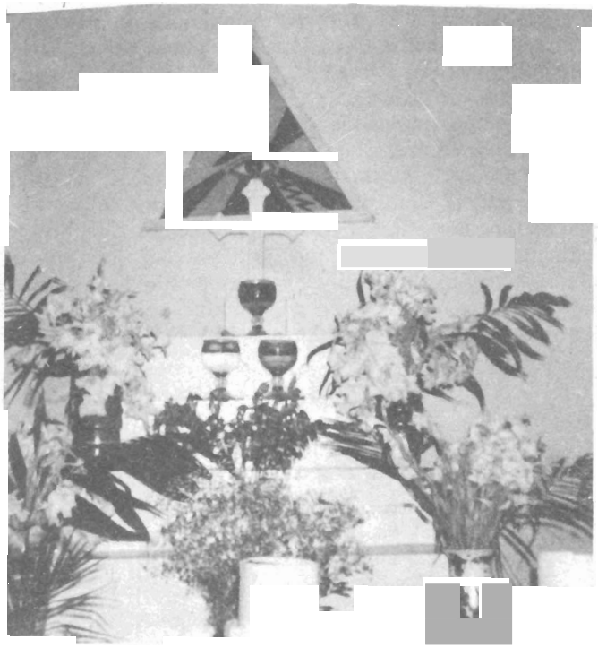
معها. والأقل تقدمًا تبحث عن نور يستطيع أحد ذوي القدرات المتطورة تقديمه لها. وهكذا يوجد باستمرار تبادل بين الكائنات الروحية والبشر.
ولكل كائن روحي، وفق حسيديم موريلوس، فرديته الخاصة، كما للبشر. لكننا جميعًا نتشارك الجوهر نفسه.
مذبح معبد «الحسيديم».
ملاحظة تحريرية: العيوب البيضاء والرمادية ظاهرة في صورة المصدر، وأُبقيت دون ترميم تخميني.
السلالة والعصر الثالث
المجلد الأول • صفحة ملف المصدر: 140 • الصفحة المطبوعة: 142
يحقق الأكثر تقدمًا اتصالًا أقرب وأكثر سلاسة بجوهرهم، ويكون الأقل تقدمًا بعيدين عن ذلك الاتصال. والطريق الحقيقي للتطور يقوم على الانفتاح لتحقيق اتصال حميم بالجوهر. وهذا بالضبط ما يحققه أكثر ذوي القدرات تقدمًا أثناء دروس الأحد.
تنحدر سلالة حسيديم موريلوس من مجموعة مكسيكيين تشكّلت في شوتشيميلكو في القرن التاسع عشر. أعلنت مجموعة شوتشيميلكو أن البشرية دخلت مرحلة جديدة من تطورها، سموها «العصر الثالث». واعتُبرت المكسيك مقر هذا التحول في الوعي، وسرعان ما بدأت مجموعات مشابهة لمجموعة شوتشيميلكو تتشكل في أنحاء البلاد.
واليوم توجد في أماكن مثل ياوتيبيك وبويبلا وكويرنافاكا ومدينة مكسيكو وغيرها كثيرًا مجموعات تشبه حسيديم موريلوس، تشكل شبكة حقيقية للتطور لا يلاحظها معظم المكسيكيين. وفي رأيي، تشكل هذه الشبكة المستترة واحدة من أكثر سلالات اختصاصيي علم النفس الأصلي في المكسيك إثارة للاهتمام.
الفصل التاسع
المجلد الأول • صفحة ملف المصدر: 141 • الصفحة المطبوعة: 143
دون فلورنسيو من موريلوس
صفحة بيضاء
المجلد الأول • صفحة ملف المصدر: 142 • الصفحة المطبوعة: غير مرقمة
توضيح تحريري: هذه الصفحة بيضاء في المصدر المرفق.
دون فلورنسيو من موريلوس
المجلد الأول • صفحة ملف المصدر: 143 • الصفحة المطبوعة: 145
دون فلورنسيو أحد أفراد مجموعة الفلاحين الذين يعيشون في موريلوس وكرّسوا أنفسهم، خلال السنوات الأخيرة، لتطوير سلسلة ممارسات تهدف إلى توسيع الوعي.
ودون فلورنسيو الآن حارس المجموعة، ووظيفته مراقبة ممارساتها لكيلا تفقد قوتها أو تنحرف.
سأحاول في هذا الفصل وصف العمل الذي يقوم به دون فلورنسيو والمجموعة التي ينتمي إليها.
السلالة
في أواخر القرن التاسع عشر بدأت في شوتشيميلكو سلالة جديدة من اختصاصيي علم النفس الأصلي. وكرست هذه السلالة نفسها لتطوير قدرة لدى أكثر أعضائها حساسية على الدخول في حالات وعي مغايرة، يختبرون فيها مستوى آخر من الواقع، ويتلقون رسائل ويتوصلون إلى فهم واضح لأحداث تاريخية وشخصية. وفي كل أحد، طوال أكثر من نصف قرن، كانت هذه السلالة تجتمع لتلقي ما يسمونه «دروسًا»، يقدمها
تنظيم الجماعة
المجلد الأول • صفحة ملف المصدر: 144 • الصفحة المطبوعة: 146
عضو مخضرم يدخل في غشية ويتلقى فيها سلسلة رسائل ينقلها بدوره إلى مستمعيه.
تنتمي مجموعة الفلاحين هذه إلى سلسلة جماعات تعمل في مدينة مكسيكو وياوتيبيك وتوتولابان وبلدات أخرى في ولاية موريلوس، ويبدو أنها تنحدر من المجموعة الأولى المذكورة.
وتنتظم مجموعة دون فلورنسيو بطريقة شديدة الشبه بالمجموعات الأخرى. تقود هذه التنظيمات هيئة ثلاثية تتكون من حارس ومرشد وشخص يسمى بيدرو.
وظيفة الحارس، كما ذكرنا، مراقبة ممارسات المجموعة؛ والمرشد يوجّه تطورها؛ وبيدرو يتولى الحفاظ على تماسكها.
وإلى جانب هذه الهيئة القيادية الثلاثية، يوجد من يُسمّون ذوي القدرات، ويعملون متلقين للرسائل وناقلين لها. ويتلقى هؤلاء تدريبًا يهيئهم لعمل الوساطة الروحية. وتُنقل الرسائل بخطب تسمى «دروسًا»، يقدمها ذوو القدرات أيام الأحد وهم في حالة غشية.
وتتكون المجموعات أيضًا ممن يسمون «الأعمدة»، المكلفين بمراقبة وصول رسائل ذوي القدرات إلى آذان منتبهة.
وفي حديثٍ نقلتُه عن دون فلورنسيو كما دار بيننا، يصف ما يختبره أحد ذوي القدرات حين يدخل الغشية التي يُلقي فيها درسًا. ويوجد هذا التفريغ في نهاية الفصل الحالي.
مفهوم الحياة وقبائل الكائنات
المجلد الأول • صفحة ملف المصدر: 145 • الصفحة المطبوعة: 147
مفهوم الحياة لدى دون فلورنسيو
وفق دون فلورنسيو، لا يوجد موت للكينونة. وحدهم الذين تصرفوا بصورة سلبية في حياتهم، وتسببوا بالأذى والألم، يموتون نهائيًا. أما البشر الطيبون الذين فعلوا الخير، فيعيشون إلى الأبد.
ووفق دون فلورنسيو، يوجد التناسخ، ومعنى الوجود هو تحقيق اتصال متزايد بالجوهر.
والجوهر، وفق سلالة دون فلورنسيو، يحضر إلى أحد ذوي القدرات المتطورة لإلقاء درس. ويكون الجوهر حقيقيًا حين تظهر تغيرات في الدروس المتعاقبة، ويكون زائفًا أو متجسدًا ماديًا عندما يتكرر الخطاب نفسه في الدروس. وهذه الأخيرة علامة ضعف تطور صاحب القدرة. والجوهر داخلي لا خارجي؛ أي إن ما يتعلمه صاحب القدرة خلال تطوره هو إقامة اتصال بنفسه.
يُسمّى تطوير صاحب القدرة انفصالًا. ويتعلم المرشح لأن يصبح من ذوي القدرات أن يفصل نفسه عن جسده أو يتجرد منه لكي يستطيع الاتصال بالجوهر، أو بكائن روحي يقع في مرتبة وسطى بين البشر العاديين والجوهر.
قبائل الكائنات الروحية
وفق دون فلورنسيو، لكل كائن روحي مستوى مختلف من الاتصال بالجوهر. وحين يتصل أحد ذوي القدرات بكائن روحي، يكون اتصاله بالجوهر على قدر اتصال ذلك الكائن به.
ويُسمّى دماغ صاحب القدرة «الجهاز»، ويُستخدم، وفق هذه السلالة من اختصاصيي علم النفس الأصلي، من أجل
القبائل والدروس
المجلد الأول • صفحة ملف المصدر: 146 • الصفحة المطبوعة: 148
إقامة اتصال خاص وانتقائي بكائن روحي معين أو بالجوهر.
يذكر دون فلورنسيو أسماء مثل بنيامين الغابة، والريشة الزرقاء، والجلد الأحمر، وغيرها، لتحديد قبيلة الكائنات الروحية التي اتصل بها ذوو القدرات في معبده.
وأسرّ إليّ اختصاصي علم النفس الأصلي هذا بأن تطوره استغرق عشر سنوات، وأن معلميه كانوا من ذوي القدرات في معابد مختلفة في مدينة مكسيكو وياوتيبيك وتوتولابان.
مر دون فلورنسيو في تعلمه بمراحل أو مستويات مختلفة. في البداية كان يعتقد أن الكائنات الروحية والجوهر خارجيان ومستقلان عنه. وهو الآن يعتقد أن الجوهر داخلي ويوجد في جميع مستويات تنظيم الإنسان، من خلاياه وأنسجته وأعضائه حتى شخصه بوصفه كلًا.
الدروس
يقدم دون فلورنسيو كل أحد درسًا لأفراد مجتمعه. يجتمع مرشد الجماعة وبيدرو في قاعة مغلقة، مع ذوي القدرات وسكان البلدة، ومعظمهم نساء. وتُوقد ثلاث شموع كبيرة أمام مذبح ذي سبع درجات، ويبدأ مرشد الجماعة الكلام. تؤطر كلماته زهور المذبح ولوحة عين تنبعث منها
الدخول في الدرس
المجلد الأول • صفحة ملف المصدر: 147 • الصفحة المطبوعة: 149
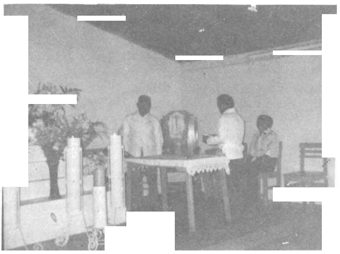
سبعة أشعة. ويدعو خطاب المرشد إلى الخشوع والصلاة والتأمل. يتحدث عن قدوم الجوهر ويهيئ الحارس للدخول في الغشية، ليتمكن في تلك الحالة من مخاطبة الجماعة.
وبعد دقائق عدة يقع الحارس، دون فلورنسيو، في نوع من الذهول تصحبه حركات جسدية خفيفة. يغمض عينيه ويشغل أكبر كرسي على المنصة. وعندما ينهي المرشد خطابه، يبدأ دون فلورنسيو خطابه.
أقدم فيما يلي التفريغ الحرفي لدرس ألقاه دون فلورنسيو يوم الأحد 8 ديسمبر 1985.
مرشد اختصاصيي علم النفس الأصلي يصلي عند انتهاء درس.
ملاحظة تحريرية: العيوب البيضاء والرمادية ظاهرة في صورة المصدر، وأُبقيت دون ترميم تخميني.
درس دون فلورنسيو
المجلد الأول • صفحة ملف المصدر: 148 • الصفحة المطبوعة: 150
درس دون فلورنسيو
السلام في الأرض للبشر ذوي الإرادة الطيبة. المجد لله في الأعالي. مولودًا في سلّم الكمال، وهو هناك بيننا، يا أيها الشعب الحبيب! يا أيتها القلوب المباركة التي اجتمعتِ في سر السلام هذا! وآتي في طلبك ممثلًا الأختام السبعة، والكنائس السبع التي غرسها رسول اليوم الثالث.
ها أنت أيها الشعب المبارك، الذي رأيته حقًا. لقد اجتمعتم في هذا السر المهيأ بردائي. الله، ممثلًا القبائل الاثنتي عشرة المتجسدة و«عديمة الأسنان» على كوكب الأرض هذا.
أرحب بك، ضع قدمك في هذا الخبز حيث سأمنحك درس السلام الذي لا يزال يخصك في هذه اللحظة. يا من جئتم لتكونوا قريبين مني، مرحبًا بك أيها الشعب منذ اللحظة التي هيأت فيها قدمك لرواق هذه العتبة المهيأة. أرحب بك أيها الشعب.
يا قلوبًا دُعيت كثيرًا، ويمكن أن تجد نفسها مهيأة في هذا الفجر المبارك، 8 ديسمبر 1985، حين آتي مرة أخرى بكلمتي السامية وصوتي الأقدس لأمنحك في فجر نعمة درسًا آخر، في تلك اللحظة التي سمعت فيها من كلمتي السامية درسًا مختلفًا. والآن آتي لأقدمه أمامك، أيتها القلوب المباركة التي اجتمعت منذ تلك اللحظة عند الاستيقاظ. صدى ذلك الجرس الرنان ليصل إلى قلوبي الأحبّاء؛ لقد مضى كثيرون من قبل، وأنت كنت دائمًا تستمتع في بيتي هذا، عبادة مباركة، حيث عرفت تعليمي الروحي.
حيث نشأت منذ بضعة أفجار، وفي الحقيقة لا تزال ذلك الطفل الصغير نفسه الذي تكونه في كل لحظة وفي كل آن، كي تأتي لتسمع كلمتي السامية.
توضيح تحريري: يصف المؤلف هذا المقطع بأنه تفريغ حرفي للكلام الشفهي. حُفظ تكراره وتحوله بين المفرد والجمع، والعبارات المضطربة فيه، كما نُطقت بحسب التفريغ. في صورة الأصل وردت desdentadas («عديمة الأسنان»). وقد يكون المقصود desencarnadas («غير المتجسدة») في مقابل «المتجسدة»، لكن المطبوع لا يحسم ذلك. وفي عبارة «ضع قدمك في هذا الخبز» وردت كلمة pan («خبز»)، ووجه الصورة غير واضح.
درس دون فلورنسيو — تتمة
المجلد الأول • صفحة ملف المصدر: 149 • الصفحة المطبوعة: 151
من كلمتي المقدسة، ومن فضائلي وعجائبي التي آتي لأسكبها على كل واحد منكم، في ذلك الجهاز الإلكتروني الذي يصهر حكمتك الخاصة.
ما أشد عدم اليقين، إن كنت أقول لك الحق أيها الشعب: لقد سمعتم كلمتي، لكنكم لم تقدّروا ما آتي لأعلمك إياه في الروح. لأن سنوات كثيرة قد مرت، وقليلة هي القلوب التي كافحت حقًا وتهيّأت «بلا قَدَم». [ملاحظة المترجم: في المطبوع sin planta، أي «بلا قدم» في سياق تكرار ذكر موطئ القدم. لا يتضح المراد من العبارة.] هيأت جسدها الجسماني لكي تقبل مرة أخرى تعليمي وجوهري الذي آتي لأمنحك إياه؛ ذلك النور الإلهي الذي يأتي منك أنت، تلك الكنيسة، ذلك المعبد الذي هو أنت، أيتها القلوب المباركة، والذي عليك أن تقدره فجرًا بعد فجر، وأن تثمّنه كجوهرة توجد على هذا المستوى الأرضي، وأنت نفسك هي أيها القلب الحبيب. أنت نفسه الذي نتطور بواسطة جهاز يجعلك تعرف ويجعلك تشعر، أيتها القلوب الحبيبة، لكنك لم تستطع فعله قط. ها درسي المهيأ يستمر في ذاته من أجلك.
في تلك اللحظة كان مع رجل يدعى إبراهيم، أمكن أن يكون صديقًا صادقًا وفيًا للجوهر الكامل. كيف نعثر على ذلك الجوهر؟ قد يكون في الفضاء، على المستوى الأرضي حيث تسكن أيها الشعب، في الريح، في ضجيج ركنين أو أكثر من الأرض. وذلك الجوهر الذي يجعلك حقًا تشعر وتتلمس نفسك، ويجعلك تصل إلى أماكن جميلة جدًا، ويعرّفك فهمك الخاص في كل ما لدى الآخرين على الأرض؛ والجوهر الذي آتي لأسكبه فيك أنت، وأنت نفسك هو، الذي ينبغي أن يشعر في خلية عقلك نفسها. ذلك الرجل في تلك اللحظة، منهكًا بالسنوات، قرنًا من السنوات، ويفكر في عقله أنه ليس وحده على كوكب الأرض.
مرت الأيام بعد قرن، واستطاع ذلك الرجل في حلم أن يرى، سامعًا ومتلمسًا من خلال
درس دون فلورنسيو — إبراهيم
المجلد الأول • صفحة ملف المصدر: 150 • الصفحة المطبوعة: 152
حلمه، أنه سيكون له ابن، وأن عليه أن ينتشر في أراضي قانا.
لكن الوقت مضى، وكانت زوجة ذلك الرجل في التسعين، ولم يكن ممكنًا أن تحمل ابنًا؛ لكن من مثل عقل الإنسان؟
كان يعرف أنه في أي لحظة، باعتباره الجوهر الكامل نفسه والحكمة السامية لعقل قوي، جاءت اللحظة التي أمكن فيها مرة أخرى أن يُرى ابن قد حُبل به في أحشاء تلك العجوز وذلك الرجل العجوز الذي تجاوز قرنًا من السنين. وإذ كان يفكر في الجوهر الكامل السامي، وفي التعليم الذي كان هو يفهمه ويدخله في عقله، كان واثقًا جدًا بأن ما أنبأته به أحلامه قد تأكد بواسطة جوهر، بواسطة حكمة. ثم حانت اللحظة لذلك الرجل، وعرف أنه أصبح لديه الآن ابن، عليه أن يراه يزدهر في أراضي قانا.
ما الازدهار الذي سيكون لتلك الأراضي الغريبة؟ ابنه نفسه الذي كان لديه، والذي يمكن أن ينتشر خلال سنوات كثيرة في تلك الأراضي الخالية، في تلك الأراضي التي لم يكن فيها من يعملها ليُزهر المستوى الأرضي.
مرت سنوات ذلك الغلام الذي بدأ يصير رجلًا، وعندئذ ذلك الصديق للجوهر الكامل، الذي يمكنك أن تسميه إلهك وربك.
الله يهوه، الذي لا تعرفه أيها الشعب المبارك. الجوهر الكامل الذي لا يستطيع أحد منا أن يعاين أين يوجد، غير عارف ما هي الممارسة والحكمة التي يوجد بها فيك الجوهر نفسه، والنور الكامل الذي ينسكب في خلية كل واحد منكم. كان في العقل الحكيم الذي يقود كل جسد جسماني منا على هذا المستوى.
وإذا كان ذلك الرجل قد رأى حلمًا آخر، وكانت حكمته نفسها تدرك بواسطة
درس دون فلورنسيو — الحكمة والطبيعة
المجلد الأول • صفحة ملف المصدر: 151 • الصفحة المطبوعة: 153
أحلامه أن عليه أن يقدم قربانًا محرقة للجوهر الكامل، ليبرهن أن حكمته كاملة وقائمة فيه، وأن ذلك الجوهر موجود، وإن كان يشعر به في كل لحظة. كان يختبر في نفسه هل يثق بحكمة عقله نفسها؛ ذلك الصغير الذي يحضره بوصفه غلامًا ليضحي به ويقدمه ذبيحة لإلهه وربه، الذي هو الجوهر نفسه المنصهر في حكمته. وقد اختُبر من يمكن أن يكون ذلك الغلام.
الأجساد نفسها التي تجتمع في كل قاعة، وفي كل بيت، عبادة مباركة، حيث تأتي اجتماعات الأرواح المتجسدة وجماعاتها وتقترب لتتأمل خمس دقائق في أمور الصلاة المباركة؛ حيث تريد أن تصل عقلها بالحكمة العظيمة التي ترغب فيها كي يستطيع إنسان المستوى الأرضي بلوغ آفاق جديدة، وحيث سيجد الإنسان أمورًا عظيمة في المستقبل، لأن المستوى الأرضي مغطى بكتل مادية عظيمة. وفي طبيعة الأرض توجد أشياء كثيرة مباركة ومقدسة بذاتها. وفي أحشاء الأرض تستطيعون أن تتأملوا أشياء ومعادن عظيمة، أيتها القلوب المباركة. وفي كل موضع من الأرض تختلف مواضع أحشاء الأرض. لماذا تختلف؟ لأن المعادن نفسها لا توجد في كل الأماكن، والتي يعثر عليها مرة أخرى كبار علماء الأرض، وهم الإنسان الأكثر تقدمًا الذي يمضي إلى ما وراء ذلك. وأنت، لماذا أيتها القلوب المباركة، لا تستطيع أن تتقدم أكثر في قضيتي الإلهية، التي هي قضيتك أيضًا، وتنصهر فيك تلك القضية، ذلك الجوهر الذي يمكن أن يكون قريبًا منك بواسطة حكمتك، كي تستطيع إدراك أشياء مقدسة وأشياء مهمة ليعرفها إنسان الأرض؟ ولماذا لا تستطيع فعله، أيتها القلوب المباركة، إذا كنت إنسانًا
درس دون فلورنسيو — الصورة والجوهر
المجلد الأول • صفحة ملف المصدر: 152 • الصفحة المطبوعة: 154
أيضًا، يستطيع الحكم على أشياء غريبة تتعلق بأخيه ونظيره؟
تمضي الأمور، وقد حكم ذلك الرجل حقًا بأنه إذا كان إنسان الأرض نفسه قويًا، فهو الجوهر نفسه والنور الكامل الذي ينسكب بواسطة إله غير مرئي، بواسطة إله يوجد في باطن قلبك نفسه.
أيها الشعب المبارك، لا تظنوا أيتها القلوب الحبيبة أن الصورة هي الله، وأن التمثال هو الله الذي يشكّل كل أماكن الكون بأسره؛ لا أيها الشعب الحبيب. ذلك تمثال، وصور يُشكّلونها مثلك أنت الذي يمكن أن توجد صورتك بواسطة جهاز يصوغها، ليخبر البشرية غدًا أنك كافحت وعملت خلال زمن أمكنك معرفته.
سليمة وكاملة ونقية كالقديسين؛ وهذه إحدى كلماتي التي آتي لأعلمك إياها في فجر مضى. في تلك اللحظة من يوم الأول من ديسمبر، التي استطعت أن تراها وتتأملها، حيث أمكنني أن أمنحكم أيتها القلوب المباركة عجائب عظيمة تستطيع اكتشافها بنفسك مستقبلًا، وحيث استطعت أن أسألك كيف يتطور إنسان الأرض عبر الأزمنة، خلال مراحل مختلفة، كما استطعت حقًا في تلك اللحظة أن أسألك عن الممالك العظيمة.
كيف ينتهي كل شيء، وكيف كانت حقًا حياة يسوع المسيح في ذلك الزمان، الذي سمعت الحديث عنه من خلال علماء الكتاب المقدس ومن خلال العقيدة الرومانية؛ وتدرك ولادة يسوع الذي يُسمّى الناصري. هل جاء يسوع ليولد رجلًا يهاجم بشرية هذا العالم؟ لا أيتها القلوب المباركة، لأنه جاء في الحقيقة ليؤكد أنه كان الملك في ذلك الزمن، لأنه كان يطرح عليك أسئلة وخلاصات لم تكن تعرف جوابها.
درس دون فلورنسيو — المسؤولية الداخلية
المجلد الأول • صفحة ملف المصدر: 153 • الصفحة المطبوعة: 155
وفي النهاية مات وسفك دمه، ومن هناك انتهى كونه ملكًا للمستوى الأرضي. هل أنت على حق أيها الشعب أم لست على حق؟ لأنني أستطيع أن أقول لك، أيتها القلوب المباركة، إن جوهر ملك قائم الآن فيك أنت. أيتها القلوب المباركة، لأنك أنت الملك نفسه الذي يتشكل بإرادتك الحرة. تستطيع أن تقفز سور سجن قد تجد نفسك فيه، وأن تستمتع بنفسك في كل مواضع الأرض.
فمن هو الملك إذن أيها الشعب، أيتها القلوب المباركة؟ هل الإله الذي تحدثت عنه في ذلك الزمن هو الملك فيك، يأتي ليأمرك بوصفه سلطة عظيمة في هذا العالم؟ لا أيتها القلوب المباركة، لا أيها الشعب؛ لا تدع أولئك الرجال يخدعونك، الذين لقّنوا البشرية حقًا زمنًا قصيرًا. لكن كل شيء يمضي، وكل شيء سيضع السلام في قلوبهم.
والآن في حكمتك الخاصة، وفي معرفتك وفهمك، يوجد لمعرفتك روح قدس ينصهر في عقلك نفسه، وأنت الملك نفسه الذي يمكن أن يكون في هذا العالم، لأن كل شيء يعتمد عليك أيها القلب الحبيب. لأنني أستطيع أن أقول لك إن فيك كل ما تستطيع فعله في العالم، لكي تنسحب إلى طريق كثير الحجارة، ولكي يتأذى قلبك بواسطة «إسبيرو» ومثقاب، ولكي يتطهر قلبك ويشفى. وأنت حر أيضًا لكي تكون نفسك، وفي إلهك وربك الذي هو فيك، في باطن قلبك نفسه. كان هذا أحد تعاليمي لهذا اليوم. وقد قدمت الآن سطرًا أبعد مما كان عليك أن تسمعه أيها الشعب في ذلك اليوم الأول، والآن آتي لأقدم لك درسًا آخر. وهو ما قدمته لك في فجر النعمة المبارك هذا، يوم 8 ديسمبر 1985؛ وقد أعطيت مرة أخرى بنسبة ما، وتلقيت قليلًا، أيتها القلوب التي أخطأت حقًا في حق
توضيح تحريري: لفظ «espiro» في التفريغ الإسباني غير واضح الدلالة في هذا السياق؛ أُبقي منقولًا صوتيًا دون إكمال معنى مفترض له.
درس دون فلورنسيو — الصفح والمرشد
المجلد الأول • صفحة ملف المصدر: 154 • الصفحة المطبوعة: 156
أخيك ونظيرك، وارتكبت حقًا أخطاء جسيمة في فهمك نفسه. أنا أغفرها لك. لماذا أغفرها لك؟ لأنني آتي لأعلمك أمورًا مباركة ومقدسة، وفيك أنت يوجد الصفح؛ وفيك أنت، بواسطة فهمك، تكون مغفورًا لك بنفسك. لأنك أنت الذي ستكافح وتعمل لكيلا تكون الحمولة التي تحملها عند أسفل المنحدر ثقيلة إلى هذا الحد، لتصل إلى ذلك الأفق الجديد حين يبزغ نجم مضيء يقودك إلى مكان أكثر قداسة، لتكون عن يمين الذكاء والحكمة العظيمين اللذين تقودهما في حكمتك، كي يوجد كذلك تطور جديد وقيامة جديدة لروحك. هو سيكون المستقبل، وأنت ستكون ذاك الذي كان حقًا إنسان الأرض مثل بندول.
هذه إحدى كلماتي التي آتي لأقدمها لك حكمةً وجوهرًا عظيمًا وكاملًا، من أعالي أكوان كوكب تستطيع أن تجد فيه نفسك باسم الآب والابن والروح القدس.
ماذا أعددت يا مرشد الجموع؟
يتكلم المرشد: نشعر بأننا مملوؤون بالمحبة وبالثقة عندما نتلقى تعليمك يا أبتِ. إنها مدرسة نأتي إليها لنتعلم الخطوات الأولى. نشكرك يا رب على منح حضورك للحاضرين يا رب، شكرًا بلا نهاية.
يجيب الحارس: الشكر الذي تقدمه لله، الذي يأتي حقًا ليمنحك حكمة وتعليمًا، وينصهر فيك أنت بواسطة الثقة والإيمان الموجودين في باطن قلبك، معبد باطن قلبك. أنت نفسك الذي تشكر الله والرب الذي ينفث في معرفتك وحكمتك، وقد كان يقول حقًا: شكرًا.
أنا الإنسان أحب، منذ هذه اللحظة، هيئة نصف
درس دون فلورنسيو — الطبيعة والعناصر
المجلد الأول • صفحة ملف المصدر: 155 • الصفحة المطبوعة: 157
القمر، لكي يمكن مرة أخرى أن يُشعَر به ويُسكب فيهم؛ وهو الجوهر الذي يأتي ليمنحكم، وتعتقد للحظات أنك تمضي إلى الكفاح من أجل تطورك نفسه. وفي هذه اللحظة قدمتُ أيها الشعب، وقدمتُ أيتها القلوب التي تسمعني الآن، والتي تستطيع بنفسك أن تبذل تضحية عظيمة للمستقبل، وأن تمنح نفسك الاهتمام لبلوغ حكمة كوكب الأرض هذا. لكي تعرف طبيعتك الخاصة، وكيف انصهرت في فهمك، في الجوهر الذي ينسكب عليك، وأنت نفسك الذي تستطيع أن تكون قريبًا من فهم جوهر كامل.
أقول لك أيها الشعب في هذه اللحظة: طوبى للقلة من القلوب التي اجتمعت في بيتي هذا، صلاة مباركة، حيث أستطيع جمعك لأكون قريبًا منك. وفي هذه اللحظة أهيئ جبالًا عالية وطرقًا منخفضة، وكل أماكن الأرض حيث نشأت الطبيعة نفسها وانصهرت في «بوستوليس» عظيمة.
أهيئ وأبارك السجن والمعتقلات وكل أماكن الأرض باعتبارها قاعات للمعرفة لتلك الخليقة الصغيرة، التي أُنير لها الطريق؛ وأغذي حكمتك العظيمة في جوهري الكامل. كهوف الظلام، أماكن الأرض التي انصهر فيها الروح الشرير نفسه في المرأة والرجل على المستوى الأرضي كله.
أهيئ الإنسان الحاكم في الكون بأسره، لكي مرة أخرى عناصري التي كنت أهيئها عبر السنوات.
عناصري هي وتقوم في جوهر الطبيعة نفسها، العناصر التي تتهيأ حقًا أكثر فأكثر، لكي يسمع الإنسان الذي استمتع من دون أن يتأمل خمس دقائق حركات العناصر البعيدة ويتأملها، وهي تستعد؛ آفات تتهيّأ كما في ذلك
توضيح تحريري: لفظ «postules» في التفريغ غير واضح الدلالة؛ حُفظ بصيغة صوتية بدل تعيين معنى غير مؤكّد.
نهاية الدرس ومفهوم الواقع
المجلد الأول • صفحة ملف المصدر: 156 • الصفحة المطبوعة: 158
الزمن، وتتهيأ ليراها إنسان الأرض على هذا المستوى الأرضي، وكيف ستأتي حقًا لحظة تستطيع فيها جرادة أن تأكل إنسان الأرض؛ العناصر التي ستظهر حقًا عبر الزمن.
لأن الأنانية والحسد وذلك الاستعلاء الموجود على المستوى الأرضي ستتحقق حرفيًا. لأنه مكتوب حقًا بحكمة عظيمة للجوهر الذي ينصهر في عقل إنسان؛ لكن ها إن عقلك نفسه يستطيع أن يُخضع ويؤسس، بمجرد التأمل خمس دقائق ومعاينة أنك تستطيع السيطرة على أي عنصر بعقلك نفسه.
أهيئ الجميع بالتساوي، من الأكبر إلى الأصغر، وأهيئ بيدي القوية الابن والروح القدس. لقد تمّ الأمر أيتها القلوب، لأنكم تهيأتم للوصول إلى هذه العتبة حيث تتهيأ قدمك وتُقاد إلى أبعد أركان هذا المستوى الأرضي؛ وأنت نفسك أيضًا من يستطيع أن يبلغ ما وراءه. هذا أحد تعاليمي التي آتي لأقدمها لك.
(نهاية التفريغ.)
مفهوم الواقع لدى دون فلورنسيو
كما ذكرت، يتمسك دون فلورنسيو بفكرة وجود كائنات واعية، روحية، في بُعد آخر، يمكن التواصل معها بعد الخضوع لتدريب مناسب. يُسمى هذا التدريب تطويرًا، ويحفز القدرة على الانفصال أو الفصل بين الجسد و«الروح».
وراء الكائنات الروحية، وما يسند الأرواح، يوجد ما تسميه سلالة دون فلورنسيو «الجوهر». وهو مشترك بين جميع الكائنات التي
حوار مع دون فلورنسيو
المجلد الأول • صفحة ملف المصدر: 157 • الصفحة المطبوعة: 159
تختلف بعضها عن بعض بحسب قربها من ذلك الجوهر أو بعدها عنه.
وفي تصور اختصاصي علم النفس الأصلي هذا، لا يستلزم الموت الجسدي بالضرورة موت الروح. فهي تبقى وتتجسد من جديد في جسم آخر ودماغ آخر يسميه دون فلورنسيو «الجهاز». ويعتمد بقاء الروح على أعمالها.
فُرغت بعض تعليقات دون فلورنسيو نفسه من تسجيل أجراه بصحبة المؤلف، وأعيدها فيما يلي:
— دون فلورنسيو، هل تعملون في المعبد؟
— نعم.
— ومتى تكونون في المعبد؟
— غدًا دوري في العمل، غدًا الأحد.
— وهل تلقي أنت درسًا؟
— نعم، أنا.
— في أي ساعة؟
— في العاشرة صباحًا، أو في العاشرة والنصف على أبعد تقدير. ويوم الثلاثاء أعمال الشفاء.
— يوم الثلاثاء تعالجون؟ وهل تقوم أنت أيضًا بأعمال الشفاء؟
— الأربعاء موعظة تُقدَّم في الأربعاء الأول من كل شهر. تُقدَّم موعظة، أي إن العلم الروحي يصل إلى الموعظة، إلى البشرية التي تستمع. لكن هذه الموعظة لتنوير الناس.
— لكن ما الفرق بين الدرس والموعظة؟
— آه نعم! الأمر مختلف جدًا. من يقدم الموعظة كائن روحي، مثل كاستور، الجلد الأحمر، الريشة الزرقاء.
— هل ما زال الريشة الزرقاء موجودًا؟
— نعم بالطبع، كيف لا! يوجد بنيامين الغابة، وقبائل أخرى. والآن اكتشفنا العمالقة.
— عمالقة؟
العمالقة وبداية الغشية
المجلد الأول • صفحة ملف المصدر: 158 • الصفحة المطبوعة: 160
— نعم! ألم تعرف ذلك؟ نعم، لأن العمالقة كانوا مسيطرين في زمن نوح، وقد اكتشفنا أن العمالقة ألحقوا بالبشرية أذى كبيرًا. كانوا رجالًا كبارًا جدًا، أكثر من مترين، وشديدي القوة، وكانوا يهددون قصار القامة كثيرًا. ويخبرنا التاريخ، العهد القديم، أن نوحًا بدأ يحدثهم عن الطوفان، وجاء الطوفان وهلكوا جميعًا. لكنهم قبل ذلك أخضعوا شخصًا يدعى داود.
— لا! جليات.
— نعم، جليات. داود هو الذي قتله. ولم نكن قد اكتشفنا هذا، وكان هناك كائن روحي، كاستور، هو الذي اكتشفه.
— لكن هل لا يزال أولئك العمالقة موجودين؟
— لا، لم يعودوا موجودين، لكننا نبحث في سيطرة أولئك العمالقة في ذلك الزمن. بحثنا بواسطة الكائنات الروحية وبواسطة البردي.
— البردي؟
— نعم، البردي، أي الصحيفة.
— آه، يتطابق مع ما تقوله الكائنات الروحية.
— بالضبط.
— اسمع، قل لي شيئًا. ماذا تشعر حين يأتيك كائن روحي، حين تلقي درسًا؟
— نعم نعم، لنتحدث عن ذلك، أود أن تعرف. أنا حين أذهب للعمل لا آكل شيئًا، سوى قهوة وخبز صباحًا وقت الإفطار. ثم أذهب للعمل، وعندما أصل يجب ألا أهتم بأي أمور مادية. أصل وأجلس قليلًا، وحين يحين الوقت أذهب إلى الموضع. عندما أصل هناك أبدأ بالتأمل، وأثناء التأمل يبدأ عقلي يصفو ولا أعود أتذكر شيئًا، يذهب كل شيء، ولا أعود أفكر في شيء. يوجد الآن شيء مادي، ويأتيني عقل لا أعرف من أين. ثم حين يبدأ بالظهور الذي سيقوم بالظهور والصلاة، يكون
الأضواء وفقدان التذكر
المجلد الأول • صفحة ملف المصدر: 159 • الصفحة المطبوعة: 161
الأمر كأن كلمة تأتي وتعطي عقلي ما سأقوله. لكن هذا يمضي، ثم أشعر بشيء يأتي ويستقر في عقلي، وأشعر بالنعاس. يبدأ ذلك النعاس يسيطر عليّ، وما عليّ فعله هو أن أتهيأ جيدًا، ثم أبدأ. فجأة يذهب عقلي، وتشعر بمن هو وكأن شيئًا يرفعك. وتبقى على ارتفاع نحو متر ونصف، ثم يأتي شيء، وتأتي أضواء هنا وهناك.
— أضواء ملونة؟
— لا، بيضاء. ثم أشعر وكأنها تنفذ فيّ. لا يزال يصل شيء مما يقوله الناس. تصور أنهم يتحدثون على بعد نحو مئة متر؛ يُسمَع صوت خافت، لكنك قد ذهبت، ويبقى المرء كتمثال. وكأن مذياعًا يقول: قل هذا، وقل ذاك. هذا ما ستتحدث به. وحين يكون الآخر قد وصل إلى صلاته، تكون أنت قد ركزت. تصور أنك صرت مركزًا بالفعل.
— لكن هل تشعر بنفسك؟
— لا، لم يعد ذلك. تشعر بأنك جهاز يرسل.
— لكن هل تتذكر ما تقوله؟
— لا، لا شيء.
— لا تتذكر شيئًا حين تخرج من ذلك؟ لا تتذكر شيئًا؟
— لا، لا شيء. لا تعرف شيئًا، وتبقى كأنك سكران، مشوشًا. لا تعرف شيئًا: ماذا كان الدرس، لا تعرف شيئًا. لا تتذكر إلا أنك كنت تعمل ساعتين أو ثلاثًا، كنت نائمًا. ثم يخبرك الناس ما كان الدرس، وعما تحدث، وما التعليم الذي قُدم.
— وأنت حين تكون نائمًا، إلى أين تذهب؟
— لا، لا تشعر بشيء، لا يشعر المرء بنفسه. تصور أنك تغفو، فلا تعرف موضوع الدرس. وهذا غريب لأنهم
الجهاز وتكرار الدروس
المجلد الأول • صفحة ملف المصدر: 160 • الصفحة المطبوعة: 162
يسألونك: قلتَ هذا، لكنني لا أعرف. وهناك من لا يصدق، ويعتقد أنك تعرف ما قلته. ثم يسألك الجميع وأنت لا تعرف. وبعد ذلك تمر بحالة قد تستغرق نصف ساعة؛ هذا ما رأيته بمراقبة الساعة.
— من الذي يتصل بك؟ هل هو نفسه دائمًا؟
— لا، إنهم مختلفون.
— يتغير في كل مرة تلقي فيها درسًا؟
— نعم. سأزيل شكك. أتعرف لماذا؟ لأنني رأيت من نسمّيهم كهنةً يقومون بدور «الجهاز».
— ما الأجهزة؟ العقل؟
— العقل هو جهازنا. مثلًا، لست أنا الذي سيعمل، بل آخر هو الذي سيعمل. وقد رأيت بعض هؤلاء «الأجهزة» يكررون الدروس نفسها في كل مرة.
— ويكون الدرس مطابقًا تمامًا؟
— مطابقًا تمامًا. مثلًا، في الأحد الأول يقدم درسًا برسالة، وفي التالي يقدم الدرس نفسه مجددًا، وفي الأحد الثالث يقدمه مجددًا. فهذا الجهاز، بالنسبة إليّ وبحسب مدى قدرتي، أعتقد أنه تعلم بالمادية. أتعرف ما المادية؟
— نعم.
— أي كأنه حفظ خطابًا. فيعرفه ويظل يكرره دائمًا. وهذا يعني أن الجهاز لا يتغير. والآن سأقول لك شيئًا، هذه إبرة خضراء. أريدكم أن تعرفوا ذلك. لكي تكونوا أكثر اطلاعًا، عندما ذهبت لأتخرج في مكسيكو، في المركز الأم لكل العقيدة، كما نسميها.
— أين هو؟
— نبتونو رقم 22، في حي غيريرو. حسنًا، ذهبت لأتخرج هناك. أمضيت عشر سنوات في التدريب.
— في مكسيكو؟
توضيح تحريري: عبارة «إبرة خضراء» منقولة كما وردت في الحوار الإسباني، ودلالتها المقصودة غير واضحة.
التدريب والتكريس
المجلد الأول • صفحة ملف المصدر: 161 • الصفحة المطبوعة: 163
— أحيانًا هناك في مكسيكو، وأحيانًا هنا. عندما تخرجت لم أكن أريد الذهاب أصلًا، كنت خائفًا. كانوا يختبرونني، وكنت أفكر: «سيقولون إنني لا أصلح».
— أتعرف؟ أشعر بأن هناك كائنًا هنا.
— نعم، نعم يوجد.
— لكنه قوي جدًا.
— نعم، نعم، بالطبع. كنت أفكر هكذا، وفي المرة الأولى لم أرد الذهاب. لأن هناك كثيرين من ذوي القدرات المهيئين جيدًا. إنه المركز الأم، مدرسة حقيقية، أي جامعة، وفيه عاملون كثيرون، ولم أكن أريد الذهاب. مرت ثلاثة أشهر وألحّوا عليّ مجددًا ولم أرد الذهاب. شعرت أنني لن أصيب. لكن قبل ذلك ذهبت يومًا للعمل، وجاء أخ وقال لي: «انظر، جئت لأراك». كان الطبيب مديرًا، وتحت مسؤوليته 23 طبيبًا، وكان اسمه الدكتور غوستافو ديلغادو، في باخا كاليفورنيا. وجاء ذات يوم طالب مريض. اجتمع الأطباء ولم يصيبوا، فأصبت أنا.
— ماذا يعني «أصبت»؟
— أصبت التشخيص؛ عرفنا ما لدى الطالب. كان جزء من عموده الفقري متشققًا، مجرد تشقق. حددنا الضرر لدى ذلك الفتى. فأمر الطبيب فورًا بإجراء العملية. وعندما عدت بعد عشرين يومًا، كان الفتى قد عاد إلى الجامعة وصار سليمًا. هناك زال عني الخوف وقلت: إذن الآن أشعر بأنني قادر. وبعد عشرة أو اثني عشر يومًا قالوا لي: «نريدك أن تذهب الآن للتكريس». فقلت: نعم، يبدو أنني الآن مستعد. وقلت للشبان: إن لم أصب، وإن لم أستطع حل الاختبارات، فسأنسحب. لكنني استطعت؛ نقلوني إلى رؤى عليا واجتزتها.
— كيف رؤى عليا؟
— حين يكون هناك درس، وتكون جالسًا هناك ترى التطور كله. وكأنك تشاهد
التخرج واستمرار التطوير
المجلد الأول • صفحة ملف المصدر: 162 • الصفحة المطبوعة: 164
تلفازًا. وقد أعطيت مفتاح كل ما قدمه الجوهر.
— أي إنك اتصلت بالجوهر.
— نعم، أعطيت المفتاح وكل شيء. ثم دعاني المعلم وقال: «أنت الآن جيد جدًا؛ حان وقت تكريسك». ثم سلمني شهادتي. «من هنا يجب أن تكون مهيأ لتقديم جوهر الجواهر». وهكذا كنت، حتى السنوات العشر.
— هل تركت إعدادك في أي وقت من تلك السنوات العشر؟
— لا. منذ تلك المرة واصلت وواصلت، كما لو كنت أذهب إلى المدرسة. وعندما لم يكن ذوو القدرات يأتون إليّ، كنت أذهب إلى ياوتيبيك.
— وكيف ترى السيد كامبوس هنا؟
— إنه متأخر جدًا جدًا. لا ينبغي لمن يمارس هذه الممارسات أن يشرب، وهو يشرب كثيرًا. هناك أشخاص، وهناك امرأتان تعرفان بعض الشيء، لكن عندما لا تستطيعان شفاء الناس ترسلانهم إليّ. وقد مررت بأزمة شديدة لأنهم يأتون بلا قوة.
— لكنك تنتمي إلى المعبد.
— هذا مهدي.
— والأشخاص الذين كانوا يتطورون، مثل ابنة دون راميرو؟
— لا، هي لم تعد. لا يزالون مستمرين، لكن هؤلاء يذهبون بلا تقدير للموهبة. ولأنهم لا يثقون، لا يستطيعون البلوغ. هناك نحو خمس نساء اختبرن «الانفصال عن الجسد»، لكنهن لا يواظبن على الحضور، فلا يبلغن ما يسعين إليه.
— تقصد «الانفصال عن الجسد»؟ أي إن الكائن دخل فيهن بالفعل؟
— نعم، كائن متطور، ثم إذا توقفت عن الذهاب شهرًا…
— وفي أي أيام يحدث هذا؟
— الاثنين والأربعاء.
— وهل أنت تطورهن؟
— بدأت بالفعل. يُعطين بعض التدليك لكي يكنّ
الحامي والجوهر
المجلد الأول • صفحة ملف المصدر: 163 • الصفحة المطبوعة: 165
مسترخيات عندما يأتي التيار. ومع التطور الثمين جدًا، ويُوجَّه بواسطة جهاز صغير، يكون ذلك حين تكون قد اتصلت.
— أتعرف ما حدث لي لتوي؟ كنت أشعر بكائن قوي جدًا. دخل فيّ!
— نعم، رأيته.
— رأيته؟ أنت تعرف مَن كان. إنه حاميك.
— ربما. لكن إن لم يكن، فهو حامٍ يحميك دائمًا.
— وهل تعرف من هو؟
— حسنًا، إلى حد ما. بالنسبة إليّ، الكائن الذي يحميك هو ماكاسيواتل.
— ماكاسيواتل؟
— إنه ماكاسيواتل (Macazchuatl)، كائن ذكي جدًا وطيب جدًا.
— ومن أين هو؟
— حسنًا، لنواصل.
— ما الذي تسميه الجوهر؟
— الجوهر بالنسبة إلينا، نقول إنه كائن، إله لا نعرفه.
— لكنه كائن، أم وعي محض؟
— حسنًا، نحن نقول إنه كائن، لكننا لا نعرفه؛ إلا أننا نشعر بأنه يصل إلينا، وهو ما يحمينا.
— لكن هل هو الجوهر نفسه دائمًا؟
— حسنًا، الجوهر نفسه، لكن الصيغ مختلفة، وهذا ما كنا نتحدث عنه قبل قليل. حين يظلّ «الجهاز» يقدّم الكلام نفسه، فهو يفتقر إلى الفطنة.
— ماذا، هل هناك فرض؟
— بالضبط، أصبتَ جوهر المسألة. لكن عندما يكون الجهاز يقدم، يكون كل درس مختلفًا.
— اسمع، تلك المعابد الموجودة في ياوتيبيك وتيكولابان ومدينة مكسيكو، هل لها التنظيم نفسه؟ هل يوجد بيدرو ومرشد وحارس؟ كيف يكون ذلك؟
ملاحظة تحريرية مضافة في التدقيق: يرد اسم المكان هنا بصيغة Tecolapan (تيكولابان)، بينما يرد في الصفحتين 144 و146 بصيغة Totolapan (توتولابان). أُبقي اختلاف كتابة الاسم في المصدر.
المرشد والحارس والأعمدة
المجلد الأول • صفحة ملف المصدر: 164 • الصفحة المطبوعة: 166
— حسنًا، المرشد، لنقل إننا ثلاثة.
— يوجد ثلاثة مرشدين؟
— لا، واحد مرشد، وآخر بيدرو، وواحد حارس. ثم ننشئ مكانًا نجري فيه تأملًا، وهو تلك الصلاة؛ يحدث ارتقاء. ثم يأتي الآخرون، ذوو القدرات الذين يبدؤون التطور. هؤلاء هم ذوو القدرات.
— الذين يتلقون الجوهر.
— بالضبط.
— لكن من هو المرشد؟ هل هو من يطوّر؟
— المرشد هو الذي سيطوّرهم، وهو الذي يوجّههم وينظم، والذي يفعل كل شيء للمستقبل.
— وماذا يفعل الحارس؟
— الحارس أحد الأسس الرئيسية. إنه من يحرص على أن يسير كل شيء جيدًا داخل القاعة.
— وأنت الحارس؟ تحرص على أن يسير كل شيء جيدًا؟
— عليّ أن أرى إن كان أحد يأتي ويريد التطور ويتطور بصورة خاطئة؛ عندئذ أقول كيف ينبغي أن يتطور. ولهذا أنا الحارس. فقد اكتسبتُ هذه القدرة بما واظبتُ عليه من تدريب وعمل. ولهذا أنا الحارس.
— ثم يأتي ذوو القدرات؟
— ثم يأتي ذوو القدرات والأعمدة.
— من هم الأعمدة؟
— الأعمدة هم الذين يذهبون ويجيئون في الوسط لكيلا ينام الناس. عندما ينام الناس، يكون الشيطان يلاطف الشخص؛ الشيطان لا يريدنا أن نسمع كلمات الله. الشيطان هو تحديدًا من تحول إلى العمالقة. وفقًا لنا هذه هي المعرفة. نعتقد ذلك لأنه عندما توجد أمور طيبة، يأتي أحد ويفسدها. هذا هو الشيطان نفسه. مثلًا، يدخل شيء في روح الرفيق أحيانًا، فيبحث كالمجنون، وتكون لديه أفكار سيئة ومزاج سيئ. هذا هو الشيطان نفسه. والشخص الذي
المسؤولية والجوهر في الذات
المجلد الأول • صفحة ملف المصدر: 165 • الصفحة المطبوعة: 167
يحسن ضبط نفسه ويتأمل، هو الشخص الطيب. لا نحتاج أن ينزل الله من السماء، ولا نعرف هل يوجد الإنسان الطيب أم لا يوجد.
— أعتقد أن المرء مسؤول.
— تستطيع أن تكون إله نفسك، هذا هو المفتاح. أنت المسؤول.
— والجوهر؟ هل تعتقد أن الجوهر فيك، أم هو كائن آخر؟
— لا، ليس فيك. إذا كنت طيبًا، ولديك حدوس طيبة وأمور طيبة، وتعرف جمع الناس، ولديك تفهم، فهذا هو الجوهر نفسه.
— لكن في تطورك، هل تعتقد أنه يقودك نحو نفسك أم نحو كائنات أخرى؟
— في البداية ظننت أن تطوري لا يأتي مني. هكذا ظننت. لكن حين صرت أكتسب القدرة، فكرت أنه قريب جدًا من قلبنا ومن خلايانا ومن عقلنا الذي يعمل في تفكيرنا، إنه نفسه.
— إذا كنا نعمل وسطاء، فنحن وسطاء لأنفسنا.
— بالضبط.
— لا لأي كائن آخر، رغم أن كائنًا يدخل فعلًا. لكن ما معنى أن يدخل فيّ كائن؟
— عقلنا هو الفكر الطيب، والتأمل الإلهي الموجود فينا والذي يدخل فينا. وهو الذي يقدم حسابًا طيبًا.
— وما ذلك، الريشة البيضاء، والغزالة…؟
— حسنًا، إنها القبائل التي توزعت فيما يخص الفراعنة، الحكيمين العظيمين.
— لكن مثلًا، هل بنيامين الغابة كائن مختلف؟
— نعم، بالطبع.
— لكن هل الجوهر لك أنت؟
— نعم، هو نفسه، ولا يتميز إلا بالقبائل.
— لكن الجوهر موجود في كل شيء، مثلًا بنيامين
خاتمة الحوار
المجلد الأول • صفحة ملف المصدر: 166 • الصفحة المطبوعة: 168
الغابة وكائن بلغ الجوهر.
— إذا بلغ الجوهر، تكون لديه حكمة أكبر.
— في أماكن روحية أخرى، بيوت الصلاة، يقولون إن تلك الكائنات الروحية، تلك الطفولة الروحية، لديها رغبة في التطور.
— حسنًا، إن أراد المرء، إن كانت لديه رغبة في التطور.
المراجع
المجلد الأول • صفحة ملف المصدر: 167 • الصفحة المطبوعة: 169
المراجع
كابريرا د.، خافيير: «رسالة أحجار إيكا المنقوشة» (El mensaje de las piedras grabadas de Ica)، إنتيسول، ليما، بيرو، 1980.
غرينبرغ زيلبرباوم، ي.: «استرجاع المعلومات المتعلمة: نظرية عصبية فسيولوجية للتقارب والتباعد» (Retrieval of learned information. A neurophysiological convergence divergence theory)، Journal of Theoretical Biology، المجلد 56، ص 95–110، 1976.
غرينبرغ زيلبرباوم، ي.: «باتشيتا» (Pachita)، إدامكس، المكسيك، 1980.
غرينبرغ زيلبرباوم، ي.: «الفضاء والوعي» (El espacio y la conciencia)، تريّاس، المكسيك، 1981.
غرينبرغ زيلبرباوم، ي.: «مدارات الوعي» (The orbitals of consciousness)، Journal of Psychophysical Systems، المجلد 5، ص 235–242، 1983.
غرينبرغ زيلبرباوم، ي.: «ارتباطات تماسك الدماغ بالذات» (Brain coherence correlates of the Self)، قيد النشر، 1984.
غرينبرغ زيلبرباوم، ي.، وكارانثا، م. ب.، وسيبيدا، غ. ف.، وفايي، ت. ث.، وستايمبرغ، ن. ن.: «تنبيه النواة المذنبة يعيق عملية التكامل الإدراكي» (Caudate Nucleus stimulation impairs the process of perceptual integration)، Physiology and Behavior، المجلد 12، ص 913–918، 1975.
غرينبرغ زيلبرباوم وإي. روي جون: «الجهود المستثارة وتكوين المفاهيم لدى الإنسان» (Evoked potentials and concept formation in man)، Physiology and Behavior، المجلد 27، ص 749–751، 1981.
ثاتشر، ر.: اتصال شخصي، 1984.
صفحة بيضاء
المجلد الأول • صفحة ملف المصدر: 168 • الصفحة المطبوعة: غير مرقمة
توضيح تحريري: هذه الصفحة بيضاء في المصدر المرفق.
عناوين السلسلة — باتشيتا
المجلد الأول • صفحة ملف المصدر: 169 • الصفحة المطبوعة: غير مرقمة
عناوين سلسلة «شامانات المكسيك»
باتشيتا — Pachita
وُلدت باربرا غيريرو، باتشيتا، سنة 1900 في بارّال، وأصبحت واحدة من أعظم الشامانات في تاريخ البشرية. وأتاحت لها قدراتها العلاجية إنجاز أعمال علاجية خارقة حقًا. كانت تجري عمليات جراحية مستعينة بسكين أدغال، وبسيطرة شبه تامة على المادة والطاقة. وكانت تستطيع إجراء زراعة الأعضاء وتجسيد الأشياء والأنسجة العضوية وإزالة تجسيدها.
يصف هذا المجلد الثالث من «شامانات المكسيك» عمل باتشيتا من منظور المؤلف، الذي أتيحت له فرصة العمل إلى جوار هذه الشامانة، فاستطاع أن يشهد مباشرة على كل ما يتضمنه الكتاب.
توضيح تحريري: هذه النبذة، والنبذات التالية، من الصفحات التعريفية بالكتب في المصدر؛ وصيغ الجزم الواردة فيها جزء من نصه.
عناوين السلسلة — رؤية العالم وصوت الرؤية
المجلد الأول • صفحة ملف المصدر: 170 • الصفحة المطبوعة: غير مرقمة
رؤية الشامانات للعالم
يصف هذا المجلد الرابع من «شامانات المكسيك» الحياة اليومية والعمل ورؤية العالم لدى بعض رجال المعرفة ونسائها في المكسيك.
الشامان وسيط بين الإنسان والألوهية، وتعكس رؤيته للعالم فرضياته واعتباراته بشأن أصل معرفته وقدرته. ولكل سلالة شامانات تفسير مختلف، لكن جميعها يحتوي خلفية مشتركة. وفي هذا الكتاب تُحلل رؤية العالم لكل سلالة دُرست، إلى جانب وصف كل واحد من ممثليها.
صوت الرؤية
أحد مظاهر «الرؤية» الشامانية هو الوعي الذي يشرح للشامان ما يراه ويسمعه.
«صوت الرؤية» هو هذا الوعي، ولتحليل أصله وخصائصه ومظاهره يُكرَّس هذا المجلد السادس من «شامانات المكسيك».
الشامان هو الذي يعرف، وصوت الرؤية حكمته متجليةً في وعيه الحميم، القادر على جعله يفهم معنى ما يختبره. وصوت الرؤية موجود لدى الجميع، لكنه لدى الشامانات أكثر حيوية ويقينًا.
عناوين السلسلة — القرين
المجلد الأول • صفحة ملف المصدر: 171 • الصفحة المطبوعة: غير مرقمة
القرين
أعظم تطلعات العلم العثور على تفسير للظواهر التي تحدث في الطبيعة وفي الوعي. ولشامانات المكسيك تفسيراتهم الخاصة لأصل الظواهر وتطورها.
يقدم هذا المجلد السابع من «شامانات المكسيك» الفرضيات الشامانية بشأن عدم وجود المصادفة، وخصوصًا فكرة القرين والحلفاء. ووفق هذه الاعتبارات، يستطيع كل شامان قوي تنشيط قرين يتدخل في الأحداث ويعدلها. ويناقش الكتاب وجود القرين ويحلله من منظور علمي.
صفحة بيضاء
المجلد الأول • صفحة ملف المصدر: 172 • الصفحة المطبوعة: غير مرقمة
توضيح تحريري: هذه الصفحة بيضاء في المصدر المرفق.
كتب أخرى للمؤلف
المجلد الأول • صفحة ملف المصدر: 173 • الصفحة المطبوعة: غير مرقمة
كتب أخرى للمؤلف
«الخبرة الداخلية» (La Experiencia Interna). تريّاس، المكسيك، 1975؛ INPEC، 1987.
«بناء الواقع» (La Construcción de la Realidad). تريّاس، المكسيك، 1975؛ INPEC، 1987.
«إبداعات الوجود» (Las Creaciones de la Existencia). تريّاس، المكسيك، 1976.
«مركبة التحولات» (El Vehículo de las Transformaciones). تريّاس، المكسيك، 1976.
«ما وراء اللغات» (Más Allá de los Lenguajes). تريّاس، المكسيك، 1976.
«الفيزيولوجيا النفسية للتعلم» (Psicofisiología del Aprendizaje). تريّاس، المكسيك، 1976.
«مبادئ جديدة في علم النفس الفسيولوجي» (Nuevos Principios de Psicología Fisiológica). تريّاس، المكسيك، 1976.
«استيقاظ الوعي» (El despertar de la Conciencia). تريّاس، المكسيك، 1978.
«أسس الخبرة» (Los Fundamentos de la Experiencia). تريّاس، المكسيك، 1978.
«الدماغ الواعي» (El Cerebro Consciente). تريّاس، المكسيك، 1979.
«الأسس النفسية الفسيولوجية للذاكرة والتعلم، ١: مراحل الذاكرة». تريّاس، المكسيك، 1979. محرر.
«الأسس النفسية الفسيولوجية للذاكرة والتعلم، ٢: توطين الذاكرة». تريّاس، المكسيك، 1979. محرر.
«الأسس النفسية الفسيولوجية للذاكرة والتعلم، ٣: طبيعة الذاكرة». تريّاس، المكسيك، 1980. محرر.
«الأسس النفسية الفسيولوجية للإدراك البصري، ١: البنى تحت القشرية». تريّاس، المكسيك، 1981. محرر.
«الفضاء والوعي» (El Espacio y la Conciencia). تريّاس، المكسيك، 1981.
«تجليات الكينونة، ١: باتشيتا» (Las Manifestaciones del Ser. I Pachita). EDAMEX، المكسيك، 1981.
«تجليات الكينونة، ٢: كواوتيموكتسين» (Las Manifestaciones del Ser. II Cuauhtemoctzin). EDAMEX، المكسيك، 1982.
«النور الملائكي» (La Luz Angelmática). EDAMEX، المكسيك، 1983؛ INPEC، 1988.
«بحثًا عن الكينونة» (En Busca del Ser). INPEC، المكسيك، 1987–1990.
«الارتباطات الكهربائية الفسيولوجية للتواصل البشري». كلية الطب، الجامعة الوطنية المستقلة في المكسيك، أطروحة دكتوراه، 1987.
«التأمل ذاتي الإحالة» (Meditación Autoalusiva). INPEC، المكسيك، 1987–1990.
«العودة إلى النور» (Retorno a la luz). SEP، المكسيك، 1987.
«شامانات المكسيك، ١: علم النفس المكسيكي الأصلي». ألبا كورّال، المكسيك، 1987؛ INPEC، 1990.
«شامانات المكسيك، ٢: التصوف لدى السكان الأصليين». ألبا كورّال، المكسيك، 1987.
«شامانات المكسيك، ٣: باتشيتا». INPEC، المكسيك، 1989؛ هيبتادا، مدريد، إسبانيا، 1990.
«شامانات المكسيك، ٤: رؤية الشامانات للعالم». INPEC، المكسيك، 1988.
«شامانات المكسيك، ٥: الدماغ والشامانات». INPEC، المكسيك، 1989.
«شامانات المكسيك، ٦: صوت الرؤية». INPEC، المكسيك، 1989.
«شامانات المكسيك، ٧: القرين». INPEC، المكسيك، 1990.
«اتساع الحاضر» (La Expansión del Presente). INPEC، المكسيك، 1988.
«خلق الخبرة» (Creation of Experience). INPEC، المكسيك، 1988.
«الفيزيولوجيا النفسية للقدرة» (Psicofisiología del Poder). INPEC، المكسيك، 1988.
«أناشيد الجهل المستنير» (Cantos de Ignorancia Iluminada). INPEC، المكسيك، 1988.
«المعركة من أجل المعبد» (La Batalla por el Templo). INPEC، المكسيك، 1990.
«تقنيات التأمل المتعالي» (Técnicas de Meditación Trascendente). هيبتادا، مدريد، إسبانيا، 1990.
«فتح المعبد» (La Conquista del Templo). هيبتادا، مدريد، إسبانيا، 1990.
«التأمل» (La Meditación). INPEC، المكسيك، 1990.
«الجريان فيه بلا أنا» (Fluir en Él sin yo). INPEC، المكسيك، 1990.
«النظرية السينترجية» (La Teoría Sintérgica). INPEC، المكسيك، 1990.
«خلق الخبرة» (La Creación de la Experiencia). رايثيس، مدريد، إسبانيا، 1990.
قيد الطبع
«طعم الاستنارة» (El Sabor de la Iluminación).
«القوة الحيوية للسماء السابقة» (La Fuerza Vital del Cielo Anterior).
«النموذج الأولي» (El Prototipo).
الموزع: SER، فرامبويسا 136، حي نويفا سانتا ماريا، مكسيكو، المقاطعة الاتحادية.
الهاتف: 556 32 03 و556 38 08.
خاتمة الطباعة
المجلد الأول • صفحة ملف المصدر: 174 • الصفحة المطبوعة: غير مرقمة
انتهت طباعة هذا العمل في شهر سبتمبر 1990، في مطابع شركة ELECTRO-COMP للنشر، شركة مساهمة ذات رأس مال متغير.
شارع تلالبان 1702، حي كانتري كلوب.
الرمز البريدي 04220، مكسيكو، المقاطعة الاتحادية.